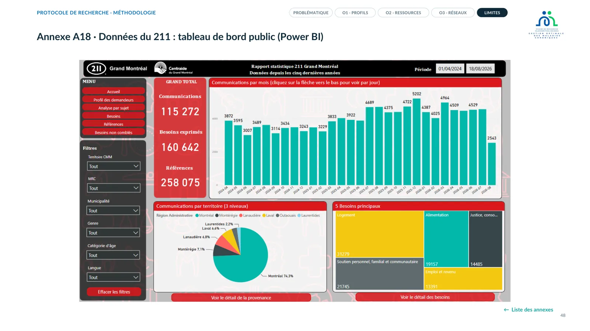
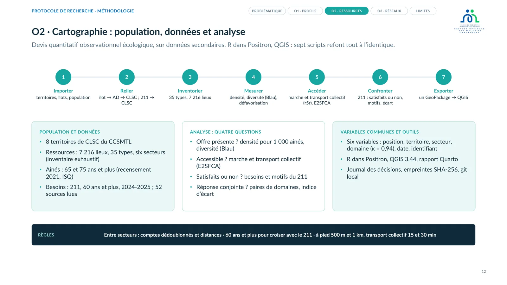
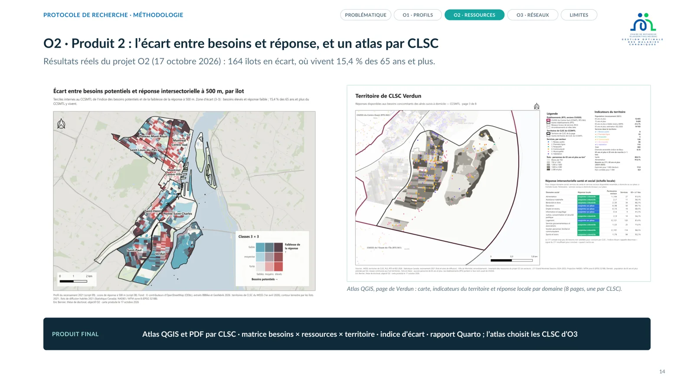
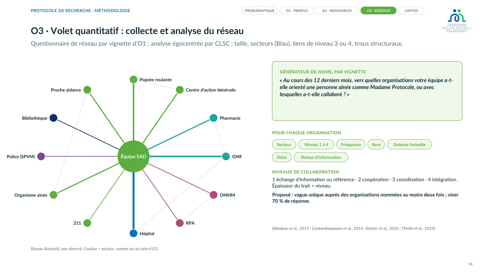
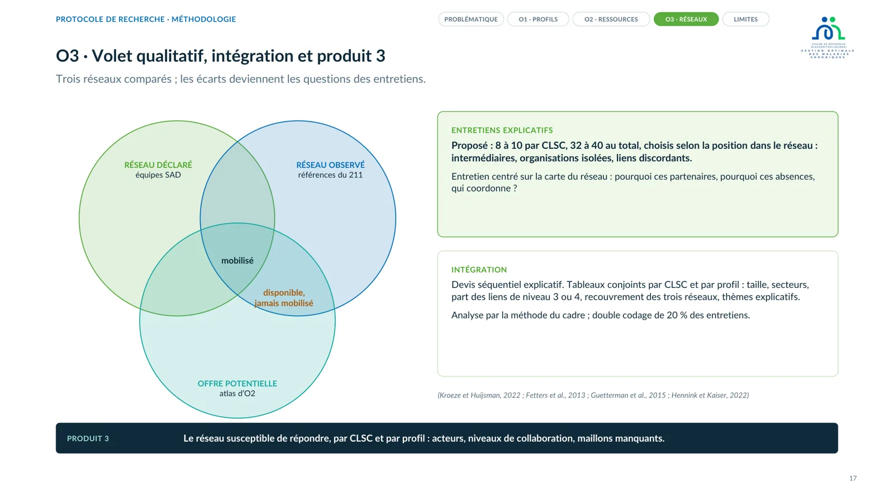
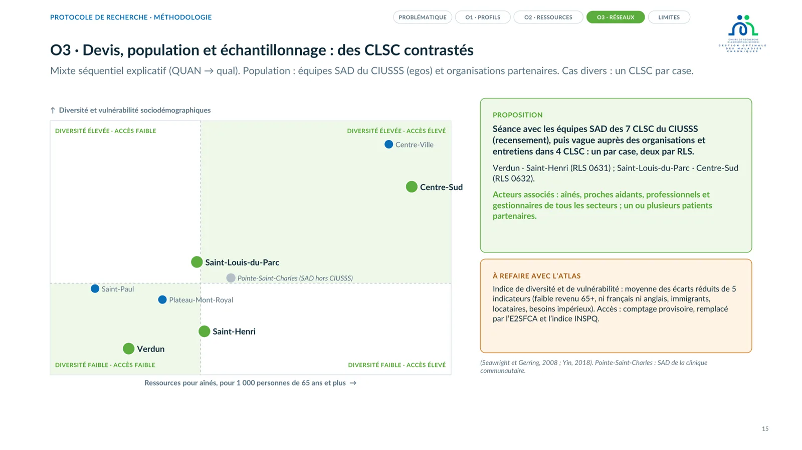
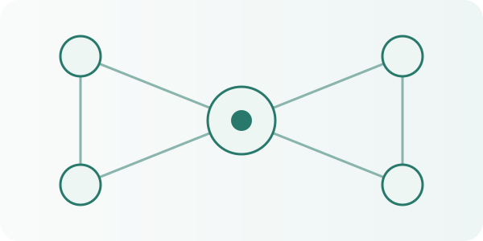

PhD student in public health (2nd year) · Jurist · Entrepreneur · Special needs educator
From people to policy: an integrated view of health systems
From supporting people to public health research, my path has led me to explore the different scales of the health system: from individual realities to organisations, all the way to public policy and governance.
These experiences, at the crossroads of practice, management, law and research, have shaped a conviction: transforming health systems means bringing human experiences, scientific knowledge, collective dynamics and political choices into dialogue.
My ambition is to open doors between these worlds that sit side by side without always understanding one another, to break down silos between perspectives and bring research closer to action, so as to foster self-determination, inform collective decisions and contribute to a fairer, healthier society.
Drag to exploreClick a door to enterSwipe the doorsTap to enter
6 doors
Drag to look left or right, or move the mouse towards the edges. Click a door or section to enter.
Swipe through the doors or choose a number. Tap a door or a section to enter.
Drag to exploreSwipe the doors
Click a door to step in
The path at a glance
Since 2025PhD in public health, École de santé publique de l’Université de Montréal (ESPUM) and Centre de recherche du CHUM (CRCHUM), Canada
2025Master’s in public law (health and social law), Paris-Panthéon-Assas (France)
2024–2025Health and social care project officer, Agence nationale d’appui à la performance (ANAP, France)
2024Master’s-level degree in social care management, Université de Bretagne Occidentale (UBO, France)University diploma in entrepreneurship and management, IAE de Brest (France)EHPAD management internship, Fondation Ildys, Landerneau (France); residential home for dependent older adults (Quebec equivalent: CHSLD)
2016–2024Manager of adapted holiday and respite stays (France)
Career in figures
Disability support & respite
years supporting people with disabilities
10
adapted holiday stays directed
100+
people benefiting from holidays outside institutions
1,000
families benefiting from respite stays
≈200
Education & teaching
graduate-level university qualifications
4
teaching assistantshipsUniversité de Montréal
4
special jury distinctions
3
best poster awardGFSP 2026 · doctoral category
1
Networks & engagement
students represented
3,000
experts in the health and social care networkContribution to facilitating the network
30
cumulative attendances at webinars and communities of practiceManagers and health professionals
2,000+
students in the regional mental health surveySurvey design and leadership
1,000
About the figures
Teaching: Université de Montréal.
Best poster: GFSP, 2026, doctoral and postdoctoral category.
Health and social care network: contribution to facilitating the expert network.
Webinars and communities of practice: facilitation and moderation; cumulative attendances by managers and health professionals.
Mental health: design and leadership of a regional student survey.
01.1My thesisDoctoral project
Doctoral thesis in progress
Topic under development and subject to change
Provisional title
Organising the intersectoral response to older adults at home with combined social needs and morbidity: profiles, resource mapping and network analysis
Research question
How is the intersectoral response organised today around older adults at home who combine social needs and morbidity: according to which profiles, with which resources and through which networks?
01Context
The research question
How is the intersectoral response organised today around older adults at home who combine social needs and morbidity: according to which profiles, with which resources and through which networks?
1. The problem: needs that exceed supply
In Quebec, home care and support (SAD) covers the care and services provided in people’s homes by the public network, mainly by the team of the CLSC (local community service centre). In 2024-2025 it served 395,783 people, for 37.2 million hours; 17,883 people were waiting for a first service. Among people aged 65 and over, 80% live with at least one chronic disease and half with several (multimorbidity) (Ministère de la Santé et des Services sociaux [MSSS], 2026a, pp. 4 and 6).
Share of needs met by the public network, 2023
Home care10.7%
RI-RTF68.8%
CHSLD98.9%
Home care: 25.4 of the 234.7 million hours required (CSBE, 2024, p. 11).
People waiting for a first home care service
31 March 201913,250
31 March 202217,226
An increase of about 30% in three years (CSBE, 2024, pp. 2 and 96).
Long-term care users and resources
Users followed at home84%
Resources for home care38%
Residential care receives 62% of funds for 16% of users (CSBE, 2024, p. 7).
Health of people aged 65 and over in Quebec
At least one chronic disease80%
Multimorbidityhalf
And 91% of people over 55 identify with “at home for life” (CSBE, 2024, p. 7; MSSS, 2026a, p. 4).
After the four volumes of Bien vieillir chez soi (2023-2024), the Health and Welfare Commissioner (CSBE) concludes that the home care ecosystem is complex, poorly integrated and underperforming. In 2023, the public network provided only 25.4 of the 234.7 million hours required at home: a response rate of 10.7%, compared with 98.9% in CHSLDs. Home care receives 38% of long-term care resources for 84% of users, and people waiting for a first service rose from 13,250 (2019) to 17,226 (2022). The rest relies on family caregivers, community organisations and the private sector, that is, on sectors outside the public network.
In the study area (CCSMTL, 8 CLSC territories), 48,575 people are aged 65 and over in 2026 (ISQ). In 2021, 28.6% of them lived below the low-income threshold, up to 41.8% in Pointe-Saint-Charles and 38.7% in Centre-Sud; 66.9% of households rent (Statistics Canada). At 211, the needs of people aged 70 and over concern first personal and community support (21.9%) and housing (13.4%), two domains where their needs remain unmet twice as often as for all ages. Among people aged 60 and over, the most frequent reason is “service not available” (324 needs), followed by eligibility criteria (210) and lack of transport (66). Only 44 requests from people aged 60 and over come from a CLSC.
Hours required, hours provided and response rate in long-term care, Quebec, 2023: the public network meets 10.7% of needs at home. Screenshot: Commissaire à la santé et au bien-être (2024), Bien vieillir chez soi, Volume 4, executive summary, p. 11 (projections by Clavet et al., HEC Montréal, 2023).
The six key figures of the Quebec problem. Source: Bernier, E. (2026). Thesis methodology O1-O3 [presentation, in French], slide 2.
2. When needs pile up, the response gets harder
An older person may live at the same time with one or more morbidities (health problems, acute or chronic) and several social needs: unsuitable housing, too little income, isolation, no transport, an exhausted caregiver. These are called co-occurring social needs. Together they are complexity factors: each makes the others harder to solve, and the person’s care pathway becomes less fluid (Safford et al., 2007; Grembowski et al., 2014; Schaink et al., 2012; Johnson & Bacsu, 2018). The Mieux chez soi policy recognises this: when needs span several areas of life, several practitioners “must work together”, and chronic diseases make home care needs more complex and more intensive (MSSS, 2026a, p. 4).
These situations are hard to detect, because no single service sees all of a person’s needs. They are also hard to coordinate: the Health and Welfare Commissioner (CSBE) describes the home care ecosystem as complex, poorly integrated and underperforming. A joint, tailored and coordinated response is not always possible. It is plausible that, in the same territory, organisations do not know each other or do not work together, and that a resource is missing while no one knows that another one, from another sector, could take its place. No study shows this directly: it is an inference, suggested by research on service networks, on the capacity of community organisations and on how hard it is to find available help (Lemieux-Charles et al., 2005; Varda et al., 2020; Hogg-Graham et al., 2021; Macleod et al., 2017). At 211, the most frequent reason why needs of people aged 60 and over remain unmet is “service not available”.
The chain of complexity: one or more morbidities plus co-occurring social needs make a situation hard to detect and coordinate. Source: Bernier, E. (2026). Thesis methodology O1-O3 [presentation, in French], slide 3.
3. Many entry points, not just one
The Mieux chez soi policy wants the CLSC to be the main entry point (MSSS, 2026a, p. XII). In practice, an older person enters the network through many doors: the CLSC home care team; the day hospital; a hospital stay; the emergency department after a fall; home care from the CISSS or CIUSSS (the regional health and social services institutions); the family medicine group (GMF); the pharmacy; the municipality; social housing; paratransit; a community organisation; a family caregiver; 211, the information and referral service. Each door sees part of the situation; none guarantees that all needs will be taken into account.
Twelve possible entry points; the CLSC, intended as the main door (MSSS, 2026a, p. XII), is only one of them. None sees all needs on its own.
Entry points, and what poorly connects them. Source: Bernier, E. (2026). Thesis methodology O1-O3 [presentation, in French], slide 4.
4. What already exists in Quebec to integrate services
The government policy on first-line health and social services (MSSS, March 2026) attaches each person to a CLSC territory, which becomes the reference unit for coordinating first-line care (p. 15). It gives the CLSC four roles: navigator, coordinator, intersectoral leader and co-facilitator (p. 42). The accompanying ministerial orientations find that the CLSC, designed as a territorial hub, has become devitalised and cut off from its original mission (p. 1): the aim is to restore that role.
Several arrangements already bring stakeholders together. PRISMA, a Quebec model of integrated services for frail older people, combined a single entry point, case management, a shared assessment tool and partner coordination; its evaluation showed less functional decline and fewer unmet needs (Hébert et al., 2003, 2010; Couturier et al., 2021). The MSSS Integrated Local Approach for Older Adults (AIPPA, 2024) relies on collaborative practices and on identifying people with needs (p. 8), on ITMAV outreach workers and the community organisers of health institutions (p. 28), and on communities of practice (p. 59; Ranmuthugala et al., 2011). The community organiser, attached to the community organisation service of the CISSS or CIUSSS, is the link between the institution and local organisations (Bourque & Lachapelle, 2010).
Intersectoral action is not new in Quebec: the 2003 policy Chez soi : le premier choix already called for it, and the Université de Montréal RUISSS (2022) proposed a six-sector diagram (public network, first line, parapublic, community, city, housing) and four levels of collaboration (information exchange, cooperation, coordination, integration; after Bilodeau, Parent and Potvin, 2019). The MSSS AIPPA approach and its intersectoral liaison committee at the CCSMTL extend this work. What is missing is a way to know, territory by territory, which sectors to mobilise for which combinations of needs.
The CLSC, the local governance unit, and its four roles: navigator, coordinator, intersectoral leader and co-facilitator. Screenshot: MSSS (2026), Politique gouvernementale sur les soins et services de première ligne, p. 42.
This diagram, together with the literature, was used to delimit the sectors studied in the thesis (MSSS, 2026b, p. 42; Bilodeau et al., 2019).
These arrangements are valuable, but the intersectoral response remains hard to see. It often rests on local partnerships: a community of practice, a coordination table, one person acting as facilitator. If that person leaves or funding stops, the response weakens: it is not sustainable and often incomplete. Above all, none of these arrangements says which combinations of needs recur most, which resources exist for each in a territory, or how the network organises itself today to respond. That is exactly what the thesis addresses.
What the 2026 policy changes (MSSS, 2026b, pp. 15 and 42). Source: Bernier, E. (2026). Thesis methodology O1-O3 [presentation, in French], slide 6.
5. What the literature has already tried
It shows that the social needs of older adults living at home are frequent and cumulative (McManus et al., 2025; Tingvold et al., 2026), that they cluster (Kreuter et al., 2021) and that profiles of met and unmet needs exist, but mostly based on the CANE and on caregivers’ views (Janssen et al., 2020; Kraake et al., 2024). It documents referral, navigation and social prescribing (Hébert et al., 2010; Percival et al., 2022) and mapped service supply (Kim, 2026; Álvarez-Pérez et al., 2025).
It does not yet say which combinations of needs recur among people receiving home care, nor which remain unmet; it rarely links these combinations, within a territory, to accessible resources; and its network analyses record whether a tie exists, rarely its level of collaboration, almost never starting from the home care teams of several CLSCs. The O1 scoping review starts from 60,957 records from four databases (MEDLINE, Embase, APA PsycInfo, PubMed): 8,938 published before 2006 removed, 52,021 imported into Covidence, 25,412 duplicates removed, 26,609 studies to screen by two reviewers.
Some studies have already mapped older adults’ needs and resources: in Quebec, the study led by Anne-Marie Séguin (INRS) for the Société d’habitation du Québec (2018) described the met and unmet needs of people aged 75 and over by type of area, then local resources and people’s strategies. Juliette Duc and colleagues mapped, with QGIS and R, the supply of and demand for services for people aged 65 and over across Quebec: fewer services per older person in rural areas and strong local variability (Duc et al., 2026). Others have described need profiles among people with dementia living at home (Janssen et al., 2020) or analysed service networks with social network analysis, SNA (Urbanoski et al., 2018). No study identified yet links co-occurring social needs and one or more morbidities as complexity factors at the scale of a CLSC territory.
The principal gap
The literature is not empty on each component of the question, whether the measurement of multiple social needs, their co-occurrence, patients’ desire for assistance or the services that respond to them. However, no synthesis identified brings together, for adults in primary care, the unmet nature of needs, their co-occurrence, their prioritisation by patients, their interrelations, the response network and the trajectory to resolution. The gap therefore lies in the link between how needs are configured and how the cross-sector response is configured, and in the mechanisms that explain why some needs persist despite being identified.
For methodological accuracy, the wording used is ‘no synthesis identified in the PubMed and Cairn searches conducted’ rather than ‘no synthesis exists’.
Three gaps, each leading to an objective. Source: Bernier, E. (2026). Thesis methodology O1-O3 [presentation, in French], slide 7.
6. An intersectoral response, not only an individual intervention
The home care social worker assesses a person’s situation, refers and supports them: this is an individual intervention, and it is essential. An intersectoral response to the co-occurring social needs of a person with one or more morbidities is something else: it is the organisation, in a territory, of several sectors (health, social services, community, municipality, housing, transport) acting together, durably, for the same combination of needs. Today the issue is not practitioners’ skills but the lack of a shared organisation: each practitioner rebuilds, case by case, a network that could be known in advance. Social work assesses, refers and coordinates case by case; an intersectoral response organises several sectors in advance around a profile (Couturier et al., 2022; Bilodeau et al., 2019). The challenge: moving from “who knows whom” to an organised, lasting response.
Social work today
Intended intersectoral response
Assesses one person’s situation
Organises several sectors in advance around a needs profile
Refers to a resource
Health, social services, community, municipality, housing, schools, daycares
Coordinates a file, case by case
Also relieves caregivers: respite, day centres, meals on wheels, transport
Depends on “who knows whom”
Organised, known and lasting in each territory
Based on Couturier et al. (2022) and Bilodeau et al. (2019).
Social work and intersectoral response. Source: Bernier, E. (2026). Thesis methodology O1-O3 [presentation, in French], slide 5.
7. Secondary strand: lived territory and administrative territory
The 2026 policy makes the CLSC territory the reference unit. Its accompanying Orientations state that this territory is no longer a mere administrative division but a living space, and that the 166 current territories are not ends in themselves (MSSS, 2026c, summary and p. 4; MSSS, 2026b, p. 42). Yet CLSC territories were first defined to assign a population to each institution (MSSS, recommendations on managing territorial data); in Montreal, public health has divided the island into 101 neighbourhoods closer to communities, and administrative units do not always match lived environments (Di Méo, 1998; Riva et al., 2008; Macé, 2010; Breton et al., 2009). As a secondary question, the thesis will check whether the resources people actually use follow the CLSC boundaries or cross them.
8. The idea of the thesis
Hence the starting idea: identify the most frequent profiles of co-occurring social needs among older adults receiving home care; for each profile, locate the resources available in each CLSC territory; then understand how the response is organised today, in order to improve it. The thesis concerns older adults with one or more morbidities who live at home and receive home care in the eight CLSC territories of the CIUSSS du Centre-Sud-de-l’Île-de-Montréal (48,575 people aged 65 and over in 2026).
The common thread fits in three words: profiles → resources → network. O1 says which combinations of needs recur; O2 says, territory by territory, what exists to respond and what is missing; O3 says who already works together and which links are missing. Each step gives the next what it needs.
9. My standpoint
My thinking comes from my path across several sectors and from observing home care policies, on which I worked at ANAP. As a specialised educator, I saw how hard it is to organise a joint response to the most complex situations, when several services intervene without coordinating. This thesis seeks to make visible, and therefore organisable, what today rests mostly on everyone’s goodwill.
Documentary foundations
The resources below inform conceptualisation. The title, research question, thesis argument and objectives in their dedicated sections constitute the current framing of the project.
Conceptualising the research project
I am at the conceptualisation stage: a corpus of prioritised publications, the gaps it reveals and the training readings that support it.
222publications retained
39priority readings
83important readings
9gap dimensions examined
Distribution by priority
Priority 539
Priority 483
Priority 346
Priority 224
Priority 130
Sources of the publications
222
PubMed112
Embase and MEDLINE (Ovid)95
Cairn15
The corpus was assembled from Ovid (Embase, MEDLINE), PubMed and Cairn, and each publication was assigned a priority according to its relevance to the thesis question.
What the literature leaves open
For each of the nine dimensions examined, the table shows the state of the literature, the significance of the gap and a few key references.
Conceptualisation
Substantial
Present but not yet settled
Studies indexed in PubMed increasingly distinguish social risk, social need and desire for assistance. French-language work in Cairn adds a vocabulary of precariousness and social vulnerability that is often multidimensional but conceptually broader than unmet need.
Gruß 2021; Tucher 2026; Tudrej 2019; Karran 2023
Measurement
Substantial
Abundant but heterogeneous
Instruments differ markedly in their domains, thresholds and mode of administration. Multidimensional deprivation scores found in Cairn, such as EPICES and PRECAR, are not equivalent to unmet social needs questionnaires.
Zein 2026; Karran 2023; Tudrej 2019; Rogers 2025
Characterisation and prevalence
Moderate
Well documented for at least one need
Many studies describe prevalence by domain and cumulative burden, but estimates are difficult to compare when the definition of need and the instrument differ.
Jih 2023; Bleacher 2020; Fiori 2021
Multiplicity and co-occurrence
Substantial
Emerging but now demonstrated
The coexistence of several social needs or risks is common, and clusters, classes and cumulative burden measures have been proposed. A recent study also shows that multiple risks sharply increase the likelihood of wanting assistance.
Vest 2025; Kreuter 2021; Zeng 2024; Tucher 2026
Prioritisation by patients
Major
A few direct studies, but a field still underdeveloped
The literature mainly measures desire for assistance, negotiated goals, acceptability or relative priority, and recent work reinforces the distinction between detected risk and desired help. The e-CARE studies show support adjusted to the patient’s pace and priorities, without producing a standardised ranking of needs.
Mostly described as co-occurrence or overall complexity
Quantitative analyses mainly document co-occurrence and profiles. Qualitative French-language work in Cairn describes how social, administrative, economic and health difficulties are intertwined, but rarely their direction, sequence or causal mechanism.
Vest 2025; Kreuter 2021; Marron-Delabre 2015; Ouanhnon 2022
Resolution and trajectory
Major
Growing but dominated by intermediate indicators
The field increasingly distinguishes screening, referral, connection, receipt of a resource and resolution. French-language e-CARE studies also track concrete outcomes such as access to entitlements, a regular doctor, housing and autonomy in navigating care, but without a standardised measure of whether each need is resolved.
Substantial literature, but often separate from patient data
PubMed documents navigation, community health workers, medical-legal partnerships and closed-loop referral, while Cairn documents social units in general practice and French primary care and territorial coordination structures (MSP, CPTS, DAC). Yet the configuration of the network is rarely linked to need profiles and their resolution.
No synthesis located brings together, for adults attending primary care, the unmet nature of needs, multi-domain measurement, patterns of co-occurrence, the priority patients give to their needs, interrelations between needs, the configuration of the mobilisable network and the trajectory to resolution.
Karran 2023; Vest 2025; Chang 2026; Tudrej 2019; Ouanhnon 2022
Rodriguez J.; Nafisi A.; Rob-Inson C.; Arteaga E.; Pierce L.D.; Sunn L.; Kim K.J. (2018) Social determinants of health screening and com-munity resource referral in a safety-net resident primary care clinic. Conference abstract
How is the intersectoral response organised today around older adults at home who combine social needs and morbidity: according to which profiles, with which resources and through which networks?
Research problem and objectives
Research question
How is the intersectoral response organised today around older adults at home who combine social needs and morbidity: according to which profiles, with which resources and through which networks?
The question, the overall objective and who it will serve (MSSS, 2026b, pp. 15 and 42). Source: Bernier, E. (2026). Thesis methodology O1-O3 [presentation, in French], slide 9.
Thesis proposition
For older adults receiving home care, the intersectoral response cannot be organised need by need: it must be organised by profile of co-occurring needs and by CLSC territory, based on the resources actually available and the networks actually mobilised around home care teams.
Overall objective
To produce, by profile and by CLSC territory, guidance for organising the intersectoral response with the resources actually available.
Specific objectives
O1 Identify profiles
1 · Gap
The co-occurring social needs of older adults living at home are documented, but in a fragmented way: definitions, measures and profiles vary. No study identified derives profiles from home care assessments (OEMC, interRAI-HC) or from 211 requests (Wilks et al., 2026; Janssen et al., 2020; Kraake et al., 2024; Kreuter et al., 2021).
2 · Objective
Identify the different types of profiles of co-occurring social needs among older adults with morbidity or comorbidity factors who are followed in home care services (CLSC).
3 · Final output
Final output: a typology of profiles of co-occurring social needs, met or unmet, translated into vignettes. What it gives us: knowing which combinations of needs recur most, so the response can be organised around them.
O2 Network resources
1 · Gap
Analyses of supply start from a directory fixed in advance, without spatially cross-referencing it with expressed and unmet needs. Directories are often inaccurate; it is not known where supply is absent, inaccessible or saturated (Kim, 2026; Janda et al., 2021; Garcia et al., 2025).
2 · Objective
Map, in space, the resources in each CLSC territory that could provide an intersectoral response to these needs.
Six sectors: public network, first line, parapublic, community, municipality, housing.
3 · Final output
Final output: an atlas by CLSC territory, a needs × resources matrix and a gap index. What it gives us: knowing, for each profile, where the response exists, where it is missing, and why (absent, inaccessible or saturated).
O3 SNA: network response
1 · Gap
Responses to older adults’ social needs are mostly studied as referral processes. Interorganisational networks are most often measured without a level of collaboration and rarely start from several CLSCs (Hébert et al., 2010; Bevc et al., 2015; Richter et al., 2026).
2 · Objective
Identify the organisational trajectories of the intersectoral resources mobilised to respond to the different profiles, in several contrasting CLSC territories (SAD).
With the home care teams of the CIUSSS du Centre-Sud-de-l’Île-de-Montréal.
3 · Final output
Final output: a network map for each CLSC and each profile, with the missing links. What it gives us: knowing who already works together, who should, and which links to act on.
Each objective, its design, its population and its final output. Source: Bernier, E. (2026). Thesis methodology O1-O3 [presentation, in French], slide 10.
Four concepts
Co-occurring needs
At least two social needs from different domains, present at the same time in the same person.
(Kreuter et al., 2021)
One or more morbidities
Any health problem, acute or chronic. A person may have only one or several.
CLSC home care
The health and social care and services provided at home by the team of the CLSC territory.
(MSSS, 2026)
Unmet need
At 211, a need is unmet when no adequate resource could be offered, with a reason. It is measured; it is not made an inclusion criterion.
(Alderwick and Gottlieb, 2019)
“Met or unmet”: what do we mean?
“Unmet” changes meaning depending on the source. At 211, a need is “unmet” when no suitable resource could be offered, with a reason; for Statistics Canada or INSPQ, it is a perceived need without service received; in the CANE, a problem without adequate help according to an assessor. The thesis uses the 211 definition and compares met and unmet needs in all three objectives (Alderwick & Gottlieb, 2019).
The subject and its terms, defined once and for all. Source: Bernier, E. (2026). Thesis methodology O1-O3 [presentation, in French], slide 8.
03Methods
Methods
Overall design: pragmatic stance; multiphase mixed methods (Creswell and Plano Clark, 2017), O1 → O2 → O3, each phase building the next. O1 vignettes serve as the name generator in O3; the O2 atlas selects the O3 CLSCs and provides the potential supply. Field stakeholders are involved in every phase: older adults, family caregivers, professionals, managers and partners from all sectors, with one or more patient partners.
O1 Profiles
Design
Scoping review (JBI, PRISMA-ScR), plus a quantitative descriptive analysis of 211 requests.
Population
Studies on people aged 65 and over living at home with one or more morbidities; 211 requests from people aged 60 and over in the CCSMTL territory.
Sampling
None: all the literature identified is examined. Databases: MEDLINE, Embase, APA PsycInfo (Ovid) and PubMed; a 42-line strategy in 7 blocks, validated on 6 reference articles.
Data collection
60,957 records → −8,938 (before 2006) → 52,021 in Covidence → −25,412 duplicates → 26,609 to screen. Screening by two independent reviewers (titles and abstracts, then full texts), pilot test on 25 records; double extraction (definitions, instruments, domains, profiles).
Analysis
Descriptive synthesis into a grid of 10 to 14 domains linked to the 211 taxonomy; met and unmet needs at 211, with their reasons.
Product
Typology of co-occurring need profiles and vignettes.
Why profiles of co-occurring needs rather than 12 separate domains?
An older person does not experience needs one by one: the stairs, groceries, loneliness and forms reinforce each other. Keeping 12 separate domains reproduces the fragmentation the CSBE criticises in home care, where each service answers only its own domain. A profile describes the combination, and therefore the response to organise: whom to mobilise together. It includes one or more morbidities, because they change the nature of the response (half of people aged 65 and over live with several morbidities).
Why profiles and not the individual?
Feasibility first: individual home care data (OEMC, I-CLSC) require legal authorisation and at least 2,000 users; the protocol’s simulation shows that below that the profiles cannot be recovered, and that at 211 (1.4 needs per request) no sample size is enough. Next, the level of decision: a CLSC plans for groups of situations, not for one case. Finally, ethics and transfer: a profile turned into a vignette (Madame Protocole) can be submitted to every team without exposing anyone.
Screening under way in Covidence: 52,021 records imported, 25,412 duplicates removed, 26,609 studies to screen. Screenshot: Covidence, Eric Bernier’s O1 scoping review, October 2026.
O2 Available responses
Design
Quantitative observational ecological study using secondary data.
Population
The 8 CLSC territories of the CCSMTL; all resources of the six sectors (7,216 locations, 35 types); older adults aged 65 and 75 and over (2021 census, ISQ); 211 needs of people aged 60 and over (2024-2025).
Sampling
Exhaustive inventory, no sample; 52 sources entered in the register.
Data collection
Six common variables (location, territory, sector, need domain, source date, constructed identifier); double coding, κ = 0.94.
Measures
Density per 1,000 older adults; access on foot (500 m, 1 km) and by public transit (15 and 30 min, E2SFCA); met or unmet needs (211); joint response to two domains.
Analysis
R in Positron, QGIS maps; gap index (supply absent, inaccessible, saturated, ineligible); spatial clusters (local Moran’s I). Examples are by need domain (14 AIRS categories of 211), pending O1.
Product
Atlas by CLSC, needs × resources × territory matrix, gap index. Example: 164 blocks with a gap, home to 15.4% of people aged 65 and over.
Why mapping?
Because the 2026 policy makes the CLSC territory the reference unit: the response must be judged where people live. The map sets met and unmet needs against the resources of the six sectors, measures accessibility on foot and by public transit (E2SFCA) and distinguishes supply that is absent, inaccessible or saturated. It also selects, transparently, the 3 or 4 contrasting CLSCs for O3. R in Positron and QGIS make every indicator recalculable.
Analytical atlas · Saint-HenriThe numbered R scripts of the mapping project, run in Positron: each indicator is recalculated when the sources are updated. Screenshot: Positron, Eric Bernier’s O2 Mapping project, October 2026.The layout of the atlas by CLSC territory in QGIS. Screenshot: QGIS 3.44, Eric Bernier’s O2 Mapping project, October 2026.
CIUSSS home care teams (egos) and partner organisations.
Sampling
Purposive, diverse cases. 3 or 4 CLSCs contrasted by sociodemographic diversity and access (proposed: Verdun, Saint-Henri, Saint-Louis-du-Parc, Centre-Sud; Pointe-Saint-Charles excluded, as its home care is run by a community clinic). Several respondents per team; 8 to 10 interviews per CLSC, chosen by position in the network.
Data collection, QUAN strand
(1) Egocentric network of each home care team, with a name generator for each O1 vignette (“to which organisations did you refer her, or with which did you collaborate, over the past 12 months?”); for each tie: sector, level of collaboration 1 to 4, frequency. (2) Questionnaire to the organisations named, to situate the ties of the past 12 months; 70% response targeted.
Data collection, qual strand
(3) Retrace the pathway of each profile through interviews centred on the network map.
Analysis
Size, sector diversity (Blau), share of level 3 or 4 ties, structural holes; thematic analysis, with double coding of part of the interviews.
Integration
After the QUAN strand, the gaps between the declared network, 211 referrals and the atlas supply become the interview questions; joint displays by CLSC and by profile.
Involving field stakeholders
SNA gives a voice to field stakeholders: home care teams, organisations from all sectors and their managers describe their ties. Interviews also include older adults, family caregivers and patient partners, and the results are presented to them for validation.
Product
The network by CLSC and by profile, with the missing links. Published example: Urbanoski et al., 2018 (doi:10.1371/journal.pone.0206671).
Why social network analysis (SNA)?
A resource available on the map is not necessarily mobilised. Only network analysis shows who actually works with the home care team, at what level of collaboration and where the missing links are. Published examples: Contandriopoulos et al. (2016, Healthcare Policy) mapped collaborations among Canadian chronic disease prevention organisations; Richter et al. (2026, BMC Health Services Research) used an egocentric network to analyse the coordination of health promotion in municipalities; Lemieux-Charles et al. (2005, The Gerontologist) studied community dementia care networks in Ontario.
The design of the network component
Egocentric network: the ego is the home care team of each CLSC. For each profile (vignette), a questionnaire asks to which organisations the team referred an older person, or with which it collaborated, over the past 12 months, with the sector, level of collaboration (1 to 4), frequency and delay. The SNA (size, diversity, share of level 3 or 4 ties) is then contextualised through interviews with the actors, who retrace the pathway of each profile: who intervenes, in what order, and where it breaks.
Conceptual illustration of the thesis
The ego-centred network of the home care team
In my thesis, network analysis starts from the home care team of each CLSC. For each vignette, the team names the organisations to which it has referred an older adult, or with which it has collaborated, over the past 12 months; line thickness indicates the level of collaboration, from 1 to 4. This declared network is compared with 211 referrals and with the atlas supply, then explained in interviews. Illustrative network, not observed.
Limitations and safeguards
A 211 request is not a person : we analyse the needs grouped in the same request.
211 publishes at borough level : Verdun matches its CLSC exactly, and the postal code is requested.
Directories are incomplete : official sources first, completeness measured.
Declared networks depend on memory : several respondents, and comparison with 211 and the atlas.
3 or 4 cases allow no statistical inference : case comparison, explained by the interviews.
Supply (October 2026) and needs (2024-2025) are not from the same year : the gap is shown.
04Feasibility
Feasibility
A thesis is feasible when three conditions are met: the data exist and are accessible, the methods are mastered, and the timeline leaves enough time to carry them out. For this project, the first two are already met; the timeline, presented at the end, shows the work done and the work that remains.
Feasibility is secured
The data are accessibleThe agreement with 211 has been obtained; everything else is public and online.
O2 is already equippedData, coding and software (R in Positron, QGIS) are in place; maps have already been produced.
A single uncertainty, already coveredThe 2026 Census; failing that, the 2021 Census.
A strengthened reviewThe extraction is being redone with a librarian and several reviewers.
A field site opening upA partnership with the CIUSSS du Centre-Sud is under discussion for the network analysis.
1The data: already in hand or online
The thesis does not rely on any individual-level database from the health network. It works with profiles, drawing on public or aggregated sources, and on original data collection for Objective 3. Each source has a known status.
Agreement211. The agreement with 211 has been obtained. Its data are more complete in the Montréal Metropolitan Community (CMM), where 211 Grand Montréal covers Montréal and neighbouring regions: from 2024 to 2026, its public dashboard records 115,272 contacts, 74.3 % of them from Montréal (211 Grand Montréal, 2026).
DoneThe O1 review literature. Four databases searched on October 17, 2026 (MEDLINE, Embase, APA PsycInfo, PubMed): 60,957 records, 26,609 studies to screen after deduplication (Bernier, 2026).
DoneThe O2 resource inventory. 7,216 service sites of 35 types, across the six sectors, geolocated in the 8 CLSC territories, drawn from 52 sources; double coding, with agreement κ = 0.94 (Bernier, 2026).
OnlinePopulation and territories. 2021 Census, CLSC territory boundaries and public directories for the six sectors (Statistique Canada, 2022).
UncertaintyThe 2026 Census. Released in 2027; see the next section.
To be collectedThe O3 network. Questionnaires and interviews with home care support (SAD) teams and their partners, after ethics approval.
The scoping review, redone with several reviewers
The literature search is complete: the records have been deduplicated in Covidence. To strengthen the review, the extraction carried out with the librarian will be redone with several reviewers. Each study will be screened by two independent people, first on title and abstract, then on full text, after a pilot test on 25 records; data will be extracted in duplicate (Bernier, 2026).
This approach follows the standards for scoping reviews: the JBI guidance for conduct (Peters et al., 2020) and PRISMA-ScR for reporting (Tricco et al., 2018). Two independent readings limit the risk of wrongly excluding a study.
From records to studies to screen, October 17, 2026 (Bernier, 2026).
211 receives requests for help from individuals, their families and caregivers, and practitioners. Its public dashboard already describes, by borough, the needs expressed, the unmet needs and their reasons. For people aged 70 and over in the territory, it records about 3,700 requests from 2021 to 2026, and 691 unmet needs among people aged 60 and over, all with a coded reason (Bernier, 2026).
The agreement with 211 gives access to a finer extraction. Because its data are more complete in the CMM, access is easier and the comparison with the network reported by SAD teams, in O3, becomes more precise.

Public dashboard of 211 Grand Montréal, used for O1 and O2 (211 Grand Montréal, 2026).
O2: data, coding and software already in place
For Objective 2, the longest part of the work is done. Seven R scripts, run in Positron, import the territories, link each block to its CLSC, inventory the resources, measure access on foot and by public transit, then export the layers to QGIS. Every decision is recorded in a log, and every file read receives a fingerprint: everything can be recomputed identically (Bernier, 2026).
While waiting for the O1 profiles, the examples are produced by need domain. The mapping will be redone by profile, with the same scripts.
7,216geolocated service sites
52sources listed in the register
κ = 0.94double-coding agreement
8atlas pages, one per CLSC

The O2 processing pipeline, from import to atlas (Bernier, 2026).
A first result, already measurable
The O2 examples already give an order of magnitude: 164 blocks show a gap between potential needs and nearby response, and 15.4 % of people aged 65 and over live there (Bernier, 2026). This figure will be recalculated by profile; it shows that the method works on real data from the territory.

QGIS atlas, Verdun page: 164 blocks with a gap, 15.4 % of people aged 65 and over (Bernier, 2026).
2The single uncertainty: the census
For O2, the project depends on only one external source: the census, which provides the number of older adults per block and their living conditions. The 2026 Census will be released in stages, from February to December 2027: population in February, age in May, households and income in July, general health status in October (Statistique Canada, 2026).
2026 Census releases; in green, those O2 needs first (Statistique Canada, 2026).
The decision rule is simple. If the O2 analysis can wait until summer 2027, it will use the 2026 Census. Otherwise, it will use the 2021 Census, already in hand, supplemented by the 2026 population projections by CLSC territory (Bernier, 2026). In both cases, the thesis timeline is maintained: the uncertainty affects how current the denominators are, not feasibility.
3O3 in the field
The third objective is the only one that requires new data collection. It runs over 12 months in two phases: first an ego-centred network analysis, which maps the network, then interviews that explain the observed interactions. This is an explanatory sequential mixed-methods design: the network figures raise the questions, and the interviews answer them (Creswell & Plano Clark, 2017; Fetters et al., 2013).
Network questionnaireEach SAD team (the “ego”) names, for each O1 vignette, the organisations it has worked with over the past 12 months.Sector, collaboration level from 1 to 4, frequency.
Network mappingThe organisations named are in turn invited to participate; the network of each CLSC is drawn.Size, diversity of sectors, share of level 3 or 4 ties.
InterviewsInterviews centred on the network map: why these partners, why these absences, who coordinates?8 to 10 per CLSC (Bernier, 2026).
Understanding the interactionsThe reported network is compared with 211 referrals and with the O2 atlas.Joint tables by CLSC and by profile.
The name generator
The question put to the teams starts from a fictional person, built from the O1 profiles: to which organisations have you referred her, or with which have you collaborated, over the past 12 months? For each tie, the questionnaire records the level of collaboration, from information exchange (1) to integration (4) (Bilodeau et al., 2019).
Using a vignette protects privacy: no real person is described, and all teams respond to the same situation.

Quantitative component of O3: an illustrative network, not observed (Bernier, 2026).
Target response rate: 80 %
The project aims for an 80 % response rate, in at least two contrasting CLSCs. The threshold is high because a network is sensitive to missing data: an organisation that does not respond makes its own ties disappear, and the network looks sparser than it is. To reach it, several respondents are approached per team and follow-ups are made by sector (Bernier, 2026). The 80 % rate is a planning target; recruitment and non-response will be monitored.
Planning target for the O3 network component.
Why several CLSCs, and contrasting ones?
With a single CLSC, it is impossible to know whether a dense network reflects the territory (a more advantaged population, many resources nearby) or the way the team is organised. By comparing territories that differ in deprivation, resource density and urbanity, we can distinguish what stems from the territory from what stems from the organisation. This is the logic of diverse cases: selecting cases that span the variation, so that the comparison is instructive and the results transferable (Seawright & Gerring, 2008; Yin, 2018).
One territory, very different realities (Statistique Canada, 2022; compilation by CLSC territory: Bernier, 2026).
Real contrasts across the territory
The CIUSSS’s 8 CLSC territories are highly unequal. The share of people aged 65 and over with low income nearly doubles from one end to the other, from 21.3 % in Verdun to 41.8 % in Pointe-Saint-Charles. Centre-Sud has the most renters (74.2 %) and the highest core housing need (11.7 %); Verdun has the largest number of older adults (12,535) (Statistique Canada, 2022; Bernier, 2026).
The current proposal retains Verdun, Saint-Henri, Saint-Louis-du-Parc and Centre-Sud, two per local service network. Pointe-Saint-Charles is excluded because its SAD falls under a community clinic. The final choice will be revisited with the O2 atlas (Bernier, 2026).
The partnership with the CIUSSS du Centre-Sud
For the network analysis, discussions on a partnership with the CIUSSS du Centre-Sud are under way, because the institution has stakes in the subject. The primary care policy also makes the CLSC territory the reference unit and notes that the supply “often remains little known” (Ministère de la Santé et des Services sociaux [MSSS], 2026, p. 25).
The network analysis with Centre-Sud adds what the data alone cannot tell us: contextualisation, and an understanding of the mechanisms behind possible responses and of why they are currently organised as they are. Combined with the 211 data, which are more complete in the CMM, it allows a precise comparison of the reported network, the observed network and the mapped supply.

Three networks compared; their gaps become the interview questions (Bernier, 2026).
4Involving the field
Field actors are involved in every phase, and not only as respondents. The network analysis gives them a voice: it is the teams and their partners who describe the ties that exist and those that are missing. The results are presented to them for validation before being published.
Older adultsThey say what matters, and in what order their needs arise.
CaregiversThey provide a large share of support and know the detours of the care pathway.
Patient partnersOne or more patient partners will be recruited to guide the project, from the vignettes to the interpretation.
Primary carePhysicians and nurses in family medicine groups (GMF), pharmacists, social workers, occupational therapists and other home care professionals.
Community organizationCIUSSS community organizers, facilitators and local round tables, including seniors’ round tables.
Community organizations and volunteersVolunteer centres, meals on wheels, food banks, seniors’ and caregivers’ organizations (respite, day centres).
Municipality and housingElected officials and municipal services, OMHM and social housing, private seniors’ residences, paratransit, libraries, recreation.
Education and early childhoodSchools and childcare centres (CPE), which can help or relay, especially for families who are also caregivers.
Safety and justiceSPVM community police officers, legal aid, action against elder abuse.
Public health and decision-makersRegional public health (DRSP), the CIUSSS SAPA directorate, the MSSS, the AIPPA intersectoral liaison committee.
211 and information linesReferral counsellors who direct requests for help to the right resources.
Private sector and social economyPharmacies, social economy home help enterprises (EÉSAD), local businesses.
Cultural and religious communitiesPlaces of worship and immigrant associations, often the first point of contact for isolated older adults.
ManagersThey decide how services are organized and what agreements bind partners.
Researchers and universitiesThe Université de Montréal RUISSS and research teams in the territory.
This list is not closed: through its inductive approach, the network analysis may reveal other actors and sectors, including private ones, that no one had anticipated.
CLSCs chosen with the field
The choice of the O3 CLSCs will be presented to the SAD teams before data collection: a session with the teams of the 7 CLSCs of the CIUSSS, then a wave with organisations and interviews in the selected CLSCs (Bernier, 2026). The O1 vignettes, the O2 atlas and the O3 network map all serve as discussion tools that everyone can understand.
Before any data collection, the project will obtain approval from a research ethics board and will specify consent, data protection and dissemination (Conseil de recherches en sciences humaines et al., 2022).

The choice of contrasting CLSCs, to be revisited with the O2 atlas (Bernier, 2026; Seawright et Gerring, 2008).
5Four-year timeline
The doctorate is planned over 16 quarters, from April 2025 to March 2029. After a year and a half, the courses and the preparation of the protocol are wrapping up, the O1 literature search is complete and the first O2 maps have been produced. The light part of each bar shows what remains to be done; the solid part, what is done.
20252026202720282029
Q2Q3Q4Q1Q2Q3Q4Q1Q2Q3Q4Q1Q2Q3Q4Q1
Training
Courses, comprehensive exam and protocolpresentation on Oct. 27, 2026
Ethicsapproval before any data collection
O1 · Profiles
Scoping reviewextraction redone with several reviewers
Analysis of 211 requests
O2 · Resources
Mappingexamples done, to be redone by profile
2026 Censusuncertainty: released Feb. to Dec. 2027
O3 · Networks (12 months)
Ego-centred network data collectionquestionnaires, mapping
Interviewsunderstanding the interactions
Overall
Involving the fieldpartnership, patient partners
Analysis and integration of O1-O2-O3
Writing and submissionarticles, then thesis
Knowledge transferteams, partners, public
Today · Oct. 2026
done
to do
external uncertainty
milestone
today
The sequence follows the design: O1 provides the vignettes, O2 selects the CLSCs, then O3 runs for 12 months, from the third quarter of 2027 to the second quarter of 2028. This single data collection aligns with component 2 of the RUISSS, planned for 2027-2028 (Bernier, 2026). The 2026 Census does not lengthen the timeline: if its data arrive too late for O2, the 2021 Census takes over.
In summary, feasibility is secured because the data are accessible: the agreement with 211 has been obtained and the rest is online. For O2, the data, the coding and the mastery of the software are already in hand; the project depends only on the census, and would use the 2021 Census if necessary. The review extraction, carried out with a librarian, will be redone with several reviewers. For the network analysis, discussions on a partnership with Centre-Sud are under way: they add contextualisation and an understanding of the mechanisms behind possible responses and of why they are currently organised as they are.
211 Grand Montréal. (2026). Rapport statistique 211 Grand Montréal [Tableau de bord Power BI]. Consulté le 16 octobre 2026.
Bernier, E. (2026, 27 octobre). Organiser la réponse intersectorielle aux besoins sociaux concomitants, satisfaits ou non, des personnes aînées vivant à domicile : profils, ressources et réseaux autour du soutien à domicile des CLSC [Présentation du protocole de recherche]. École de santé publique, Université de Montréal.
Bilodeau, A., Parent, A.-A. et Potvin, L. (2019). Les collaborations intersectorielles et l’action en partenariat, comment ça marche ? Chaire de recherche du Canada CACIS.
Conseil de recherches en sciences humaines, Conseil de recherches en sciences naturelles et en génie et Instituts de recherche en santé du Canada. (2022). Énoncé de politique des trois conseils : Éthique de la recherche avec des êtres humains (EPTC 2). https://ethics.gc.ca/fra/policy-politique_tcps2-eptc2_2022.html
Creswell, J. W. et Plano Clark, V. L. (2017). Designing and conducting mixed methods research (3e éd.). SAGE.
Fetters, M. D., Curry, L. A. et Creswell, J. W. (2013). Achieving integration in mixed methods designs: Principles and practices. Health Services Research, 48(6 Pt 2), 2134-2156.
Ministère de la Santé et des Services sociaux. (2026). Politique gouvernementale sur les soins et services de première ligne. Gouvernement du Québec.
Peters, M. D. J., Godfrey, C., McInerney, P., Munn, Z., Tricco, A. C. et Khalil, H. (2020). Chapter 11: Scoping reviews. Dans E. Aromataris et Z. Munn (dir.), JBI Manual for Evidence Synthesis. JBI.
Seawright, J. et Gerring, J. (2008). Case selection techniques in case study research: A menu of qualitative and quantitative options. Political Research Quarterly, 61(2), 294-308.
Statistique Canada. (2022). Recensement de la population de 2021 [Tableaux de données par aire de diffusion]. Gouvernement du Canada.
Statistique Canada. (2026). Calendrier de diffusion du Recensement de la population de 2026 (GR-419-26). Gouvernement du Canada.
Tricco, A. C., Lillie, E., Zarin, W., O’Brien, K. K., Colquhoun, H., Levac, D. et al. (2018). PRISMA extension for scoping reviews (PRISMA-ScR): Checklist and explanation. Annals of Internal Medicine, 169(7), 467-473.
Yin, R. K. (2018). Case study research and applications: Design and methods (6e éd.). SAGE.
05Outcomes
Outcomes
The outputs below are anticipated. They are not presented as observed findings or as evidence of the effectiveness of an intervention.
Expected outputs
P1 · Typology and vignettes
Profiles of co-occurring social needs, translated into vignettes reused in O2 and O3.
P2 · Atlas and gap index
An atlas for each CLSC territory, a needs × resources × territory matrix and an index of the gap between needs and supply.
P3 · Trajectory models
Who intervenes, in what order, with what level of collaboration, and which links are missing, by profile and by CLSC.
Expected outcomes
For people : a response tailored to their combination of needs.
For home care teams and their partners : guidance on whom to involve, in what order and with what level of collaboration, and on the corridors to create.
For the CIUSSS and the first-line policy : guidance by CLSC territory, transmitted to the AIPPA intersectoral liaison committee and to component 2 of the RUISSS (2027-2028).
For research : a reproducible chain from profiles to resources and networks, recalculated when sources are updated.
For whom?
Older adults and their family caregivers: a response tailored to their combination of needs. Relieving caregivers is part of the response, notably through respite services and day centres (Vandepitte et al., 2016).
Health, social services and community professionals: knowing in advance whom to call on, for which profile, in their territory.
All sectors: municipal, administrative, school, housing, transport. Early childhood centres (CPE), daycares and schools can also help, for example when a caregiver has young children (Garon et al., 2014; Peters et al., 2021).
Managers and decision-makers: benchmarks by CLSC to plan the response and make it last.
06Knowledge translation and implementation
Knowledge translation and implementation
Building guidance with stakeholders
The trajectory models, maps and interview explanations are presented to home care teams, to the AIPPA intersectoral liaison committee and to component 2 of the RUISSS (2027-2028).
Preparing the conditions for implementation
Define with the settings the coordination roles, the partners concerned, the corridors to create, the resources and the obstacles. The proposals must be examined for their relevance, acceptability and local feasibility.
Disseminating and evaluating use
An atlas for each CLSC, summaries by profile, feedback sessions and scientific communications will support the sharing of results. If implementation is envisaged, its procedures, indicators and follow-up conditions will be addressed through a separate process.
Patient partners
One or more patient partners, older adults or family caregivers with experience of home care, will be recruited to take part in the project: drafting the vignettes, reading the maps, interpreting the networks and sharing the results.
Institutional setting and funding
ProgrammePhD in public health, health systems, organisations and policy option (SOPS) · 2nd yearPhD programme
InstitutionSchool of Public Health, Université de Montréal (ESPUM)ESPUM website
ChairGSK Research Chair in optimal management of chronic diseasesChair on LinkedIn
Research centreCHUM Research Centre (CRCHUM) · research traineeCRCHUM website
Avoidable hospitalisationsPatient experiencePrimary care
Epistemology and knowledge translation
Manuscript drafted · Work suspended
Epistemic return in public health governance: The road back from health to science
Bernier, É.
Research impact is usually pictured as a forward pathway, from knowledge to policy and practice. The article develops public health as a reflexive science of governance and specifies how consequences in practice and the situated knowledge of affected populations can acquire standing to require reconsideration of upstream categories, indicators and rules. The concept is translated into a documentary audit, tested on four institutional chains.
Prise de parole des médecins dans l’espace public québécois lors des débats entourant le projet de loi n° 2 : une analyse qualitative du discours critique
Bernier, É., Aïssi, F., Diene Faye, C., Boukari Abdo, S.
Physicians' public voicesPublic debateHealth policy
Health law
Manuscript in preparation
Vieillir chez soi à l’épreuve du droit : l’effectivité du choix du lieu de vie en droit français et en droit québécois
Bernier, É. · legal scholarship article
Health lawAgeing at homeChoice of residence
Conference posters
Scientific presentations3
June 2026
Best poster award · doctoral and postdoctoral
Intégration des soins et services de proximité pour soutenir l’autonomie domiciliaire des personnes aînées : une étude qualitative comparative
Bernier, É., Sourial, N., Layani, G. · Groupe francophone en soins primaires (GFSP), Montréal · poster
Integrated careAgeing at homeFrance–Quebec
May 2026
Poster
Integrating Care and Services to Support Aging at Home: A Comparative Analysis of Institutional, Organizational, and Professional Mechanisms in France and Quebec
Bernier, É., Sourial, N., Layani, G. · CAHSPR, Ottawa
Integrated careAgeing at homeFrance–Quebec
April 2026
Poster and 180-second talk
Intégration des soins et services de proximité pour soutenir l’autonomie domiciliaire des personnes aînées : une étude qualitative comparative
Bernier, É., Sourial, N., Layani, G. · Quebec Network for Research on Aging (RQRV), Sherbrooke · poster and 180-second talk
Integrated careAgeing at homeFrance–Quebec
Oral presentations
No oral presentations are listed at present.
Dissertations and PhD
Theses defended before a jury3
2025
Vieillir chez soi : réalités et mise en œuvre du virage domiciliaire. Une étude comparée France / Québec
Master of Laws · Université Paris Panthéon-Assas · supervisor: Benoît Apollis
Ageing at homePublic policyComparative law
2024
La prise en charge des personnes en situation de handicap vieillissantes : comment les établissements d’hébergement pour personnes âgées dépendantes peuvent-ils adapter leurs structures et services à leurs besoins spécifiques ?
Master’s in health care facility management · Université de Bretagne Occidentale · supervisor: Michelle-Hentic Giliberto
Disability and ageingCare facility adaptationSupport services
2023
Parcours de vie et autodétermination : l’influence des pratiques éducatives sur le parcours de vie des personnes en situation de handicap en institution d’hébergement
State diploma in special needs education · Académie de Rennes
The doctoral project is described separately under “My PhD”. View my PhD →
01.4Research stancePragmatic stance and multidisciplinary perspectives
01.4 · Research stance
Research stance
Situated, critical and reflexive research
My research stance concerns how problems are framed, analytical categories are constructed and knowledge is produced that remains open to discussion and revision. It brings together a relational understanding of health situations, the examination of institutions and researcher reflexivity.
01Researcher positioning
Situating the perspective, explaining the choices
I understand people as singular beings embedded in relationships, histories and the social, material and living environments on which they depend. Each person may have their own aspirations; opportunities to fulfil them also arise through living conditions, available resources and relationships. This tension between individuality and interdependence shapes my understanding of health.
My place as a researcher is within that same world. My experience with people with disabilities, law, management and public health shapes the problems I notice. I treat this position as a starting point to examine: making my choices visible, welcoming disagreement and allowing inquiry to change my categories.
Reflexivity involves examining how the research question, selected categories, included actors and conditions of inquiry shape the knowledge produced. I make these choices, competing interpretations and the limits of conclusions explicit so that the reasoning can be discussed.
02Knowledge and truth
Situated, reasoned and revisable knowledge
I distinguish what inquiry can observe, the interpretations proposed and the purposes I defend. Robust knowledge requires examinable evidence, explicit reasoning and opportunities to discuss disagreements. Concepts and measures are constructed to study realities whose consequences affect lives.
The question decides the method: integrated mixed methods.
Pragmatic stance
A stance that combines a positivist reading (measuring, estimating, testing hypotheses) with a constructivist one (understanding the meaning actors give to their practices). The question determines the method.
Multidisciplinarity
Public health, law, management, political science and social intervention: perspectives that inform one another to analyse the same system.
Investigating rather than fixing certainties
Dewey’s pragmatism connects inquiry with encountered problems and their consequences.
For my research
I favour precise questions, knowledge open to challenge and revisable conclusions. A finding’s usefulness also concerns what it helps us understand and its effects in a situation.
Foucault examines processes through which people become objects of knowledge and subjects.
For my research
I question how I define a need, population or complex situation. My categories must be confronted with the experiences they describe and what they render less visible.
Fricker examines injustices affecting the credibility of speech and the resources available to understand experience.
For my research
I take seriously the conditions enabling people to tell their story, be heard and contribute to interpretation. Participation involves influence over questions and conclusions.
Questioning what classifies, organises and makes lives visible
Institutions enable protection, cooperation and access to resources. Their rules and categories also distribute opportunities for action. My stance is to examine these effects, their justifications and opportunities to challenge them in concrete settings.
Foucault · Power in relationships
Power operates through people’s possibilities for action; it extends beyond orders imposed from above.
For my research
In services, I question access rules, classifications and professional roles: what do they enable, who can challenge them and what room remains for self-determination?
Fassin connects the proclaimed value of life with the unequal treatment of lives.
For my research
I examine how apparently ordinary decisions allocate attention, protection, time and resources. Average improvements must also be considered in relation to those they reach and those they leave at a distance.
Inequality can affect the possibility of being recognised as a person who knows.
For my research
I examine patients’, relatives’ and community actors’ roles in defining problems. Working with people requires opportunities to reshape the discussion and express disagreement.
Autonomy takes meaning in concrete situations, through supportive relationships and genuinely accessible possibilities. This orientation extends my support experience: recognising aspirations, discussing constraints and improving the conditions that make choices practicable.
Hegel · Recognition and contradictions
For Hegel, self-consciousness develops through relations with others, involving recognition and conflict.
For my research
I treat tensions between protection and autonomy, common rules and singular situations as research questions. Understanding an organisation requires following its history, relationships and transformations.
Sartrean existentialism connects responsibility with the choices through which an existence takes shape.
For my research
I draw from this a requirement to explain my choices. In public health research, I confront it with social constraints and available resources, understanding situated responsibility rather than attributing difficulties solely to individuals.
The capability approach examines real freedoms to lead lives that people have reason to value.
For my research
I examine what people can actually do: access services, understand decisions, participate and pursue their aspirations. Available resources and their conditions of use help analyse gaps between formal rights and real opportunities.
Transforming with people, attentive to consequences
My research seeks knowledge that can enter collective deliberation. Recommendations and innovations involve societal choices: who benefits, what burdens a change creates and how those affected can discuss its effects.
Camus · Revolt and limits
Camus examines revolt affirming common dignity while questioning the limits of action and its justifications.
For my research
I wish to combine resistance to injustice with attention to those affected by change. A desirable purpose also requires examining the means employed and their consequences.
Dewey connects the formation of a public with shared consequences of activities and their collective handling.
For my research
I draw attention to affected actors, deliberation and feedback from practice to knowledge. Findings must be open to discussion, contextualisation and revision when their consequences require it.
Ricœur connects the aspiration to a fulfilled life, attention to others and institutional justice.
For my research
I relate the quality of support relationships to the organisational and political conditions enabling them. My responsibility concerns both the person encountered and the collective frameworks my work helps illuminate.
These works open questions and inform connections. Their authors defend different positions: I bring them into dialogue to clarify my own responsibility, without presenting a unified doctrine. First-person statements express this research orientation.
01.5Research methodsAnalyses, tools and methodological references
01.5 · Research methods
Research methods in practice
From question to observation: each question calls for its own data, analytical method and interpretation. I choose methods according to what needs to be understood, drawing on several disciplines.
Designing a study, collecting data and choosing an analytical strategy are decisions linked to the research question. The approaches below outline their possibilities, requirements and limitations.
Mixed methods
Integrated quantitative and qualitative analyses: network analysis, regression, thematic analysis, document analysis and mapping, brought together in joint displays.
Toolbox
Data analysis
Positron (R)PythonNVivoQGISExcel
Collaboration and facilitation
MiroKlaxoonCanva
Office tools
Office 365
Egocentric and sociocentric social network analysis
Social network analysis describes the relationships between actors rather than their attributes alone. A sociocentric approach examines all ties within a bounded population; an egocentric approach starts from a respondent (ego) and the contacts this person names (alters). In my thesis, the network is ego-centred on the home care (SAD) team of each CLSC (local community service centre). For each vignette, the team names the organisations to which it has referred an older adult, or with which it has collaborated, over the past 12 months. It rates the level of collaboration, from 1 (information exchange or referral) to 4 (integration). This declared network is compared with 211 referrals and with the resource atlas, then explained in interviews.
Perry, B. L., Pescosolido, B. A., & Borgatti, S. P. (2018). Egocentric network analysis: Foundations, methods, and models. Cambridge University Press. https://doi.org/10.1017/9781316443255
Provan, K. G., Veazie, M. A., Staten, L. K., & Teufel-Shone, N. I. (2005). The use of network analysis to strengthen community partnerships. Public Administration Review, 65(5), 603–613. https://doi.org/10.1111/j.1540-6210.2005.00487.x
Valente, T. W., Palinkas, L. A., Czaja, S., Chu, K.-H., & Brown, C. H. (2015). Social network analysis for program implementation. PLOS ONE, 10(6), Article e0131712. https://doi.org/10.1371/journal.pone.0131712
Egocentric coordination network in municipal health promotion: the focal actor (ego) at the centre, linked to its contacts (alters). Figure 1 from Richter, Mamontova, and Kühne (2026), BMC Health Services Research, CC BY 4.0Sociocentric network of 27 mental health and social service organizations in Timor-Leste, based on frequency of contact over one year. Figure 2 from Hall et al. (2019), International Journal of Mental Health Systems, CC BY 4.0
Mapping and geographic information systems
Mapping and geographic information systems (GIS) link data to their location in order to describe how services, needs and populations are distributed across a territory. Measures of potential accessibility, such as the two-step floating catchment area (2SFCA) method, relate service supply, demand and the distance between them. I acquired the foundations of this approach through a MOOC from the University of Geneva. In my thesis, mapping is objective O2: an atlas of resources for each CLSC territory, E2SFCA accessibility on foot and by public transit, and an index of the gap between needs and supply.
Guagliardo, M. F. (2004). Spatial accessibility of primary care: Concepts, methods and challenges. International Journal of Health Geographics, 3, Article 3. https://doi.org/10.1186/1476-072X-3-3
Luo, W., & Wang, F. (2003). Measures of spatial accessibility to health care in a GIS environment: Synthesis and a case study in the Chicago region. Environment and Planning B: Planning and Design, 30(6), 865–884. https://doi.org/10.1068/b29120
Ngui, A. N., & Apparicio, P. (2011). Optimizing the two-step floating catchment area method for measuring spatial accessibility to medical clinics in Montreal. BMC Health Services Research, 11, Article 166. https://doi.org/10.1186/1472-6963-11-166
Spatial accessibility to medical clinics in Montreal using the 2SFCA method, conventional and optimized versions. Figure 3 from Ngui and Apparicio (2011), BMC Health Services Research, CC BY 2.0Location of health and social services in the Montreal metropolitan area in 2015, including CLSCs (map d). Figure 4 from Apparicio et al. (2017), International Journal of Health Geographics, CC BY 4.0
Reproducible programming: R and Python in Positron, and the shell
Reproducible programming means carrying out every step of an analysis, from importing data to producing figures, in scripts that can be rerun and checked. I code in R and Python in Positron, Posit’s development environment, and chain processing steps on the command line in the shell. In R, the tidyverse structures data preparation; igraph and statnet build networks and compute centrality, density and cohesion; sf handles spatial data. Python complements this pipeline for data preparation and automation. Everything links network data, territorial data and figures within a single documented project.
Handcock, M. S., Hunter, D. R., Butts, C. T., Goodreau, S. M., & Morris, M. (2008). statnet: Software tools for the representation, visualization, analysis and simulation of network data. Journal of Statistical Software, 24(1), 1–11. https://doi.org/10.18637/jss.v024.i01
Pebesma, E. (2018). Simple features for R: Standardized support for spatial vector data. The R Journal, 10(1), 439–446. https://doi.org/10.32614/RJ-2018-009
Wickham, H., Averick, M., Bryan, J., Chang, W., McGowan, L. D., François, R., Grolemund, G., Hayes, A., Henry, L., Hester, J., Kuhn, M., Pedersen, T. L., Miller, E., Bache, S. M., Müller, K., Ooms, J., Robinson, D., Seidel, D. P., Spinu, V., . . . Yutani, H. (2019). Welcome to the tidyverse. Journal of Open Source Software, 4(43), Article 1686. https://doi.org/10.21105/joss.01686
Network of organizations involved in preventing emerging zoonoses, coloured by sector; analysed with igraph and statnet, figure produced in R with ggraph. Figure 2 from Clifford Astbury et al. (2024), Globalization and Health, CC BY 4.0Sociograms of interactions between organizations in Guinea and Sierra Leone (malaria and COVID-19), produced in R with the tidyverse, tidygraph and ggraph. Figure 1 from Feddern et al. (2025), PLOS ONE, CC BY 4.0
Qualitative thematic and network analysis
Thematic analysis identifies, organizes and interprets patterns of meaning in a corpus of interviews or documents, through an iterative process that moves from initial coding to the definition of themes. I carry out this coding in NVivo, which documents the coding tree, memos and successive groupings. In my thesis, explanatory interviews are centred on the network map of each home care team. The Framework Method combines deductive and inductive codes in a participants × themes matrix to compare sectors, network positions and profiles. Double coding of 20% of the material, a reflexive journal and feedback to participants are planned before the quantitative and qualitative strands are integrated.
Hogan, B., Carrasco, J. A., & Wellman, B. (2007). Visualizing personal networks: Working with participant-aided sociograms. Field Methods, 19(2), 116–144. https://doi.org/10.1177/1525822X06298589
Hollstein, B. (2024). Qualitative and mixed methods. In J. McLevey, J. Scott, & P. J. Carrington (Eds.), The Sage handbook of social network analysis (2nd ed., pp. 562–574). Sage. https://doi.org/10.4135/9781529614695.n38
Thematic map from a reflexive thematic analysis of interviews coded in NVivo, on access to primary care. Figure 1 from Instone et al. (2026), BMC Primary Care, CC BY 4.0Network map drawn during an interview and then digitized, in a qualitative analysis of an intersectoral health promotion network. Figure 1 from Fleuren, Thiel, and Frahsa (2021), International Journal of Environmental Research and Public Health, CC BY 4.0
Critical discourse analysis
I conducted a qualitative analysis of Quebec physicians’ critical discourse during the debates on Bill 2. The purposive corpus comprises 42 press documents and press releases (Eureka database, May to December 2025), coded chronologically until the code structure stabilised. The analysis combines Fairclough’s three-dimensional model (the text, practices of production and circulation, the sociopolitical context), framing theory and the attribution of narrative roles: victims, villains and heroes. Every quotation is traced back to its source, and the analysis separates what the texts say from their sociological interpretation.
Fairclough, N. (1995). Critical discourse analysis: The critical study of language. Longman.
Hennink, M. M., Kaiser, B. N., & Marconi, V. C. (2017). Code saturation versus meaning saturation: How many interviews are enough? Qualitative Health Research, 27(4), 591–608. https://doi.org/10.1177/1049732316665344
Shanahan, E. A., Jones, M. D., & McBeth, M. K. (2018). How to conduct a Narrative Policy Framework study. The Social Science Journal, 55(3), 332–345. https://doi.org/10.1016/j.soscij.2017.12.002
Three-dimensional model of critical discourse analysis Diagram after Fairclough (1995)
Case studies: understanding organisations in context
A case study investigates a situated phenomenon in depth: an organisation, territory, policy or initiative. Designs may involve one case, multiple cases or embedded units; their strength lies in connecting the phenomenon with its context.
Boundaries and selection
Specify the unit of analysis, temporal and organisational boundaries and reasons for selecting cases: typical, contrasting or especially informative.
Combining materials
Connect interviews, documents, observations and quantitative data. Analyse each case before undertaking cross-case comparison where the design includes several cases.
Scope of conclusions
Maintain a chain of evidence, examine rival explanations and describe context. Transferability rests on analytical reasoning without assuming statistical representativeness.
Crowe, S., Cresswell, K., Robertson, A., Huby, G., Avery, A., & Sheikh, A. (2011). The case study approach. BMC Medical Research Methodology, 11, Article 100. https://doi.org/10.1186/1471-2288-11-100
01Bound the case
02Combine sources
03Analyse mechanisms
04Discuss transferability
Contextual inquiry with explicit units and a clear comparative logic.
Qualitative interviews: experiences, practices and reasoning
Interviews, particularly semi-structured ones, explore the meaning of experiences, decisions and practices. An open guide organises topics while allowing follow-up questions, unexpected issues and contradictions.
Purposive sampling
Seek relevant, contrasting perspectives. Adjust recruitment to information richness, sample specificity and dialogue quality rather than a universal sample size.
Collection and analysis
Pilot the guide, obtain consent and document interview conditions, transcription and pseudonymisation. Connect coding with excerpts, for example through a Framework Method matrix.
Reflexivity and transparency
Explain the researcher’s position, research relationships and interpretive choices. COREQ supports transparent reporting; interviews cannot estimate prevalence.
Malterud, K., Siersma, V. D., & Guassora, A. D. (2016). Sample size in qualitative interview studies: Guided by information power. Qualitative Health Research, 26(13), 1753–1760. https://doi.org/10.1177/1049732315617444
Gale, N. K., Heath, G., Cameron, E., Rashid, S., & Redwood, S. (2013). Using the framework method for the analysis of qualitative data in multi-disciplinary health research. BMC Medical Research Methodology, 13, Article 117. https://doi.org/10.1186/1471-2288-13-117
Tong, A., Sainsbury, P., & Craig, J. (2007). Consolidated criteria for reporting qualitative research (COREQ): A 32-item checklist for interviews and focus groups. International Journal for Quality in Health Care, 19(6), 349–357. https://doi.org/10.1093/intqhc/mzm042
01Select perspectives
02Conduct and document
03Code and interpret
04Discuss counterexamples
Materials arise through interaction: context and reflexivity are part of analysis.
Questionnaire design and implementation
A questionnaire survey translates a research question into comparable measures. It connects the target population, sampling strategy, question selection and administration mode, whether online, by telephone or in person.
Constructing measures
Define concepts, select appropriate items and specify reference periods. New scales require examination of content validity, structure and reliability; a questionnaire is not automatically a psychometric scale.
Pretesting and deployment
Use cognitive interviews to explore question interpretation, followed by a pilot. Plan accessibility, languages, duration, consent, confidentiality and appropriate reminders.
Qualifying estimates
Document coverage, participation, non-response and missing data. Apply weights when required by the design; large samples alone do not correct selection bias.
Boateng, G. O., Neilands, T. B., Frongillo, E. A., Melgar-Quiñonez, H. R., & Young, S. L. (2018). Best practices for developing and validating scales for health, social, and behavioral research: A primer. Frontiers in Public Health, 6, Article 149. https://doi.org/10.3389/fpubh.2018.00149
Quality is built before, during and after questionnaire administration.
Secondary data analysis
Secondary analysis reuses existing surveys, cohorts, administrative or institutional data to address a defined question. It requires understanding why, from whom and how the data were originally produced.
Data suitability
Examine population coverage, observation units, timing, variable dictionaries and comparability. Distinguish administrative indicators from direct measures of needs or experience.
Reproducible preparation
Document authorised access, cleaning, recoding, linkage and exclusions. Account for survey design and changing definitions; record transformations in scripts.
Bias and transparency
Examine measurement error, missingness, selection and confounding. RECORD supports reporting on routine health data; availability guarantees neither representativeness nor causal identification.
Cheng, H. G., & Phillips, M. R. (2014). Secondary analysis of existing data: Opportunities and implementation. Shanghai Archives of Psychiatry, 26(6), 371–375. https://pmc.ncbi.nlm.nih.gov/articles/PMC4311114/
Benchimol, E. I., Smeeth, L., Guttmann, A., Harron, K., Moher, D., Petersen, I., Sørensen, H. T., von Elm, E., Langan, S. M., & RECORD Working Committee. (2015). The REporting of studies Conducted using Observational Routinely-collected health Data (RECORD) Statement. PLOS Medicine, 12(10), Article e1001885. https://doi.org/10.1371/journal.pmed.1001885
01Assess suitability
02Document provenance
03Harmonise and analyse
04Assess robustness
Begin with the question and data-generation conditions, then make transformations explicit.
Causal inference and quasi-experimental evaluation
Causal inference concerns the effect of an intervention or exposure relative to a defined alternative. It distinguishes causal questions from observed associations and connects population, intervention, comparison, timing and outcome.
Defining the target effect
Specify the estimand and time zero; make assumed relationships explicit in a causal diagram (DAG). Where relevant, define the target trial that the data could emulate.
Choosing identification strategies
Examine exchangeability, positivity and consistency. Standardisation, weighting and other adjustments depend on the data; difference-in-differences requires, among other conditions, plausible parallel trends.
Examining alternatives
Interrupted time series requires attention to trend, seasonality, autocorrelation and concurrent events. Sensitivity analyses and residual confounding limitations accompany interpretation.
Lopez Bernal, J., Cummins, S., & Gasparrini, A. (2017). Interrupted time series regression for the evaluation of public health interventions: A tutorial. International Journal of Epidemiology, 46(1), 348–355. https://doi.org/10.1093/ije/dyw098
01Formulate the causal effect
02State assumptions
03Identify and estimate
04Assess sensitivity
Causal estimation relies on a defensible design and assumptions; statistical modelling operates within that framework.
Comparative health systems analysis: MSSD and MDSD
Comparison connects governance, financing, resources, service organisation and outcomes. Carsten Anckar’s work clarifies two case-selection approaches: most similar systems design (MSSD) and most different systems design (MDSD).
MSSD · Most similar systems
Compare systems with similar contextual dimensions but different outcomes to examine organisational or policy differences that might help explain them.
MDSD · Most different systems
Compare contrasting systems sharing an outcome to explore common contributing factors. These approaches guide selection; they do not constitute randomisation.
Making comparisons meaningful
Justify countries or territories, harmonise concepts, periods and indicators, then analyse mechanisms and trajectories. Consider internal differences, reform histories and limits of inference from few systems.
Anckar, C. (2008). On the applicability of the most similar systems design and the most different systems design in comparative research. International Journal of Social Research Methodology, 11(5), 389–401. https://doi.org/10.1080/13645570701401552
World Health Organization & European Observatory on Health Systems and Policies. (2022). Health system performance assessment: A framework for policy analysis. World Health Organization. https://www.who.int/publications/i/item/9789240042476/
01Define the outcome
02Justify MSSD or MDSD
03Harmonise indicators
04Compare mechanisms
Purposive system selection serves an explanatory question beyond performance rankings.
01.6AI, research and teachingProgramming, PAIRR, public health and bioethics
01.6 · Documentary synthesis · 14 October 2026
AI: programming, producing knowledge and examining its effects on society
This section brings together assisted programming, tool development and reflection on research, learning and public health. It draws on scientific work on the benefits, limitations and social transformations of these technologies.
01Programming and agents
Directing assisted development
A conversational assistant proposes an answer; an agent can chain file reading, modifications and tool execution. This changes work organisation: permitted actions must be specified, a record retained and the resulting solution assessed.
From need to specification
Define users, necessary data, expected features and accessibility constraints. Breaking changes into understandable units makes it possible to discuss a solution and resume work without losing its logic.
Project context and architecture
A tool’s consistency depends on its files, dependencies, data structures and previous decisions. Locally plausible code may not fit the rest of the project: the assistant needs this context.
Debugging, revision and maintenance
Read an error, reproduce the problem, explain its cause and correct the relevant part. Maintainability matters alongside immediate functionality: explicit names, documentation, versions and the ability to undo a change.
Controlling agent autonomy
Match access rights, actions and decision points to the stakes. An agent acting on files, data or services requires more supervision than a text suggestion.
Examine units, missing values, transformations and assumptions. Known examples, targeted checks and reproducibility help assess both program behaviour and the scientific meaning of its outputs.
Measuring the value produced
Productivity depends on the task, experience and tool. METR’s 2025 study and 2026 methodological update encourage distinguishing perceived speed, quality and measured gains.
Generated line counts are a poor indicator. My interest is in useful, understandable, accessible tools that can evolve.
02Practical workshop
Practical workshop
Use AI to build tools while retaining scientific judgement
Generative AI assistants can support programming, tool development and iterative revision. I distinguish executable code, a valid statistical analysis and an answer to the right research question. Specify the estimand, population, timing and missing-data assumptions before interpreting a result. Human responsibility includes confidentiality, equity and the ability to challenge an output.
Inspect code, calculations and assumptions separately.
04
Account
Document contributions and human decisions.
Fictional situation · proposed approach
A tool must explain a research finding to managers and the public. The level of delegation depends on whether the task concerns code, analysis or learning.
Develop a tool
Reasoning
Specify inputs, outputs and edge cases. Review the changes and use synthetic data when appropriate.
Useful output
A specification, version history and an independently calculated reference example.
Analyse and interpret
Reasoning
Write the question and assumptions first. Request alternatives and distinguish planned analysis from exploration.
Useful output
An analysis log covering population, variables, estimand, missing data and sensitivity analyses.
Learn with PAIRR
Reasoning
Start personally, discuss with a peer, use AI as a second critique and justify accepted and rejected suggestions.
Useful output
Successive versions, a reflective note and an appropriate transfer task without assistance.
Sources and scope
Experimental results, conceptual arguments and governance guidance answer different questions. They inform decisions without supporting universal effectiveness claims. Documentary cut-off: 15 October 2026.
Messeri, L., & Crockett, M. J. (2024). Artificial intelligence and illusions of understanding in scientific research. Nature, 627, 49–58. https://doi.org/10.1038/s41586-024-07146-0 ↗
Car, J., Ke, Y., Jin, L., Ong, J. C. L., Thirunavukarasu, A. J., Cheung, C. Y., Tham, Y. C., Ting, D. S. W., Ong, M. E. H., Compton, S., Narayan, A., Keane, P. A., Wong, T. Y., Bates, D. W., Tan, P., & Liu, N. (2026). AI-induced never-skilling in medical education. Nature Medicine, 32, 1997–2006. https://doi.org/10.1038/s41591-026-04438-y ↗
Bastani, H., Bastani, O., Sungu, A., Ge, H., Kabakcı, Ö., & Mariman, R. (2025). Generative AI without guardrails can harm learning: Evidence from high school mathematics. Proceedings of the National Academy of Sciences, 122(26), Article e2422633122. https://doi.org/10.1073/pnas.2422633122 ↗
Kestin, G., Miller, K., Klales, A., Milbourne, T., & Ponti, G. (2025). AI tutoring outperforms in-class active learning: an RCT introducing a novel research-based design in an authentic educational setting. Scientific Reports, 15(1), Article 17458. https://doi.org/10.1038/s41598-025-97652-6 ↗
World Health Organization. (2024). Ethics and governance of artificial intelligence for health: Guidance on large multi-modal models. https://www.who.int/publications/b/70584 ↗
03PAIRR
PAIRR: peer support, AI and reflection
Peer and AI Review + Reflection (PAIRR) brings together peer feedback, AI feedback and reflection. Sperber and colleagues’ model (2025) structures writing through critical comparison of feedback and learner responsibility.
Develop an initial analysis and clarify its objectives before seeking feedback.
2 · Peer support
Give and receive criteria-based peer feedback; discuss understanding, arguments and areas for improvement.
3 · AI feedback
Request feedback on the same draft and rubric in an authorised environment; check the relevance of suggestions.
4 · Reflective comparison
Compare human and AI feedback. Justify advice accepted, questioned or rejected, and identify what the comparison taught you.
5 · Reasoned revision
Revise the work while retaining a record of decisions and limitations. The learner remains responsible for the final choices and their justification.
Proposed public health activity: a short text on coordination around a CLSC, peer and AI feedback, followed by a reflective note. Minnillo and colleagues’ 2026 preprint explores critical AI literacy and integrity in writing courses; it does not validate the approach in public health.
AI now enters question formulation, literature exploration, programming, analysis and dissemination. The scientific challenge is to connect these capabilities with explicit methods, plural forms of knowledge and responsibility that remains human.
Questioning the problem before automating
In my thesis, the relationship between older adults’ need profiles, local resources and intersectoral networks guides methodological choices. AI can help explore a formulation or prepare code; it does not determine the research object, network boundary or validity of an indicator.
Coding and interpreting materials
For planned use with qualitative materials, distinguish suggested categories, documented coding and interpretation. Excerpts, counterexamples and memos must remain examinable; any data transfer must respect authorisations and confidentiality.
Hao and colleagues (2026) associate AI adoption with individual advantages and a collective narrowing of research topics. This observational analysis raises questions about diversity without establishing universal causation.
AlphaFold 3 predicts structures of biomolecular complexes. This advance illustrates a different use from conversational assistance: scientific contribution depends on a defined task and appropriate evaluation, followed by comparison with experimental knowledge.
Read cited publications, check references and distinguish facts from proposals. ICMJE recommendations retain human responsibility and require authors to describe AI use in submitted work.
Retain scripts, versions, parameters and decisions. Test code on controlled examples; discuss statistical choices and interpretations beyond whether a script runs.
Publishing and review
AI cannot fulfil an author’s responsibilities. Manuscript confidentiality, copyright and transparency also concern peer review and editorial processes.
Messeri and Crockett’s perspective (2024) examines illusions of understanding and uniformity in scientific questions. My concern is to explain an analysis and preserve alternative approaches.
In my thesis, AI is a subject for reflection; this section does not replace the protocol or methodological validation of the network analysis ego-centred on CLSC home care teams.
05Learning
Assess learning, not only assisted performance
Producing a good answer with an assistant and developing a lasting skill are distinct goals. Teachers organise activities, clarify permitted uses and make reasoning observable.
Effects depend on design
A university physics trial finds benefits from a pedagogically designed tutor. A secondary-school mathematics trial documents learning risks without safeguards. These settings do not support a universal conclusion.
Combine unassisted attempts, gradual hints, discussion of errors and oral justification. Also assess the ability to transfer reasoning to a new problem.
Equity and public health education
Tool access and learners’ rights matter. ASPIRE (2026) proposes a framework for public health education; a pedagogical framework must be distinguished from generalisable evidence of effectiveness.
My educational ambition is critical AI literacy: learning to formulate, verify, challenge and decide when assistance is useful.
06Public health
From individual tools to global health issues
Work by Pranav Rajpurkar, Eric Topol and other teams demonstrates the breadth of possibilities in medicine. Public health also asks about service organisation, population effects, relationships of care and the distribution of benefits.
Technical performance and the human–AI team
Goh and colleagues’ trial (2024) found no significant improvement in physicians’ diagnostic reasoning with the assistant. Model performance alone therefore does not predict the performance of human–AI work.
Studies by Tu (2025) and Liévin (2026) assess diagnostic dialogue and management in simulated consultations. They open possibilities without demonstrating clinical benefits for patients in routine practice.
Moore and colleagues (2025) document stigma and inappropriate responses in the systems studied. Their findings question using these models as substitutes for therapeutic relationships and professional responsibility.
Obermeyer and colleagues (2019) show that a cost indicator can misrepresent health needs. This lesson extends beyond generative AI: the chosen target and previous access to care shape outcomes.
WHO’s July 2026 report examines inequities, benefit sharing and power relationships in AI-related research, with particular relevance to low- and middle-income countries.
Who defines the problem? Which languages and populations are represented? Who can challenge a recommendation? How can innovation, professional autonomy and participation be connected?
Well-being, equity and planetary health
My perspective is to assess innovation also through its effects on social relationships, resource distribution and the well-being of people and other living beings. The suggested readings illuminate these public health goals.
A public health approach compares expected benefits, risks, costs and alternatives, including a solution without AI.
07Bioethics
A bioethical perspective on technical choices
Bioethics links innovation to human dignity, autonomy, vulnerability, justice and social responsibility. It asks about AI’s purposes as well as its performance.
People should be able to understand uses that affect them and retain choices. Assistance should support dialogue rather than make decisions opaque.
Beneficence and non-maleficence
What concrete benefits are sought? Which errors may cause harm? Who can identify a problem and stop or correct the system?
Justice and solidarity
Examine access, biases and the distribution of benefits and burdens. Social responsibility in health extends beyond optimising a tool.
Confidentiality and responsibility
Limit data to authorised uses, choose appropriate environments and identify human accountability. Pseudonymised data can remain sensitive.
My guiding principle is to discuss innovation with the people and institutions concerned, considering their rights, capabilities and collective consequences.
08Society and governance
Who decides, who benefits and who can challenge?
AI is also economic and political infrastructure. Its development concerns work, resources, languages, service access and our collective capacity to choose desirable transformations.
Work: exposure and transformation
ILO and NASK (2025) examine task exposure to generative AI. Potential exposure does not mean actual job elimination: organisation, training and the distribution of gains remain decisive.
Who controls models, data and infrastructure? I examine institutional dependencies, the ability to change providers and affected people’s participation in adoption decisions.
Data and tool availability can favour particular languages, disciplines and populations. Automatic translation does not replace attention to contexts, lived experience and disagreements.
The assessment should include energy, resources and expected benefits. Connecting AI with collective well-being means asking which uses deserve these resources and how benefits and burdens should be shared.
Equity and agency are my guiding thread: designing and discussing transformations with people, while making decisions open to challenge.
09Current scientific debates
Discussing the research beyond announcements
I bring together trials, simulation studies, observational analyses and synthesis reports. They address different questions: technical capability, actual benefit, work transformation or governance. Their status is indicated in the references.
2026 · Bengio and advanced-system safety
The international report led by Yoshua Bengio synthesises capabilities, risks and safeguards. It encourages distinguishing documented harms, emerging risks and uncertainty, rather than treating all projections as established facts.
The Singapore consensus proposes safety research priorities. This collective preprint contributes to discussion of evaluation, oversight and international cooperation; it does not settle scientific disagreements.
2026 · More productive science, narrower questions?
Hao, Xu, Li and Evans extend questions raised by Messeri and Crockett about scientific uniformity. My concern is preserving field experience, criticism and problems that resist standardisation.
METR observed a slowdown among the developers studied in 2025; its 2026 update highlights selection effects. This cannot establish a single effect for every developer and model.
2026 · Real-world implementation remains a research question
AMIE’s simulated management studies strengthen interest in health agents. The debate now concerns real-world evaluation, accountability, inequalities and organisational conditions of use.
Selection current to 14 October 2026. Personal proposals, empirical evidence and institutional recommendations are distinguished; earlier readings remain together in the bibliography.
10References and further reading
Bibliography: AI, programming, research, health and society
A selection of reading on AI, research, learning, bioethics, equity and the well-being of people and the planet.
02.1ImplementationKnowledge translation and implementation
02.1 · Implementation
Knowledge translation and implementation
Moving knowledge between people, practice settings and research, then examining what it actually helps to change.
01Practical workshop

Practical workshop
Connect a need, a context and a feasible change
Implementation involves work, relationships and resources. Define the practice separately from the strategy used to support it. Link a documented barrier to an action, its expected mechanism and observations. CFIR organises determinants; ERIC names strategies; FRAME documents adaptations. None automatically selects the best local solution.
Separate implementation, service effects and equity.
04
Adaptation
Record what changes and why.
Fictional situation · proposed approach
A fictional CLSC and community partners seek to improve intersectoral referral. This teaching case is distinct from the thesis protocol.
No coordination time
Reasoning
Document workload and negotiate protected time and explicit responsibilities.
Useful output
A working agreement, resources and monitoring of use, delays and displaced workload.
No referral feedback
Reasoning
Map information flows and jointly define a minimal feedback loop with clear sharing permissions.
Useful output
A pathway map, responsibility for follow-up and documented feedback.
Unequal access
Reasoning
Examine who is missing and design alternatives with people facing language, disability, travel or digital barriers.
Useful output
Relevant reach and dropout measures, qualitative feedback and action on a priority barrier.
Sources and scope
Lane and colleagues’ 2026 review consolidates guidance for learning health systems; it does not establish the effectiveness of a local intervention.
Damschroder, L. J., Reardon, C. M., Widerquist, M. A. O., & Lowery, J. (2022). The updated Consolidated Framework for Implementation Research based on user feedback. Implementation Science, 17, 75. https://doi.org/10.1186/s13012-022-01245-0 ↗
Powell, B. J., Waltz, T. J., Chinman, M. J., Damschroder, L. J., Smith, J. L., Matthieu, M. M., Proctor, E. K., & Kirchner, J. E. (2015). A refined compilation of implementation strategies: Results from the Expert Recommendations for Implementing Change (ERIC) project. Implementation Science, 10, Article 21. https://doi.org/10.1186/s13012-015-0209-1 ↗
Wiltsey Stirman, S., Baumann, A. A., & Miller, C. J. (2019). The FRAME: an expanded framework for reporting adaptations and modifications to evidence-based interventions. Implementation Science, 14(1), Article 58. https://doi.org/10.1186/s13012-019-0898-y ↗
Skivington, K., Matthews, L., Simpson, S. A., Craig, P., Baird, J., Blazeby, J. M., Boyd, K. A., Craig, N., French, D. P., McIntosh, E., Petticrew, M., Rycroft-Malone, J., White, M., & Moore, L. (2021). A new framework for developing and evaluating complex interventions: Update of Medical Research Council guidance. BMJ, 374, Article n2061. https://doi.org/10.1136/bmj.n2061 ↗
Lane, C., McCrabb, S., Turon, H., Bialek, C., Couper, L., Wilczynska, M., Gray, S., Barnes, C., Fee, M., Kuchenmüller, T., Marques Romao, D. M., & Wolfenden, L. (2026). Learning health system for implementation, scale-up, and sustainment: A systematic review to consolidate guidance for improvement. Implementation Science, 21. https://doi.org/10.1186/s13012-025-01482-z ↗
02Knowledge translation and implementation
03 · Implementation
Knowledge translation and implementation
Moving knowledge between people, practice settings and research, then examining what it actually helps to change.
In my thesis, knowledge mobilisation accompanies the research: it is neither an implementation study nor a policy evaluation.
Completed trainingMobilizeU, knowledge mobilisation · Research Impact Canada and York University, 2026 · Learn more ↗
Five stages
Knowledge translation and implementationFive stages
Framing the question with practice settings
Everything starts with listening: identifying with the communities the needs and decisions to be informed, then specifying who participates, when and with what influence. Transfer plans often neglect fine-grained knowledge of the public (Tchameni Ngamo et al., 2016); integrated knowledge application, on the other hand, involves users of the results from the formulation of the question (Jull et al., 2017). Respect, relevance, reciprocity and responsibility guide this first encounter (Kirkness & ; Barnhardt, 1991).
NeedsParticipation
Putting knowledge in context
Research knowledge does not circulate on its own: it meets experiential and contextual knowledge that needs to be put into dialogue rather than opposed (Breton, 2025). The exchange of knowledge is a social process, made of back-and-forth interactions, and not a simple transmission (Ward et al., 2012). Adapting the format, language and content to the intended uses involves clear language summaries (Stoll et al., 2022) and, often, a knowledge broker who makes the link (Lomas, 2007).
Lived experienceAdapted formats
Discussing options and choices
Consulting gathers opinions; co-constructing is developing together; deliberating is examining arguments and making decisions. Deliberative dialogue transforms findings into discussed options by the concerned people (Boyko et al., 2012). Yet it is still necessary to document the real influence of contributions and to recognise the costs of co-production for all parties (Oliver et al., 2019), in order to avoid token participation (Gainforth et al., 2021).
Co-designDeliberation
Supporting implementation
A promising practice does not implement itself: proving its effectiveness does not guarantee its adoption (Bauer & ; Kirchner, 2020). One must examine the context, resources and obstacles using frameworks such as CFIR (Damschroder et al., 2022), then choose and describe the support strategies in a shared vocabulary (Powell et al., 2015). In Quebec, the implementation of a citizen support approach for the elderly illuminates the favourable factors, obstacles and essential conditions (Gobeil et al., 2023).
ImplementationCFIR
Telling producing, using and changing apart
A disseminated tool is a product; its adoption is an implementation outcome; changes for services and people are other outcomes, to be documented separately (Proctor et al., 2011). Rather than attributing these changes to the research alone, we follow its plausible contribution by examining other influences (Mayne, 2012 ; Morton, 2015). French-speaking frameworks help to make these outcomes visible (Gervais et al., 2016).
EvaluationImpact
These five stages draw on the knowledge-to-action model (Graham et al., 2006) and Ward’s framework (2017).
Each area links the scientific literature to my practice.
Eight areas of knowledge mobilisationScientific literature
Moving knowledge both ways
Mobilising is to circulate knowledge from research into settings, but also from settings and people into research. The knowledge-to-action model distinguishes the creation of knowledge and the cycle of its implementation: identifying a problem, adapting knowledge to the context, identifying barriers, supporting and monitoring its use (Graham et al., 2006). Five questions organise the approach: what to transfer, to whom, by whom, how and with what effect, and one mobilises first sets of evidence rather than an isolated study (Grimshaw et al., 2012). Knowledge brokerage gives a face to this linking work (Munerol et al., 2013).
Graham et al. (2006)Grimshaw et al. (2012)Ward et al. (2012)Munerol et al. (2013)
Choosing a framework to fit the question
A framework makes choices explicit: why mobilise, which knowledges, with whom and how (Ward, 2017). Theories, models and frameworks are grouped into families according to what one seeks to do: guide a process, explain what facilitates or hinders, or evaluate (Nilsen, 2015). Some place facilitation at the heart of implementation (Harvey & ; Kitson, 2016); others cover the entire cycle of knowledge application (Esmail et al., 2020). Choosing them according to the question, and discussing rather than ticking them off as a list, makes the approach more fruitful (Kislov et al., 2019).
Ward (2017)Nilsen (2015)Harvey & Kitson (2016)Esmail et al. (2020)
Planning from the outset
A mobilisation plan specifies the audiences, objectives, messages, activities, resources, timeline and indicators (IRSC, 2012). It is built with partners from the outset of the project: designing for dissemination and sustainability means thinking early about the fit between findings and their adoption context (Kwan et al., 2022). Real plans describe well the partners and strategies, but often forget evaluation and resources (Tchameni Ngamo et al., 2016). To start: know your audiences, surround yourself, involve people with lived experience and draw lessons from each trial (Diany et al., 2025 ; Dancause, 2023).
CIHR (2012)Tchameni Ngamo et al. (2016)Kwan et al. (2022)Diany et al. (2025)Dancause (2023)
Co-producing and sharing power
Co-production and integrated application of knowledge involve knowledge users at every stage, from question to dissemination (Jull et al., 2017). Partnership research approaches share common principles, strategies and outcomes, which a shared vocabulary allows to describe and compare (Hoekstra et al., 2020). Engagement is conceptualised across three levels, organisation, values and practices (Boaz et al., 2018), and rests on real interdependence and co-creation (Skipper & ; Pepler, 2020). It requires time and resources: its costs must be recognised (Oliver et al., 2019).
Jull et al. (2017)Boaz et al. (2018)Hoekstra et al. (2020)Skipper & Pepler (2020)Oliver et al. (2019)
Who is heard, who takes part, who benefits
An inclusive mobilisation questions the place of each: who is heard, who participates, who benefits (Georgalakis, 2023). Linking knowledge and action for equity requires redistributing power and addressing the structural causes of inequalities (Plamondon et al., 2019). Experiential knowledge is not a complement: it transforms the questions, methods and interpretation (Breton, 2025). In Indigenous health, promising practices respect the ways of sharing knowledge specific to communities (Morton Ninomiya et al., 2022); in the field of disability, co-constructed principles avoid token participation (Gainforth et al., 2021).
Plamondon et al. (2019)Morton Ninomiya et al. (2022)Gainforth et al. (2021)Breton (2025)Georgalakis (2023)
Choosing the format to fit the goal
The format follows the aim: co-create (deliberative dialogue, world café, workshop), disseminate (exhibition, webinar, panel discussion) or implement (training, project meeting). Accessibility is considered in all its forms, physical, sensory, financial, cultural and linguistic: audiences must feel included, not just invited. The Montreal model recognises the experiential knowledge of patients as complementary to professional knowledge (Pomey et al., 2015), and many frameworks support the involvement of patients and the public in research (Greenhalgh et al., 2019). Clear language summaries (Stoll et al., 2022) and co-built visual art (Courcy et al., 2022) open research to other audiences.
Pomey et al. (2015)Greenhalgh et al. (2019)Stoll et al. (2022)Courcy et al. (2022)
Aiming for use as much as visibility
Strategic communication and knowledge application overlap without merging: one supports visibility, the other use (Barwick et al., 2014). The knowledge broker works in between, building links between researchers and decision-makers rather than disseminating products (Lomas, 2007). In public policy, the relevance of data and organisational factors weigh heavily (Oliver et al., 2026), whereas advice given to researchers rarely rests on evidence and silences the costs of engagement (Oliver & ; Cairney, 2019). A brokerage intervention in a regional health agency shows that skills progress more quickly than influence on decisions (Fillol et al., 2026).
Lomas (2007)Barwick et al. (2014)Oliver & Cairney (2019)Oliver et al. (2026)Fillol et al. (2026)
Tracking contribution, not attribution
Evaluating impact is to follow the contribution of research to changes without attributing them solely to it: productions, scope, appropriation, documented uses, then outcomes for services and people (Morton, 2015). Contribution analysis offers a reasoned approach when strict causal attribution is out of reach (Mayne, 2012). French-speaking frameworks make visible the outcomes of transfer (Gervais et al., 2016), and a Quebec review lists the models used to evaluate mobilisation strategies (Ziam et al., 2024). There remains an open and debated question: to what extent is transfer evaluation possible (Plouffe, 2015)?
Mayne (2012)Morton (2015)Gervais et al. (2016)Ziam et al. (2024)Plouffe (2015)
In my thesis: a knowledge mobilisation plan
Why, what, to whom, how
Ward’s framework structures the plan around four questions: clarify the what, the why and the who before choosing the how, the formats and the channels.
(Ward, 2017)
Knowledge to action
The knowledge-to-action model frames the production, tailoring, communication and monitoring of knowledge, without claiming to secure lasting uptake.
(Graham et al., 2006)
Partnerships based on the 4Rs
Respect, relevance, reciprocity and responsibility guide partnerships with patients and practice settings, drawing on the CIHR patient engagement framework.
A dialogue with home care teams and their partners turns trajectory models and maps into contextualised guidance, with feedback to participants. Involvement is reported using GRIPP2.
(Boyko et al., 2012; Lavis et al., 2009; Staniszewska et al., 2017)
Tracking contribution, not attribution
Four indicators (output, reach, uptake, documented use) and a log make it possible to assess the plausible contribution of the research without attributing later changes to it.
(Morton, 2015)
Landmarks in implementation science
CFIR 2.0
Examining the context and the determinants that help or hinder implementation.
(Damschroder et al., 2022)
Implementation outcomes
Distinguishing acceptability, adoption, appropriateness, feasibility, fidelity, cost, penetration and sustainability.
(Proctor et al., 2011)
Research impact
Impact frameworks mostly map the forward path, from research to practice; my work also examines the way back.
(Greenhalgh et al., 2016; Brownson et al., 2026)
Contribution approach
Linking outputs to uses, then to documented changes, while examining other possible influences.
(Morton, 2015; Bayley & Phipps, 2019)
Co-production and integrated knowledge translation
Co-production mechanisms depend on infrastructure, role clarity and power sharing; their costs matter too.
(Graham et al., 2019; Kothari et al., 2025; Oliver et al., 2019)
Critical implementation science
Theorising rather than applying frameworks as checklists.
(Kislov et al., 2019)
Participation and deliberation
Designing and evaluating public participation processes that leave a record of their influence.
(Abelson et al., 2003; OECD, 2022)
Why implementation
Proving that an innovation is effective is not enough to ensure that it will be adopted.
(Bauer & Kirchner, 2020)
Implementation strategies
The ERIC compilation offers a common vocabulary of 73 strategies for describing, selecting and reporting the strategies used.
(Powell et al., 2015)
Complex interventions
Implementation becomes a phase in its own right, with context, programme theory and stakeholders at the centre.
(Skivington et al., 2021)
Implementing with older adults
In Quebec, the implementation of personalised citizen support for older adults’ social participation sheds light on the conditions that matter.
(Gobeil et al., 2023)
References (APA)
Abelson, J., Forest, P.-G., Eyles, J., Smith, P., Martin, E., & Gauvin, F.-P. (2003). Deliberations about deliberative methods: Issues in the design and evaluation of public participation processes. Social Science & Medicine, 57(2), 239–251. https://doi.org/10.1016/S0277-9536(02)00343-X
Barwick, M., Phipps, D., Myers, G., Johnny, M., & Coriandoli, R. (2014). Knowledge translation and strategic communications: Unpacking differences and similarities for scholarly and research communications. Scholarly and Research Communication, 5(3). https://doi.org/10.22230/src.2014v5n3a175
Boaz, A., Hanney, S., Borst, R., O’Shea, A., & Kok, M. (2018). How to engage stakeholders in research: Design principles to support improvement. Health Research Policy and Systems, 16, Article 60. https://doi.org/10.1186/s12961-018-0337-6
Bowen, S. J., & Graham, I. D. (2013). From knowledge translation to engaged scholarship: Promoting research relevance and utilization. Archives of Physical Medicine and Rehabilitation, 94(1 Suppl.), S3–S8. https://doi.org/10.1016/j.apmr.2012.04.037
Boyko, J. A., Lavis, J. N., Abelson, J., Dobbins, M., & Carter, N. (2012). Deliberative dialogues as a mechanism for knowledge translation and exchange in health systems decision-making. Social Science & Medicine, 75(11), 1938–1945. https://doi.org/10.1016/j.socscimed.2012.06.016
Breton, H. (2025). Savoirs expérientiels en santé : revue systématique de littérature. Santé Publique, 37(3), 241-251. https://doi.org/10.3917/spub.255.0241
Brownson, R. C., Iwelunmor, J., Odeny, T. A., Proctor, E. K., & Geng, E. H. (2026). So what? Elevating the impact of implementation science. Implementation Science Communications, 7, 2. https://doi.org/10.1186/s43058-025-00831-9
Centre de collaboration nationale des méthodes et outils. (2016, 4 juillet). CCNMO - Prise de décisions fondée sur des données probantes [Vidéo]. YouTube. https://www.youtube.com/watch?v=XrZjc3Flrz8
Courcy, I., Bureau, A., & Grenier, G. (2022). L’art visuel comme outil de pratique en mobilisation et transfert de connaissances : retour sur un projet de cocréation d’une murale alliant la recherche, l’art et des savoirs expérientiels. Revue francophone de recherche sur le transfert et l’utilisation des connaissances, 6(3). https://doi.org/10.18166/tuc.2022.6.3.25
Damschroder, L. J., Reardon, C. M., Widerquist, M. A. O., & Lowery, J. (2022). The updated Consolidated Framework for Implementation Research based on user feedback. Implementation Science, 17, 75. https://doi.org/10.1186/s13012-022-01245-0
Diany, R., Fitzgibbon-Collins, L. K., & Gagliano Taliun, S. A. (2025). Ten simple rules for getting started with knowledge mobilization. PLOS Computational Biology, 21(4), e1012888. https://doi.org/10.1371/journal.pcbi.1012888
Esmail, R., Hanson, H. M., Holroyd-Leduc, J., Brown, S., Strifler, L., Straus, S. E., Niven, D. J., & Clement, F. M. (2020). A scoping review of full-spectrum knowledge translation theories, models, and frameworks. Implementation Science, 15, Article 11. https://doi.org/10.1186/s13012-020-0964-5
Fillol, A., Traverson, L., Zitti, T., Bars, G., Minssieux, N., Hot, A., Dagenais, C., & Ridde, V. (2026). Évaluation d’une intervention de courtage de connaissances à l’Agence régionale de santé Île-de-France. Santé Publique, 38(1), 15-34. https://doi.org/10.3917/spub.261.0015
Gainforth, H. L., Hoekstra, F., McKay, R., McBride, C. B., Sweet, S. N., Martin Ginis, K. A., Anderson, K., Chernesky, J., Clarke, T., Forwell, S., Maffin, J., McPhail, L. T., Mortenson, W. B., Scarrow, G., Schaefer, L., Sibley, K. M., Athanasopoulos, P., & Willms, R. (2021). Integrated knowledge translation guiding principles for conducting and disseminating spinal cord injury research in partnership. Archives of Physical Medicine and Rehabilitation, 102(4), 656-663. https://doi.org/10.1016/j.apmr.2020.09.393
Gervais, M.-J., Souffez, K., & Ziam, S. (2016). Quel impact avons-nous ? Vers l’élaboration d’un cadre pour rendre visibles les retombées du transfert des connaissances. Revue francophone de recherche sur le transfert et l’utilisation des connaissances, 1(1). https://doi.org/10.18166/tuc.2016.1.1.5
Gobeil, J., Gaumond, V., Germain, S., Vézina, A., Duguay, A.-M., & Levasseur, M. (2023). Implantation de l’Accompagnement-citoyen personnalisé d’intégration communautaire (APIC) : vers l’optimisation de la mise en œuvre de cette approche novatrice visant la participation sociale des aînés. Canadian Journal on Aging / La Revue canadienne du vieillissement, 42(4), 551-564. https://doi.org/10.1017/S0714980823000132
Graham, I. D., Logan, J., Harrison, M. B., Straus, S. E., Tetroe, J., Caswell, W., & Robinson, N. (2006). Lost in knowledge translation: Time for a map? Journal of Continuing Education in the Health Professions, 26(1), 13–24. https://doi.org/10.1002/chp.47
Graham, I. D., McCutcheon, C., & Kothari, A. (2019). Exploring the frontiers of research co-production: The Integrated Knowledge Translation Research Network concept papers. Health Research Policy and Systems, 17, 88. https://doi.org/10.1186/s12961-019-0501-7
Greenhalgh, T., Hinton, L., Finlay, T., Macfarlane, A., Fahy, N., Clyde, B., & Chant, A. (2019). Frameworks for supporting patient and public involvement in research: Systematic review and co-design pilot. Health Expectations, 22(4), 785-801. https://doi.org/10.1111/hex.12888
Grimshaw, J. M., Eccles, M. P., Lavis, J. N., Hill, S. J., & Squires, J. E. (2012). Knowledge translation of research findings. Implementation Science, 7, Article 50. https://doi.org/10.1186/1748-5908-7-50
Harvey, G., & Kitson, A. (2016). PARIHS revisited: From heuristic to integrated framework for the successful implementation of knowledge into practice. Implementation Science, 11, Article 33. https://doi.org/10.1186/s13012-016-0398-2
Hoekstra, F., Mrklas, K. J., Khan, M., McKay, R. C., Vis-Dunbar, M., Sibley, K. M., Nguyen, T., Graham, I. D., SCI Guiding Principles Consensus Panel, & Gainforth, H. L. (2020). A review of reviews on principles, strategies, outcomes and impacts of research partnerships approaches: A first step in synthesising the research partnership literature. Health Research Policy and Systems, 18, Article 51. https://doi.org/10.1186/s12961-020-0544-9
Institut du Nouveau Monde. (2026, 31 mars). Quand l’expertise académique rencontre le vécu du terrain (Épisode 2) [Balado]. Dans Le Réverbère : mini-série sur la science citoyenne. YouTube. https://www.youtube.com/watch?v=J6gVGWA_yhc
Instituts de recherche en santé du Canada. (2012). Guide de planification de l’application des connaissances aux IRSC : approches intégrées et de fin de subvention. https://irsc-cihr.gc.ca/f/documents/kt_lm_ktplan-fr.pdf
Instituts de recherche en santé du Canada. (2014). Cadre d’engagement des patients de la Stratégie de recherche axée sur le patient. https://cihr-irsc.gc.ca/f/48413.html
Jull, J., Giles, A., & Graham, I. D. (2017). Community-based participatory research and integrated knowledge translation: Advancing the co-creation of knowledge. Implementation Science, 12, Article 150. https://doi.org/10.1186/s13012-017-0696-3
Kirkness, V. J., & Barnhardt, R. (1991). First Nations and higher education: The four R’s—Respect, relevance, reciprocity, responsibility. Journal of American Indian Education, 30(3), 1–15.
Kislov, R., Pope, C., Martin, G. P., & Wilson, P. M. (2019). Harnessing the power of theorising in implementation science. Implementation Science, 14, 103. https://doi.org/10.1186/s13012-019-0957-4
Kothari, A., Sibbald, S. L., McCutcheon, C., Berta, W., Urquhart, R., Horsley, T., Comer, L., & Graham, I. D. (2025). How does integrated knowledge translation work? A realist review. Health Research Policy and Systems, 23, 102. https://doi.org/10.1186/s12961-025-01374-0
Kwan, B. M., Brownson, R. C., Glasgow, R. E., Morrato, E. H., & Luke, D. A. (2022). Designing for dissemination and sustainability to promote equitable impacts on health. Annual Review of Public Health, 43, 331-353. https://doi.org/10.1146/annurev-publhealth-052220-112457
Lavis, J. N., Boyko, J. A., Oxman, A. D., Lewin, S., & Fretheim, A. (2009). SUPPORT Tools for evidence-informed health Policymaking (STP) 14: Organising and using policy dialogues to support evidence-informed policymaking. Health Research Policy and Systems, 7(Suppl. 1), S14. https://doi.org/10.1186/1478-4505-7-S1-S14
Lemire, N., Souffez, K., & Laurendeau, M.-C. (2009). Animer un processus de transfert des connaissances : bilan des connaissances et outil d’animation. Institut national de santé publique du Québec. https://www.inspq.qc.ca/publications/1012
Massuard, M. (2023). Guide pour accompagner l’implantation de pratiques prometteuses dans un établissement : soutien à l’implantation de pratiques prometteuses et au transfert de connaissances dans le réseau de la santé et des services sociaux (J. Lane, dir.). Ministère de la Santé et des Services sociaux. https://publications.msss.gouv.qc.ca/msss/fichiers/2023/23-516-04W.pdf
Morton Ninomiya, M. E., Maddox, R., Brascoupé, S., Robinson, N., Atkinson, D., Firestone, M., Ziegler, C., & Smylie, J. (2022). Knowledge translation approaches and practices in Indigenous health research: A systematic review. Social Science & Medicine, 301, Article 114898. https://doi.org/10.1016/j.socscimed.2022.114898
Morton, S. (2015). Progressing research impact assessment: A “contributions” approach. Research Evaluation, 24(4), 405–419. https://doi.org/10.1093/reseval/rvv016
Munerol, L., Cambon, L., & Alla, F. (2013). Le courtage en connaissances, définition et mise en œuvre : une revue de la littérature. Santé Publique, 25(5), 587-597. https://doi.org/10.3917/spub.135.0587
NCI Scientific Events and Resources. (2022, 23 février). TIDIRC: Introduction to dissemination & implementation science [Vidéo]. YouTube. https://www.youtube.com/watch?v=DO2tv7DqL3w
Nilsen, P. (2015). Making sense of implementation theories, models and frameworks. Implementation Science, 10, Article 53. https://doi.org/10.1186/s13012-015-0242-0
Oliver, K., & Cairney, P. (2019). The dos and don’ts of influencing policy: A systematic review of advice to academics. Palgrave Communications, 5, Article 21. https://doi.org/10.1057/s41599-019-0232-y
Oliver, K., Kothari, A., & Mays, N. (2019). The dark side of coproduction: Do the costs outweigh the benefits for health research? Health Research Policy and Systems, 17, 33. https://doi.org/10.1186/s12961-019-0432-3
Oliver, K., Malin, J., Akerlof, K. L., Day, E., Grant, S., McGill, E., Lorenc, T., Martin, P., Lam, J., Williamson, L. E., Mouthaan, M., Pleguezuelo, V. C., Iqbal, S., Jaques, L., Nyanchoka, M., Cesar Alejandre, J., Lane, L., Persson, E., Forde, H., . . . Falconer, J. (2026). What factors influence evidence use in policy? An updated systematic map. Humanities and Social Sciences Communications. Publication en ligne anticipée. https://doi.org/10.1057/s41599-026-08391-6
Plamondon, K. M., Caxaj, C. S., Graham, I. D., & Bottorff, J. L. (2019). Connecting knowledge with action for health equity: A critical interpretive synthesis of promising practices. International Journal for Equity in Health, 18, Article 202. https://doi.org/10.1186/s12939-019-1108-x
Pomey, M.-P., Flora, L., Karazivan, P., Dumez, V., Lebel, P., Vanier, M.-C., Débarges, B., Clavel, N., & Jouet, E. (2015). Le « Montreal model » : enjeux du partenariat relationnel entre patients et professionnels de la santé. Santé Publique, 27(1, suppl.), S41-S50. https://doi.org/10.3917/spub.150.0041
Powell, B. J., Waltz, T. J., Chinman, M. J., Damschroder, L. J., Smith, J. L., Matthieu, M. M., Proctor, E. K., & Kirchner, J. E. (2015). A refined compilation of implementation strategies: Results from the Expert Recommendations for Implementing Change (ERIC) project. Implementation Science, 10, Article 21. https://doi.org/10.1186/s13012-015-0209-1
Proctor, E., Silmere, H., Raghavan, R., Hovmand, P., Aarons, G., Bunger, A., Griffey, R., & Hensley, M. (2011). Outcomes for implementation research: Conceptual distinctions, measurement challenges, and research agenda. Administration and Policy in Mental Health and Mental Health Services Research, 38(2), 65–76. https://doi.org/10.1007/s10488-010-0319-7
Skipper, Y., & Pepler, D. J. (2020). Knowledge mobilization: Stepping into interdependent and relational space using co-creation. Action Research. Publication anticipée en ligne. https://doi.org/10.1177/1476750320960810
Skivington, K., Matthews, L., Simpson, S. A., Craig, P., Baird, J., Blazeby, J. M., Boyd, K. A., Craig, N., French, D. P., McIntosh, E., Petticrew, M., Rycroft-Malone, J., White, M., & Moore, L. (2021). A new framework for developing and evaluating complex interventions: Update of Medical Research Council guidance. BMJ, 374, Article n2061. https://doi.org/10.1136/bmj.n2061
Staniszewska, S., Brett, J., Simera, I., Seers, K., Mockford, C., Goodlad, S., Altman, D. G., Moher, D., Barber, R., Denegri, S., Entwistle, A., Littlejohns, P., Morris, C., Suleman, R., Thomas, V., & Tysall, C. (2017). GRIPP2 reporting checklists: Tools to improve reporting of patient and public involvement in research. BMJ, 358, j3453. https://doi.org/10.1136/bmj.j3453
Stoll, M., Kerwer, M., Lieb, K., & Chasiotis, A. (2022). Plain language summaries: A systematic review of theory, guidelines and empirical research. PLOS ONE, 17(6), Article e0268789. https://doi.org/10.1371/journal.pone.0268789
Tchameni Ngamo, S., Souffez, K., Lord, C., & Dagenais, C. (2016). Do knowledge translation (KT) plans help to structure KT practices? Health Research Policy and Systems, 14, Article 46. https://doi.org/10.1186/s12961-016-0118-z
Unité de soutien SSA Québec. (2025, 21 février). Expériences du midi: Recherche en partenariat avec une citoyenne-chercheuse [Vidéo]. YouTube. https://www.youtube.com/watch?v=TNwIcNyGjwY
Villeneuve, V., & Tousignant, C. (Animatrices). (2024, 30 septembre). Patient partenaire : des alliés pour la recherche (Épisode 23) [Balado]. Dans Des femmes comme vous. Les Radieuses Magazine. https://www.youtube.com/watch?v=27KRzWNoxAA
Ward, V., Smith, S., House, A., & Hamer, S. (2012). Exploring knowledge exchange: A useful framework for practice and policy. Social Science & Medicine, 74(3), 297-304. https://doi.org/10.1016/j.socscimed.2011.09.021
Ziam, S., Lanoue, S., McSween-Cadieux, E., Gervais, M.-J., Lane, J., Gaid, D., Chouinard, L. J., Dagenais, C., Ridde, V., Jean, E., Fleury, F. C., Hong, Q. N., & Prigent, O. (2024). A scoping review of theories, models and frameworks used or proposed to evaluate knowledge mobilization strategies. Health Research Policy and Systems, 22, Article 8. https://doi.org/10.1186/s12961-023-01090-7
02.2Key conceptsPeople, knowledge, systems and action
02.2 · Sharing knowledge
“Doing with”, not “doing for”
Sixteen concepts connecting people, knowledge production and the transformation of systems. Each is defined, related to my approach and supported by scientific or institutional references in APA format.
01People and agency
People and agency
01
Self-determination
Being an agent in one’s own life: choosing, deciding and pursuing personally meaningful goals. This requires real opportunities for choice, recognition of preferences and support adapted to the person’s capabilities and circumstances.
In my approach
In educational support and reflection on where people live, supporting their preferences and their ability to act.
A useful distinction. Wehmeyer’s functional model describes self-determined behaviour; Ryan and Deci’s theory addresses motivation and the needs for autonomy, competence and relatedness.
References (APA)
Lachapelle, Y., Wehmeyer, M. L., Haelewyck, M.-C., Courbois, Y., Keith, K. D., Schalock, R., Verdugo, M. A., & Walsh, P. N. (2005). The relationship between quality of life and self-determination: An international study. Journal of Intellectual Disability Research, 49(10), 740–744. https://doi.org/10.1111/j.1365-2788.2005.00743.x
Ryan, R. M., & Deci, E. L. (2000). Self-determination theory and the facilitation of intrinsic motivation, social development, and well-being. American Psychologist, 55(1), 68–78. https://doi.org/10.1037/0003-066X.55.1.68
Wehmeyer, M. L. (2005). Self-determination and individuals with severe disabilities: Re-examining meanings and misinterpretations. Research and Practice for Persons with Severe Disabilities, 30(3), 113–120. https://doi.org/10.2511/rpsd.30.3.113
02
Empowerment
Developing a person’s or community’s real ability to act on what matters to them. This process connects skills, resources, rights, recognition and access to decision-making spaces.
In my approach
Designing tools that preserve users’ choices and examining the social and organisational barriers that restrict those choices.
A useful distinction. Empowerment has individual, collective and structural dimensions; access to resources matters alongside personal dispositions.
References (APA)
Le Bossé, Y. (2003). De l’« habilitation » au « pouvoir d’agir » : vers une appréhension plus circonscrite de la notion d’empowerment. Nouvelles pratiques sociales, 16(2), 30–51. https://doi.org/10.7202/009841ar
Rappaport, J. (1987). Terms of empowerment/exemplars of prevention: Toward a theory for community psychology. American Journal of Community Psychology, 15(2), 121–148. https://doi.org/10.1007/BF00919275
03
Active participation
Involving people in the questions and decisions that concern them, with the means to contribute: understandable information, time, accessibility and recognition. Their influence may extend to identifying needs, considering options, making choices and evaluation.
In my approach
In partnership work, specifying who participates, when, and how their contributions influence decisions.
A useful distinction. Consultation, collaboration and shared decision-making involve different degrees of influence. Making that influence explicit helps establish the scope of participation.
Carman, K. L., Dardess, P., Maurer, M., Sofaer, S., Adams, K., Bechtel, C., & Sweeney, J. (2013). Patient and family engagement: A framework for understanding the elements and developing interventions and policies. Health Affairs, 32(2), 223–231. https://doi.org/10.1377/hlthaff.2012.1133
04
Equity
Creating fairer conditions for accessing resources, participation and health, taking needs and barriers into account. Equity addresses avoidable and unjust disadvantages that hinder people’s ability to realise their capabilities and aspirations.
In my approach
In my values and public health reflections, considering the social conditions and support that make genuine choice possible.
A useful distinction. Different forms of support may be needed to enable everyone to exercise their capabilities and pursue their choices.
References (APA)
Braveman, P., & Gruskin, S. (2003). Defining equity in health. Journal of Epidemiology & Community Health, 57(4), 254–258. https://doi.org/10.1136/jech.57.4.254
World Health Organization. (2024). Achieving well-being: A global framework for integrating well-being into public health utilizing a health promotion approach. https://iris.who.int/handle/10665/376200
02Cooperation and knowledge
Cooperation and knowledge
05
“Doing with”
Developing support and action with the person: connecting what they want to do, what they can do and the support available. Professionals contribute a framework, resources and expertise that make participation possible.
In my approach
In specialised educational support and learning tools, developing approaches that people can understand, adjust and make their own.
A useful distinction. Support retains a professional framework and adapts to the person’s autonomy, responsibilities and situational constraints.
References (APA)
Le Bossé, Y. (2003). De l’« habilitation » au « pouvoir d’agir » : vers une appréhension plus circonscrite de la notion d’empowerment. Nouvelles pratiques sociales, 16(2), 30–51. https://doi.org/10.7202/009841ar
Pomey, M.-P., Flora, L., Karazivan, P., Dumez, V., Lebel, P., Vanier, M.-C., Débarges, B., Clavel, N., & Jouet, E. (2015). Le « Montreal model » : enjeux du partenariat relationnel entre patients et professionnels de la santé. Santé Publique, S1(HS), 41–50. https://doi.org/10.3917/spub.150.0041
06
Co-construction
Developing a project, tool or knowledge together across several stages: framing the problem, choosing options, producing, interpreting and evaluating. Cooperation benefits from explicit roles and decision-making arrangements.
In my approach
A guiding principle for developing tools and preparing research workshops around the needs of the people concerned.
A useful distinction. Its quality depends on shared power, recognition of contributions and the resources needed to participate.
References (APA)
Jull, J., Giles, A., & Graham, I. D. (2017). Community-based participatory research and integrated knowledge translation: Advancing the co-creation of knowledge. Implementation Science, 12, Article 150. https://doi.org/10.1186/s13012-017-0696-3
Redman, S., Greenhalgh, T., Adedokun, L., Staniszewska, S., & Denegri, S. (2021). Co-production of knowledge: The future. BMJ, 372, Article n434. https://doi.org/10.1136/bmj.n434
07
Experiential knowledge
Knowledge developed through lived experience and making sense of it: illness, disability, support, everyday life or service use. It offers situated insight into how arrangements are used, the difficulties encountered and their practical effects.
In my approach
Recognising the expertise of people concerned alongside professional and scientific knowledge in care, teaching and research.
A useful distinction. An individual experience illuminates a context; collective discussion and combining knowledge sources help clarify its scope and limits.
References (APA)
Borkman, T. (1976). Experiential knowledge: A new concept for the analysis of self-help groups. Social Service Review, 50(3), 445–456. https://doi.org/10.1086/643401
Pomey, M.-P., Flora, L., Karazivan, P., Dumez, V., Lebel, P., Vanier, M.-C., Débarges, B., Clavel, N., & Jouet, E. (2015). Le « Montreal model » : enjeux du partenariat relationnel entre patients et professionnels de la santé. Santé Publique, S1(HS), 41–50. https://doi.org/10.3917/spub.150.0041
08
Epistemic return
In my ongoing work, this term describes experience and the consequences of action feeding back into knowledge frameworks: practice can prompt reconsideration of categories, indicators and decision-making rules.
In my approach
The manuscript presented under Research areas explores this movement from practice back towards knowledge and public health governance.
A useful distinction. Here it is a research proposition under development, distinct from simply disseminating or returning findings. The references below illuminate its theoretical foundations.
Theoretical foundations (APA)
Finlay, L. (2002). Negotiating the swamp: The opportunity and challenge of reflexivity in research practice. Qualitative Research, 2(2), 209–230. https://doi.org/10.1177/146879410200200205
Understanding phenomena through interactions between people, organisations, institutions and environments. Interdependence, feedback loops and delays help explain how a local action may produce effects at several levels.
In my approach
In my thesis, connecting social needs, networks around CLSC home care and the rules that organise different actors’ responses.
A useful distinction. A systems perspective leads to hypotheses about mechanisms and then to documenting relationships and anticipated or observed effects.
Organising cooperation between different sectors around shared needs and determinants: health, housing, social services, education or community action. Common goals, explicit roles and coordination arrangements support this response.
In my approach
A central concept in my thesis: studying how several sectors respond to the co-occurring social needs of older adults receiving home care from CLSCs.
A useful distinction. It involves negotiating priorities, responsibilities and resources between sectors, beyond professionals simply working near one another.
References (APA)
DeSalvo, K. B., Wang, Y. C., Harris, A., Auerbach, J., Koo, D., & O’Carroll, P. (2017). Public Health 3.0: A call to action for public health to meet the challenges of the 21st century. Preventing Chronic Disease, 14, Article E78. https://doi.org/10.5888/pcd14.170017
Connecting professional and organisational interventions into a continuous, understandable pathway centred on people’s needs. Integration operates at clinical, professional, organisational and system levels.
In my approach
Connecting local services, transitions between organisations and the conditions supporting independent living at home.
A useful distinction. Shared supports, including information, goals and coordination arrangements, connect these different levels of integration.
References (APA)
Valentijn, P. P., Schepman, S. M., Opheij, W., & Bruijnzeels, M. A. (2013). Understanding integrated care: A comprehensive conceptual framework based on the integrative functions of primary care. International Journal of Integrated Care, 13, Article e010. https://doi.org/10.5334/ijic.886
12
Implementation
Organising change in a particular setting by addressing adoption conditions, adaptation, available resources and evaluation. The CFIR helps examine factors that enable or impede implementation.
In my approach
For proposals arising from research, examining roles, resources and local constraints before considering deployment.
A useful distinction. A determinant framework helps explain context; a theory, a process model and an evaluation approach serve different functions.
References (APA)
Damschroder, L. J., Reardon, C. M., Widerquist, M. A. O., & Lowery, J. (2022). The updated Consolidated Framework for Implementation Research based on user feedback. Implementation Science, 17, Article 75. https://doi.org/10.1186/s13012-022-01245-0
Nilsen, P. (2015). Making sense of implementation theories, models and frameworks. Implementation Science, 10, Article 53. https://doi.org/10.1186/s13012-015-0242-0
04Learning and reflexivity
Learning and reflexivity
13
Resilience
A process of adaptation and rebuilding in the face of adversity, supported by personal, relational, social and institutional resources. Its form depends on people’s histories, environments and opportunities for support.
In my approach
In my own path, turning hardships into resources while recognising the collective conditions that make rebuilding possible.
A useful distinction. Resilience varies with circumstances and accessible resources. It does not justify leaving individuals to compensate for inequalities on their own.
Ungar, M. (2011). The social ecology of resilience: Addressing contextual and cultural ambiguity of a nascent construct. American Journal of Orthopsychiatry, 81(1), 1–17. https://doi.org/10.1111/j.1939-0025.2010.01067.x
14
Reflexivity
Examining how one’s position, experience, values and choices shape questions, relationships and interpretations. This makes influences open to discussion and allows choices to be revised as work develops.
In my approach
In my research stance, the reflective journal planned in the protocol and reflection on the use of AI, particularly in PAIRR.
A useful distinction. A reflective journal, critical discussion and a record of decisions give this process a concrete form.
References (APA)
Finlay, L. (2002). Negotiating the swamp: The opportunity and challenge of reflexivity in research practice. Qualitative Research, 2(2), 209–230. https://doi.org/10.1177/146879410200200205
15
Critical thinking
Examining sources and arguments, distinguishing facts, hypotheses and interpretations, assessing evidence quality and adjusting judgement. It combines reasoning skills with a willingness to question one’s own beliefs.
In my approach
In scientific reading, teaching and AI use, comparing explanations, their supporting evidence and their limitations.
A useful distinction. A critical judgement is reasoned and also considers evidence that challenges initial hypotheses.
References (APA)
Facione, P. A. (1990). Critical thinking: A statement of expert consensus for purposes of educational assessment and instruction. Research findings and recommendations. American Philosophical Association. https://eric.ed.gov/?id=ED315423
16
Knowledge mobilisation
Sharing, adapting and co-creating knowledge to support its use in practice and decisions. The process connects knowledge production, users’ needs, ownership, implementation and learning from observed effects.
In my approach
Adapting courses, public science communication resources and tools to their intended uses, then attending to what is actually used.
A useful distinction. Goals and formats vary across professionals, students, citizens and decision-makers. Sharing knowledge is part of an ongoing relationship.
References (APA)
Graham, I. D., Logan, J., Harrison, M. B., Straus, S. E., Tetroe, J., Caswell, W., & Robinson, N. (2006). Lost in knowledge translation: Time for a map? Journal of Continuing Education in the Health Professions, 26(1), 13–24. https://doi.org/10.1002/chp.47
Jull, J., Giles, A., & Graham, I. D. (2017). Community-based participatory research and integrated knowledge translation: Advancing the co-creation of knowledge. Implementation Science, 12, Article 150. https://doi.org/10.1186/s13012-017-0696-3
02.3TeachingAcademic career, experience and educational goals
02.3 · Teaching
Teaching to understand, exercise judgment and act with others
My academic ambition extends a question that runs through my work as a specialised educator: how can we create conditions in which a person develops their capabilities, exercises judgment and participates in collective action? In public health, this question connects command of knowledge, attention to human experience and responsibility for decisions. I want it to guide my teaching.
01Educational vision
Educating people to make sense of situations and take part in them
Knowledge as a capacity to understand and act
University teaching involves more than organising content for students to reproduce. It provides access to demanding knowledge, its history and the approaches through which it can be questioned. I want students to explain how a conclusion was reached, what it supports and what remains uncertain. A concept becomes educationally meaningful when it changes how a situation is understood: identifying a social determinant, making an organisational choice visible or explaining why an intervention affects people differently.
Drawing on Biesta’s distinction between qualification, socialisation and subjectification, I see three connected responsibilities: developing knowledge and capabilities, enabling entry into a community of practice and supporting people in finding their own position within it. Educating competent professionals also means enabling them to question their field’s norms, explain a disagreement and take responsibility for the consequences of their actions.
Pedagogical authority that makes reasoning accessible
My role would be to organise progression, identify expectations and make the criteria for sound reasoning explicit. Student participation rests on this structure. Productive dialogue requires knowledge, preparation and rules that allow arguments to be challenged while respecting people. I want to explain my teaching choices, welcome objections and acknowledge a limit or an error. Academic authority gains legitimacy through responsibility and the possibility of discussing its reasons.
Freire and hooks offer ways of thinking about a relationship in which students’ experience matters and learning engages their relationship with the world. I take from them a responsibility to make room for people’s voices while examining their claims. Lived experience can reveal a decisive question; an empirical proposition then requires appropriate sources and methods. Respecting a person and examining the validity of a statement are part of the same educational task.
Working with people: an ethical continuity translated into teaching
In supporting people with disabilities, I have assessed needs, jointly developed individualised plans and coordinated interventions. Adapted holidays and respite programmes also brought me into contact with different rhythms, communication modes and practical conditions for participation. This experience shapes my attention to what someone seeks to achieve, the resources they draw on and the obstacles that restrict their possibilities.
It also invites me to examine the learning environment: an implicit instruction, an inaccessible resource, a participation rule or a timetable can create barriers. The Human Development Model–Disability Creation Process and Universal Design for Learning offer ways of understanding the interaction between a person and their environment. At university, this attention must respect students as adults, their privacy and their ability to define their own needs. It calls for a pedagogical relationship suited to that setting.
The bridge I want to build rests on self-determination: supporting the capacity to choose and act by providing access to the means to do so. Working with students then involves understandable objectives, feedback, meaningful pedagogical choices and support that can diminish as autonomy develops. The group offers a further resource: learning to seek help, offer it and recognise others’ contributions.
01
Grounding in support work
Understanding a situation in context
Translation into my teaching project
Identify prior knowledge, constraints and barriers to participation without reducing a student to a difficulty.
02
Grounding in support work
Developing goals together
Translation into my teaching project
Clarify expected learning and offer choices of topic or approach where these fit the course requirements.
03
Grounding in support work
Adjusting support
Translation into my teaching project
Provide worked examples, intermediate stages and feedback; gradually withdraw support that is no longer needed.
04
Grounding in support work
Coordinating and working with others
Translation into my teaching project
Connect peer learning, mentoring, teaching teams and university services while respecting roles and confidentiality.
My four teaching assistant appointments at Université de Montréal provide an initial foundation for this ambition. Student support and the marking of written and oral examinations, documented for ASA 6754 in winter 2026, focus attention on how someone understands a question, uses their knowledge and makes their reasoning visible. These responsibilities take place within the framework established by the course instructors.
I want to develop feedback that helps students rework their understanding: identify a specific achievement, name a priority difficulty and suggest an actionable next step. When a student describes an organisation accurately but explains little about its effects, feedback can invite them to explain the mechanism, consider another hypothesis and examine who is affected. The aim is for a comment to become a resource for subsequent reasoning. Carless and Boud emphasise that using feedback requires learning to make judgments, manage one’s response and take action.
Coordinating the doctoral peer mentoring programme extends this attention to learning conditions. Entering a programme involves understanding its expectations, resources and sometimes implicit conventions. My ambition is to help create an environment in which seeking support is compatible with intellectual rigour and experience circulates among peers. The approach described here guides my development; it is not an evaluation of a course design whose effects I have already measured.
My university teaching experience
Fall 2026
Teaching assistant · SPU 7001, ASA 6754 and ASA 6765
Université de Montréal.
Winter 2026
Teaching assistant · ASA 6754
Health system and population health, Université de Montréal: student support, grading of written and oral exams.
Support and doctoral mentoring
Ongoing
Coordinator of solidarity mentoring · PhD program in public health
I aim to design teaching in which knowledge is put to work on public health situations rather than merely recalled. This is not about opposing lectures to discussion or mistaking participation for learning: each activity should build an identifiable capability, draw on verifiable sources and make reasoning visible.
Proposed approaches, not outcomes from an evaluation of my teaching.
Scientific conference and discussion. Documentary photograph, not one of my classes.Photo : Miguel Henriques / Unsplash
Understand
Clarify concepts, available data and uncertainties.
Compare
Bring methods, stakeholders and competing explanations into dialogue.
Transfer
Develop a justified decision and reconsider it in another context.
01
A session built around reasoning
These stages form a loop: new findings can lead to a revised initial question.
01
Situate
A health problem, its context and affected populations.
02
Question
Hypotheses, mechanisms and missing information.
03
Investigate
Data, literature and appropriate methods.
04
Deliberate
Options, disagreements and explicit criteria.
05
Justify
Decision, limitations and opportunities to revise.
02
A toolkit rather than a single teaching method
The format depends on intended learning, group composition, available resources and real constraints.
Format
Student activity
Observable evidence
Consideration
Interactive lecture
Answer conceptual questions and defend an objection.
Annotated concept map or short justification.
Interaction must involve more than checking attendance.
Case study
Analyse a contextualised situation and compare responses.
Decision brief stating assumptions and limitations.
A simplified case is not the whole reality.
Data workshop
Explore an indicator, its sources and possible biases.
Captioned chart with critical commentary.
Distinguish association, causation and missing data.
Stakeholder simulation
Defend options with explicit roles and constraints.
Trade-off matrix and reasoned collective decision.
Do not claim to speak for the people concerned.
Peer review
Assess a draft using shared criteria.
Revised version with reasons for changes.
Teach students how to give and use feedback.
03
Explore three teaching situations
Select a field to see how the same approach leads to different problems, activities and outputs. Cases are fictional.
Starting situation
A city must adapt its heatwave prevention plan amid unevenly distributed risks.
Proposed activity
Compare vulnerability maps, costs, needs and stakeholder proposals; discuss trade-offs without reducing equity to one metric.
Expected output
A policy brief comparing two options, their consequences and missing evidence.
Starting situation
A primary care team wants to improve continuity after repeated emergency visits.
Proposed activity
Map a fictional care journey, identify gaps across organisations and test two models against feasibility constraints.
Expected output
A coordination diagram and reasoned change proposal with monitoring indicators.
Starting situation
An international comparison finds a surprising association between reported experience and avoidable admissions.
Proposed activity
Examine units of analysis, coding, confounding, data sources and ecological inference limits.
Expected output
A sensitivity-analysis plan and cautious interpretation without a causal claim.
04
What research can and cannot show
A meta-analysis of 225 undergraduate STEM studies found better outcomes on average with active learning than with traditional lecturing. This finding concerns those disciplines; it neither measures my teaching nor guarantees transfer to every public health course.
225studies reviewed
≈ 6 %approximate average improvement in examination scores
≈ 1,5 ×approximate relative likelihood of failure with traditional lecturing vs active learning
Failure: relative comparison in STEM studies
Active learning (reference)
1,0
Traditional lecture
1,5
Relative index, active learning set to 1; these are not absolute failure rates. Freeman et al. (2014). Freeman et al. (2014)
05
Three frameworks, not a universal recipe
Constructive alignment
Align learning outcomes, learning activities and assessment; distinguish teaching from what students can demonstrate.
These formats describe a direction I would like to pursue. Actual choices depend on course objectives, the teaching team and students. Their usefulness should be examined through assessable outputs and documented feedback.
06
From research findings to teaching decisions
These studies differ in populations and outcomes. I want to use them to design, evaluate and adjust teaching, rather than as universal prescriptions.
Three poolable studies found no significant difference on tests; satisfaction and reported behaviours were more favourable.
Do not conflate satisfaction, measured learning and practice transfer.
07
Connect activities to public health capabilities
Illustrative mapping, not a reproduction of the official frameworks. Informed by Canada's 2025 core competencies and the WHO–ASPHER European framework.
Analysis and interpretation
Examine an indicator, its population and limitations.
Critical reading of surveillance data.
Policy and decision-making
Compare options, equity, resources and uncertainties.
Reasoned policy brief.
Partnership and collaboration
Identify responsibilities, connections and coordination risks.
Stakeholder map and deliberation scenario.
Scientific communication
Adapt information to its audience without distorting evidence.
Accessible summary for a community organisation.
Ethics and reflexivity
Make trade-offs and affected perspectives explicit.
Making reasoning, progression and assessment criteria visible
I want to start from the capabilities being developed and use them to design activities and assessment. If the aim is to analyse a health policy, students need opportunities to practise before an examination: define the problem, make assumptions explicit, interpret data and discuss consequences. Constructive alignment gives these activities and their criteria a shared direction.
Active learning interests me when it involves an identifiable intellectual task: explaining, comparing, solving, arguing or revising. Freeman and colleagues’ meta-analysis concerns undergraduate STEM teaching; it supports these approaches within that scope while leaving their adaptation to other contexts to be examined. Retrieval questions, spaced revisiting of key ideas and explanatory correction can also help consolidate knowledge.
I also want assessment to be understandable and usable. Distinguishing practice from assessments that certify achievement gives error and feedback a clear role. An explicit rubric can address problem definition, source quality, argument coherence, consideration of alternatives and attention to consequences. Collective work can include an individual justification to make each person’s learning visible.
A public health learning sequence I would like to develop
A proposed teaching design: use a fictional case of co-occurring social needs in primary care to examine how a CLSC and its partners might organise a response. This illustrates an educational ambition and presents no thesis findings.
01
Situate the problem
An initial individual analysis distinguishes needs, missing information and hypotheses about barriers to a response.
02
Bring perspectives into dialogue
Groups compare the perspectives of patients, professionals, community organisations and decision-makers, without claiming to speak on their behalf.
03
Examine the proposals
Compare scenarios using evidence and sources; distinguish established findings from hypotheses and value choices.
04
Justify a decision
Produce a recommendation, explain the alternatives set aside and discuss feasibility, equity and organisational consequences.
05
Receive and use feedback
Compare the work with the criteria, peers’ questions and teaching team feedback; select a revision priority.
06
Revise and explain progress
Submit a reasoned revision and a short reflection on changes made, remaining uncertainties and knowledge that needs further development.
My teaching ambition connects demanding knowledge with participation and autonomy. Start with a capability, organise practice and ask for evidence of reasoning. An accessible environment offers different ways to reach clear objectives. Individual preparation, peer discussion and a revised personal explanation help distinguish participation from learning.
A team must organise a response to co-occurring social needs in primary care. A fictional vignette, data and different actors’ perspectives support three possible learning goals.
Understand a concept
Reasoning
Compare individual and organisational explanations, define the concepts and examine what each reveals.
Useful output
An annotated concept map, a personal explanation and a counterexample.
Interpret data
Reasoning
Choose the denominator, calculate a measure and distinguish association, causal hypotheses and value judgements.
Useful output
An annotated calculation, plain-language interpretation and an explicit limitation.
Argue for a decision
Reasoning
Compare options, affected people, displaced burdens and uncertainty. Deliberate, then revise individually.
Useful output
A decision brief with criteria, alternatives, a major objection and reasons to reconsider.
Sources and scope
The trials by Kestin and Bastani concern different settings and instructional designs. They support examining learning without assistance. The medical never-skilling concern discussed in 2026 remains a research agenda; direct evidence is limited.
Kestin, G., Miller, K., Klales, A., Milbourne, T., & Ponti, G. (2025). AI tutoring outperforms in-class active learning: an RCT introducing a novel research-based design in an authentic educational setting. Scientific Reports, 15(1), Article 17458. https://doi.org/10.1038/s41598-025-97652-6 ↗
Bastani, H., Bastani, O., Sungu, A., Ge, H., Kabakcı, Ö., & Mariman, R. (2025). Generative AI without guardrails can harm learning: Evidence from high school mathematics. Proceedings of the National Academy of Sciences, 122(26), Article e2422633122. https://doi.org/10.1073/pnas.2422633122 ↗
Car, J., Ke, Y., Jin, L., Ong, J. C. L., Thirunavukarasu, A. J., Cheung, C. Y., Tham, Y. C., Ting, D. S. W., Ong, M. E. H., Compton, S., Narayan, A., Keane, P. A., Wong, T. Y., Bates, D. W., Tan, P., & Liu, N. (2026). AI-induced never-skilling in medical education. Nature Medicine, 32, 1997–2006. https://doi.org/10.1038/s41591-026-04438-y ↗
07Educating for tomorrow
What learning does an interdependent and uncertain society need?
AI: retaining responsibility for one’s reasoning
The rise of generative AI assistants raises a pedagogical question: what can a person actually do when part of the work can be delegated? I want students to learn to choose which tasks to assign to a tool, explain its limits, check its sources and critically examine its outputs. The quality of an assisted text or programme is insufficient to establish its author’s understanding.
PAIRR—peer support and review, AI assistance, then reflection—offers an approach I would like to adapt. Initial personal reasoning, peer discussion, critique of AI suggestions and justification of revisions can make the process visible. Depending on the objective, an oral explanation or an unassisted task can complement assessment. Use rules should be explicit, account for unequal access and protect personal data and confidential work.
Democracy: learning to deliberate while taking evidence seriously
Public health involves debating freedoms, limited resources and unequally distributed risks. Teaching should prepare students to recognise conflicts of values, distinguish scientific uncertainty from political disagreement and listen to people whose experiences differ. I want to develop reasoned deliberation: make reasons accessible, examine decisions’ effects and leave room for challenge. This capacity concerns professional responsibility and democratic life alike.
Health and the living world: connecting scales and consequences
Climate challenges, inequalities and changing health systems require attention to interdependence. A useful response within one service can transfer a burden to families, another sector or the environment. I want to use comparison and systems analysis to help students identify these transfers, their timescales and the people overlooked in a decision. UNESCO’s report on the futures of education provides a framework for reflecting on these collective responsibilities, rather than a single course model to reproduce.
Uncertainty: learning to keep learning
Educating for tomorrow requires sound knowledge and the capacity to revise it. Barnett helps frame education for a future we cannot fully predict: learning to formulate problems, work with reasoned uncertainty and cooperate with other areas of expertise. My ambition is for students to construct a provisional response, explain what would strengthen it and identify when new information warrants changing it.
This ambition also involves the institution: make support accessible, sustain teaching work and examine conditions that enable or prevent participation. I want to contribute to a university that educates people to act together, care for relationships and question the purposes of what they build.
These references support different dimensions of my thinking. Freire, hooks, Biesta and Barnett offer philosophical and theoretical perspectives; UNESCO, CAST and RIPPH provide guiding frameworks. Research on learning and feedback must be read in light of its methods and context. It informs my approach without, by itself, demonstrating the effects of my personal practice.
Biesta, G. (2009). Good education in an age of measurement: On the need to reconnect with the question of purpose in education. Educational Assessment, Evaluation and Accountability, 21, 33–46. https://doi.org/10.1007/s11092-008-9064-9
Carless, D., & Boud, D. (2018). The development of student feedback literacy: Enabling uptake of feedback. Assessment & Evaluation in Higher Education, 43(8), 1315–1325. https://doi.org/10.1080/02602938.2018.1463354
Cepeda, N. J., Pashler, H., Vul, E., Wixted, J. T., & Rohrer, D. (2006). Distributed practice in verbal recall tasks: A review and quantitative synthesis. Psychological Bulletin, 132(3), 354–380. https://doi.org/10.1037/0033-2909.132.3.354
Deslauriers, L., McCarty, L. S., Miller, K., Callaghan, K., & Kestin, G. (2019). Measuring actual learning versus feeling of learning in response to being actively engaged in the classroom. Proceedings of the National Academy of Sciences, 116(39), 19251–19257. https://doi.org/10.1073/pnas.1821936116
Dunlosky, J., Rawson, K. A., Marsh, E. J., Nathan, M. J., & Willingham, D. T. (2013). Improving students’ learning with effective learning techniques: Promising directions from cognitive and educational psychology. Psychological Science in the Public Interest, 14(1), 4–58. https://doi.org/10.1177/1529100612453266
Freeman, S., Eddy, S. L., McDonough, M., Smith, M. K., Okoroafor, N., Jordt, H., & Wenderoth, M. P. (2014). Active learning increases student performance in science, engineering, and mathematics. Proceedings of the National Academy of Sciences, 111(23), 8410–8415. https://doi.org/10.1073/pnas.1319030111
Mansoor, J., Abdul Hameed, A., Waqar Zaidi, T., Naeem, F. U. A., Mansoor, F., Bilal, M., & Kadir, M. M. (2026). Use of case-based, problem-based and team-based learning in public health education: A scoping review. BMJ Open, 16, e108317. https://doi.org/10.1136/bmjopen-2025-108317
Mensour, B., et al. (2025). Evaluating the outcomes of problem-based learning in postgraduate medical education: A systematic review and meta-analysis. Canadian Medical Education Journal, 16(1), 89–99. https://doi.org/10.36834/cmej.77394
Réseau international sur le Processus de production du handicap. (s. d.). Concepts-clés du Modèle de développement humain – Processus de production du handicap (MDH-PPH). https://ripph.qc.ca/modele-mdh-pph/concepts-cles/
Roediger, H. L., & Karpicke, J. D. (2006). Test-enhanced learning: Taking memory tests improves long-term retention. Psychological Science, 17(3), 249–255. https://doi.org/10.1111/j.1467-9280.2006.01693.x
Sperber, L., MacArthur, M., Minnillo, S., Stillman, N., & Whithaus, C. (2025). Peer and AI review + reflection (PAIRR): A human-centered approach to formative assessment. Computers and Composition, Article 102921. https://doi.org/10.1016/j.compcom.2025.102921
Theobald, E. J., et al. (2020). Active learning narrows achievement gaps for underrepresented students in undergraduate science, technology, engineering, and math. Proceedings of the National Academy of Sciences, 117(12), 6476–6483. https://doi.org/10.1073/pnas.1916903117
Wallar, L. E., & Papadopoulos, A. (2015). Collaboration, competencies and the classroom: A public health approach. The Canadian Journal for the Scholarship of Teaching and Learning, 6(1). https://doi.org/10.5206/cjsotl-rcacea.2015.1.6
02.4Science outreachGeneral audiences, social media, videos and podcasts
02.4 · Science outreach
Sharing knowledge, enabling understanding and opening dialogue
I want science communication to be a space where people can understand a question, examine the reasons behind a claim and join the discussion. My background in specialised education, law, management and public health supports a shared concern: connect rigorous knowledge with lived situations while preserving uncertainty and diverse perspectives. This section brings together a vision, visual explanations, proposed formats and resources for practical use.
Complementary formats, a shared standard
Carousel: organise a visual progression
Video: make a mechanism visible
Podcast: bring perspectives into dialogue
01Vision and audiences
Making science open to discussion and useful in collective life
Understanding, finding one’s bearings and participating
Access to information does not automatically provide the means to interpret it. I want to explain how knowledge is produced, how it changes our understanding of a problem and what remains open. My ambition is for people to ask a more precise question, recognise a limitation and place a decision in context. Curiosity can begin the encounter; access to sources and the possibility of discussing reasons give it depth.
Working with audiences
My experience as a specialised educator encourages me to start from people’s capabilities, constraints and projects. A family carer, student and community volunteer may approach the same topic with different questions. I want these experiences to inform the point of entry and reveal problems sometimes obscured by institutional language. This dialogue requires time, listening and an explanation of what was taken into account.
Responsibility for connecting perspectives
Communicating about health involves data, experience and collective choices. I want to distinguish these: testimony illuminates a situated experience; a study addresses a question under particular conditions; a decision also involves values and constraints. Bringing them into dialogue helps explain disagreements. This requires stating my role, sources and any interests involved, then making corrections visible when necessary.
Four ways of relating to audiences
→
Explain
Make knowledge available.
A short explanation introduces co-occurring social needs.
↔
Discuss
Exchange questions, knowledge and objections.
A conversation brings out difficulties encountered between services.
◇
Co-design
Share choices about content or process.
People concerned help choose examples and questions to address.
◎
Deliberate
Examine options and their consequences together.
A workshop compares possible responses to an organisational problem.
These approaches serve different aims and can be combined. Inviting comments does not by itself share decision-making: the scope of participation must be explicit.
From a scientific finding to a faithful explanation
Before writing a headline, reconstruct the path between the research question and the proposed conclusion. This diagram is a reading framework, not an automatic ranking of methods.
01
Question
What problem, population and context?
02
Method
How were people, data and comparisons selected?
03
Findings
What was observed, with what magnitude and uncertainty?
04
Interpretation
What can be concluded here? What still needs examining?
Identify the status of the work
State whether it is a protocol, preprint, peer-reviewed article or evidence synthesis. Status provides information about the production process; it does not replace examining the content. For my thesis, the objectives and methods describe ongoing work, with no findings available.
Respect what the method supports
An observed association is insufficient to attribute a causal effect. An interview can deepen understanding of an experience and its meanings without estimating its population frequency. A synthesis inherits limitations of the included studies. The wording should match the question and design.
Make uncertainty understandable
Explain what is missing, what varies and what could change the conclusion. An estimate, its uncertainty range and its practical relevance address different questions. Van der Bles and colleagues’ experiments shed light on some ways of expressing uncertainty; they do not guarantee trust in every setting.
An entirely fictional example: an event occurs in 20 out of 100 people in one group and 10 out of 100 in another over the same period. None of these figures comes from my research.
Group A
20 out of 100 people
Group B
10 out of 100 people
Each dot represents one person; filled dots indicate the event.
(20 − 10) ÷ 20 = 50% fewer events relative to group A.
Comparison base
100 people
The same denominator, event and duration make the comparison interpretable.
Both presentations describe the same difference. They do not establish why the groups differ. Interpreting a real finding also requires information about recruitment, design, uncertainty and outcomes that matter to people.
From initial framing to public feedback: six principles for clear, accessible communication that welcomes dialogue.
Define the audience and purpose
Specify whom you are addressing, their questions and the intended outcome: understanding, discussion or support for a decision. Then select suitable content and channels.
Putting it into practice
Start with people
Identify their questions, experiences and vocabulary. Speak with some intended audience members before finalising the content.
Set a specific objective
Define what the content should enable: understanding an idea, discussing an issue or informing a decision.
Adapt the entry point
Choose the channel, length and detail according to audience practices, then frame a concrete question.
Point to consider
One audience contains diverse experiences. Information needs and trust cannot be inferred from knowledge levels alone.
Distinguish findings, interpretations and hypotheses; explain uncertainty and the context of numbers. Transparency requires careful wording, without promising an automatic effect on trust.
Putting it into practice
Locate the knowledge
Specify what was observed, what is interpretation and what remains a hypothesis or planned project.
Make uncertainty understandable
Explain the population studied, scope of findings and important limitations in accessible language.
Prepare for corrections
Date content, retain sources and make corrections visible when errors or developments require them.
Point to consider
Communicating uncertainty involves choices of language and context; its effect on trust cannot be guaranteed in advance.
Include checked captions, transcripts and descriptions of essential visual information. Design alternatives from the scripting stage to offer several ways to access the content.
Putting it into practice
Plan alternatives early
Include what will be spoken, shown and provided in text from the scripting stage.
Prepare each format
Provide reviewed captions, transcripts and useful descriptions of visual information; ensure clear reading and navigation.
Consider real uses
Invite intended users to read or try the content, considering mobile access, languages and listening contexts.
Point to consider
Needs vary by medium. Unreviewed automatic captions or vague alternative text may leave essential information inaccessible.
Public feedback informs subsequent messages: revisit and adapt this process.
04Carousels, videos and podcasts
Choosing a format that supports thinking
These mockups are editorial proposals to develop. They show how a question can be explored without inventing findings or implying an episode has already been published.
Design example 01
A carousel that develops a question
Example: “Why can one situation require several services?” Five cards can make the reasoning visible and create a resource to revisit.
Outline
01
A situated question
Start from a recognisable situation without exposing a real person.
02
An idea to understand
Explain the coexistence of housing, income or support needs.
03
A useful diagram
Show actors and necessary relationships; explain what the diagram simplifies.
04
An essential qualification
More actors do not automatically mean better coordination.
05
A documented opening
Ask a question and provide the source and its date.
Accessibility to plan for
Keep essential text in the post, describe the diagram, number the cards and avoid conveying information through colour alone.
Example: an interview about conditions for cooperation across sectors. Preparation should enable perspectives to be compared and terms explained without staging an artificial consensus.
Outline
01
Situate the question and voices
Introduce participants, their roles and connections to the topic.
02
Begin with experience
Invite a situated account and clarify important terms.
03
Compare explanations
Ask what supports a claim, what is disputed and whose voices are missing.
04
Offer an open synthesis
Distinguish agreement, disagreement and questions to revisit.
Accessibility to plan for
Publish a structured transcript, listening markers and episode notes with sources and limitations. Agree on recording and publication arrangements.
Communication quality also depends on the relationship it creates: who can contribute, who remains distant and what happens to contributions.
Welcome questions and make disagreement workable
I want to restate a question before answering, distinguish challenges to findings from criticism of an institution and acknowledge experience without generalising it. Explicit discussion rules should protect people and enable arguments to be examined. Consultation becomes meaningful when its scope is explained and participants hear what happened afterwards.
Respond to misleading information with an explanation
A useful correction states the supported point, identifies the specific problem and explains the reasons for the correction with an accessible source. I want to avoid humiliation and sensational repetition of a misleading claim. In health, a public reply also needs to acknowledge the limits of an online exchange and preserve confidentiality.
AI, images and editorial responsibility
AI tools can help prepare a structure or explore an illustration; responsibility for claims, sources and editing remains with the author. A generated image should be identifiable as an illustration when it could be mistaken for a real scene. Voices, quotations and testimony should not be invented to make content more persuasive. I want to retain provenance and avoid sharing sensitive data with a tool without an appropriate framework.
A dialogue loop that leaves a record
01
Listen
Gather questions without requesting identifying details.
02
Understand
Group needs, objections and uncertainties.
03
Respond
Adapt the explanation and identify what remains open.
04
Report back
Show revisions, corrections and proposed next steps.
Assess usefulness beyond visibility
01
Reach
One way to document it
Document consultation counts where such measurement exists.
What we cannot conclude
A visit does not establish reading or understanding.
02
Understanding
One way to document it
Invite a short restatement or ask which distinction was retained.
What we cannot conclude
An immediate response is insufficient to establish lasting understanding.
03
Participation
One way to document it
Examine questions, diversity of contributions and reported barriers.
What we cannot conclude
Respondents do not necessarily represent the whole audience.
04
Usefulness
One way to document it
Ask how the content helped someone find their bearings or pursue an issue.
What we cannot conclude
Reported usefulness does not establish a causal effect on health or decisions.
Usage figures describe a resource’s reach; they do not demonstrate understanding, usefulness or an effect on health.
Each resource connects to a specific task. Research articles, reports and guides serve different purposes; their examples need adaptation to audiences and settings.
Research report · EN
National Academies (2017)
Understand science communication goals, audiences and conditions.
How to use it
Read chapter 2 to clarify what an approach aims to enable.
Scope and limitations. A research agenda, not a recipe guaranteeing acceptance.
National Academies of Sciences, Engineering, and Medicine. (2017). Communicating science effectively: A research agenda. The National Academies Press.
Experimentally examine some effects of uncertainty wording on trust.
How to use it
Compare formulations and studied contexts before deriving a rule.
Scope and limitations. Findings do not guarantee identical effects for every topic or audience.
van der Bles, A. M., van der Linden, S., Freeman, A. L. J., & Spiegelhalter, D. J. (2020). The effects of communicating uncertainty on public trust in facts and numbers. Proceedings of the National Academy of Sciences, 117(14), 7672–7683.
Use sections on absolute and relative effects when explaining numbers.
Scope and limitations. Focused on intervention syntheses; adapt its use to other designs.
Schünemann, H. J., Vist, G. E., Higgins, J. P. T., Santesso, N., Deeks, J. J., Glasziou, P., Akl, E. A., & Guyatt, G. H. (2024). Chapter 15: Interpreting results and drawing conclusions. In J. P. T. Higgins, J. Thomas, J. Chandler, M. Cumpston, T. Li, M. J. Page, & V. A. Welch (Eds.), Cochrane handbook for systematic reviews of interventions (Version 6.5). Cochrane.
Seven languages, including Inuktitut and Innu-aimun (preliminary versions), an easy-to-read version, and versions adapted for colour blindness and low vision.
03.1BiographyFrom human experiences to collective change
03.1 · Biography
From human experiences to collective transformations
Special needs educator, jurist, entrepreneur and PhD student in public health, I built my path at the meeting point of different worlds: supporting people, managing organisations, law, public policy and research.
Behind this diversity lies one ambition: to understand the mechanisms that shape individual and collective trajectories, in order to contribute to fairer, more supportive societies that recognise everyone’s capacity to act.
My journey, personal and professional, feeds one conviction: human realities cannot be separated from the social, organisational and political systems in which they are embedded.
It follows an upward movement: from supporting people towards transforming health and social service organisations and policies, with a clear focus on supporting public decision-making.
Human realities cannot be separated from the social, organisational and political systems in which they are embedded.
01
Growing up outside conventional paths
My path begins in France, in a working-class setting, marked in particular by time in the child welfare system and by leaving school at sixteen.
Far from a conventional academic route, I gradually built my trajectory through work, through exploring different settings and through returning to study.
These experiences, like my neurodivergence, nurtured my independent thinking, my adaptability and my interest in the mechanisms of social reproduction, emancipation and solidarity. Today they inform how I look at institutions and at the diversity of human experience.
02
Creation, encounter and the ethics of care
My interest in music led me to a bachelor’s degree in musicology, alongside my first experiences in youth and leisure programmes and then managing adapted stays for people with disabilities.
For all their differences, these worlds let me explore human relationships in several dimensions: individual expression, collective life, support and responsibility towards others.
Over eleven years of commitment alongside human vulnerability, these experiences gradually placed the ethics of care at the centre, together with the recognition of individual capacities and the importance of support that fosters autonomy rather than dependence. They also showed me the strength of solidarity.
03
From support to self-determination
After several years in the field, I wanted to give my professional life a new direction, guided by a reflection on social usefulness and on the place I wished to hold in society.
I therefore returned to study special needs education to deepen the theoretical, ethical and methodological foundations of support in the social and medico-social sectors, refocusing my practice on self-determination and on working with people.
My professional practice thesis, on how educational practices influence self-determination, was a turning point in my questioning: how can people’s freedom of choice be fostered when the conditions of their support are also determined by how institutions work?
04
Understanding organisations to transform practice
This question led me to widen my reflection to organisations themselves.
I completed training in the management of health and medico-social facilities, as well as a university diploma in entrepreneurship at IAE Brest, obtained in 2024.
There I deepened issues of management, funding, coordination, human resources and change management, and observed that the facilities’ difficulties, from funding to partnership work and recruitment, were largely conditioned by health policy.
Above all, I sought to understand the conditions that allow professionals to turn their intentions into effective practice, and organisations to reconcile their constraints with people’s needs.
05
From how institutions work to the governance of health systems
Studying organisations led me to explore the mechanisms that steer their decisions: legal frameworks, public policy, planning, funding arrangements and governance.
I pursued this reflection at Université Paris-Panthéon-Assas, in public, health and social law, to move beyond management issues and adopt a multilevel approach to the health system and to the legal instruments of national solidarity, then as a project manager at France’s national agency for performance support (ANAP).
This experience allowed me to work at the interface between national directions and operational realities, turning those directions into concrete arrangements, in close contact with the challenges faced by managers, professionals and users of the health system.
It strengthened my interest in the difficulties of implementing public policy, especially when the responses needed require crossing the boundaries between organisations and sectors. Consolidated by a research thesis, this immersion revealed the difficulties of implementing integrated care and service models, and the need for an intersectoral and interdisciplinary approach to siloed practices. I then reached out to several researchers in Québec, presenting my findings and a project to contrast health systems, in search of answers to the difficulties of implementing ageing-in-place policies.
06
Producing knowledge to inform collective action
Today, my PhD in public health at Université de Montréal, supervised by Drs. N. Sourial and G. Layani, continues this journey.
My work focuses on the organisation of health and social service systems, populations’ social needs, intersectoral collaboration and the conditions for implementing integrated responses, particularly in home support.
My approach is resolutely interdisciplinary and pragmatic. It seeks to bring together lived experience, scientific knowledge and decision-making realities, to better understand the phenomena studied and to contribute to changing practice and public policy.
I pay particular attention to people losing autonomy and those far from services, to partnership research that recognises patients as producers of knowledge, to knowledge translation and to the use of knowledge by people, professionals, organisations and decision-makers.
This drive to create, experiment and propose also extends to entrepreneurship, notably through the development of OWNNIGHT, a project under way.
A vision that connects experience, knowledge and action
I believe that academic, professional and experiential knowledge gain from being confronted rather than ranked.
My path has let me discover different layers of society and of the health system, hold various positions within them and observe how they interact. This plurality of perspectives is now one of the resources of my scientific approach.
For me, research is an instrument of understanding, but also of human emancipation, social justice and support for collective decision-making. Its value lies as much in the rigour of the knowledge it produces as in its capacity to feed debate, inform choices and support their implementation.
It is aligned with the United Nations Sustainable Development Goals: improving the well-being of older adults, reducing inequalities in ageing at home and strengthening inclusive, accountable institutions. In the long run, my ambition is to become an independent researcher, recognised for combining evidence, dialogue among stakeholders and outreach to the general public.
Intellectual curiosity, resilience, autonomy, critical thinking, co-construction and the boldness to undertake are values that run through my journey.
I wish to pursue this exploration at the interface of disciplines and settings, convinced that today’s public health challenges require bringing people, knowledge and institutions into dialogue.
Ad astra per aspera: through hardships to the stars.
03.2BackgroundEducation and experience
03.2 · Background
Education and experience
From frontline practice to health policy
From special needs education to the PhD: the degrees, positions and training that mark the path.
Continuing education · 2026
Responsible conduct of research · CRCHUM
Research assistant practice · Université de Montréal
MobilizeU, knowledge mobilisation · Research Impact Canada and York University
French degrees evaluated by the MIFI (Québec) and WES Canada.
Ongoing
Entrepreneurship
Founding OWNNIGHT · entrepreneur
An Android app for sleep well-being and sleep education: a personalised plan, lessons and guided sessions.
Since 2025
Education
PhD in public health · ESPUM (Canada)
École de santé publique de l’Université de Montréal (ESPUM), Canada. Health systems, organisations and policy (SOPS), second year; research trainee at the Centre de recherche du CHUM (CRCHUM), Canada.
Cumulative GPA: 4.1
Fall 2026
Experience
Teaching assistant · SPU 7001, ASA 6754 and ASA 6765
Université de Montréal.
Winter 2026
Experience
Teaching assistant · ASA 6754
Health system and population health, Université de Montréal: student support, grading of written and oral exams.
2025
Education
Master’s in public law specialising in health law and social law
Public law, social law and health law · Université Paris Panthéon-Assas, with special distinction from the jury.
2024–2025
Experience
Health and social care project officer · ANAP (France)
Agence nationale d’appui à la performance (ANAP), Paris (France). Co-leading the expert network, hosting webinars, collecting and analysing data, and facilitating communities of practice.
2024
Education
Master’s in health care facility management · UBO (France)
Université de Bretagne Occidentale (UBO), France, with special distinction from the jury.
2024
Experience
Management internship in an EHPAD · Fondation Ildys
Fondation Ildys, Landerneau (France). EHPAD (établissement d’hébergement pour personnes âgées dépendantes), a French residential care home for dependent older adults, comparable to a Quebec CHSLD (long-term care centre); internship with the management team.
2024
Education
University diploma in entrepreneurship and management
IAE de Brest (Institut d’administration des entreprises), France, with special distinction from the jury.
2023
Education
State diploma in special needs education
Académie de Rennes.
2020–2023
Experience
Special needs educator
Residential home, Adapei 35, Saint-Malo: assessing needs, co-designing individual plans, coordinating a multidisciplinary team.
2016–2024
Experience
Manager of adapted holiday and respite stays
Adapted holidays and respite stays for people with disabilities, Brest (France): co-designing educational programmes, providing socio-educational support and supervising teams, budgets and logistics.
03.3Legal expertiseHealth law and social law
03.3 · Background
Jurist in health law and social law
Trained in health and social law at Université Paris-Panthéon-Assas (master’s degree, special mention from the jury), I analyse the legal environment of facilities, professionals and health policies, from people’s rights to litigation.
Health and social protection law
Major issues in health law
Health economics and policy
Rights of patients and vulnerable persons
Social security law
Social assistance and social action law
Disability and loss of autonomy law
Regulation of facilities and services
Planning and authorisation regimes
Inspections and audits of facilities and services
Cooperation and contracting
Evaluation and funding models
Management of facilities and services
Governance of health facilities
Governance of social and medico-social facilities and services
Pricing, financial and accounting management
Law of the health professions
Staff management and employment status
Liability and litigation
Social security, social assistance and social action litigation
Administrative liability and litigation
Civil liability and litigation
Criminal liability and litigation
Labour law
Labour law
Special labour law for the social and medico-social sector
Human resources management and employment relations
Legal work
Master’s thesis: “Ageing at home: realities and implementation of the shift to home-based care. A France / Quebec comparison”, supervised by Benoît Apollis
Doctrinal article in preparation: “Ageing at home put to the test of law: the effectiveness of the choice of residence in French and Quebec law”
03.4Management skillsLeading and managing facilities
03.4 · Background
Manager of social and medico-social facilities
Trained in the management of medico-social organisations and personal services at Université de Bretagne Occidentale (master’s degree, special mention from the jury), I have practised day-to-day management as head of adapted holiday programmes, then during a management internship in a nursing home.
Strategy and projects
Strategic planning
Facility and service plans
Project steering and management
Quality management and evaluation
Management and human resources
Organisational management
Organisational clinical approach
Human resources and payroll management
Work scheduling, running meetings and managerial communication
Finance and accounting
Accounting management
Budget and financial management (multi-year contracts, forecasts)
Public accounting and local finance
Pricing principles
Funding and partnerships
Fundraising and philanthropy
Cooperation and contracting
Social policy
Knowledge of the sector
Types of social and medico-social facilities and services
Disability, older people, home services and sheltered work
The individual, social ties and vulnerability
Experience
Head of adapted holiday programmes (2016–2024): teams, budget, logistics and service plans
EHPAD management internship, Fondation Ildys, Landerneau (France, 2024; equivalent to a CHSLD in Quebec)
Project officer at ANAP (2024–2025)
03.5Special educationSupport and self-determination
03.5 · Background
Special needs educator
State-certified (Académie de Rennes, 2023), I supported people with disabilities, including autistic people, in a residential home and on adapted holiday programmes, with one conviction: supporting their self-determination.
Specialised educational relationship
Day-to-day socio-educational support
An educational relationship that fosters autonomy
Supporting self-determination and empowerment
Designing and running projects
Assessing needs and expectations
Co-constructing the personalised plan
Coordinating and following up plans
Teamwork and communication
Coordinating a multidisciplinary team
Professional writing and handovers
Working with families and relatives
Partnerships and networks
Inter-institutional dynamics
Partnerships with local stakeholders
Coordinating care pathways
Knowledge applied
Developmental psychology and psychopathology
Disability, autism and ageing
Sociology and social action law
Experience
Special needs educator in a residential home (Adapei 35, 2020–2023)
Head of adapted holiday programmes (2016–2024)
Thesis: life course and self-determination (2023)
Occupational correspondences in Quebec
A position’s classification depends on its actual duties and the population supported. In residential disability services, duties may combine day-to-day social support with adapted educational activities; these two occupational profiles clarify those dimensions.
NOC 42201 · Social and community service workers
Psychosocial support, access to resources, assistance in daily life and social participation. This category includes specialised educational support roles in social and community services and positions in group homes.
NOC 42203 · Instructors of persons with disabilities
Adapted educational support for people with disabilities, focusing on communication, learning, social and practical skills, independence and rehabilitation.
Intervening with people facing various issues (mental health, addiction, language disorders, emotional regulation)
Identifying cognitive, social and emotional barriers
Drawing up an intervention plan with goals and specific actions
Assessing limitations and abilities to set adaptation and rehabilitation goals
Helping people acquire social and practical skills
Collaborating with other specialists (rehabilitation counsellors, speech therapists, occupational therapists)
03.6Innovation and entrepreneurshipInnovating from real needs
03.6 · Background
Building ventures that meet real needs
Thinking like an entrepreneur means starting from an unmet need, imagining a useful response and building it with the people concerned.
Understanding needs
Personas and user journeys
Market research and opportunity analysis
Testing and iterating with the people concerned
Building the venture
Business model and business plan
Marketing and growth strategy
Financial management of the project
Funding
Seeking funding: grants, honour loans, investors
Philanthropy and partnerships
Financial forecasting
Legal framework
Choosing a legal structure
Intellectual property
Personal data protection
Leading
Team management and leadership
Project steering and governance
Projects in progress
OWNNIGHT, a sleep education app grounded in CBT-I
The Spheres, apps for understanding epidemiology and statistics
Innovation
Apps for learning and caring
Two digital projects developed from concrete needs: making knowledge useful, accessible and applicable in everyday life.
OWNNIGHT
The science of your sleep, in your hands.
Entrepreneurial project in progress · Android
What it is
An Android app for sleep well-being and education, in French and English. It offers an individualised plan that adapts to each answer, short lessons, guided sessions, tools to calm the mind, an evening ritual and stories read aloud.
The aim
Empowering people to act on their own sleep: assessing it themselves, understanding what happens at night and learning to take care of it, through sleep education grounded in cognitive behavioural therapy for insomnia (CBT-I).
The gap it fills
Support based on CBT-I, the first-line treatment for insomnia, remains hard to access, and many apps merely measure sleep without helping people understand it, while exploiting personal data. OWNNIGHT focuses on empowerment: people learn, assess themselves and take an active role in their own sleep. Everything stays on the phone, encrypted, with no account.
The Spheres
Episphère and Statosphère: understanding epidemiology and statistics at your own pace.
Computer, tablet and phone · offline
What it is
Two sister learning apps, one for epidemiology and the other for statistics. They work offline on computer, tablet and phone: step-by-step lessons, annotated slides, summary sheets, multiple-choice questions with feedback, flashcards, worked exercises and progress tracking, with a built-in tutor, Sigma.
The aim
Helping people understand methods rather than memorise them: each formula is explained by what it does, then read step by step, and everyone organises their revision around their own needs.
The gap it fills
Quantitative methods often intimidate people from other disciplines, and resources are scattered, often in English or highly technical. The Spheres bring everything together in one place, in French, with an accessible progression and plain-language explanations.
Learning software
Understand methods through practice
Two independent learning environments for reading, calculating, practising and learning from errors. Lessons and quizzes are currently in French.
Statosphère
Descriptive statistics, probability, inference, regression models, causal graphs, experiments and R practice.
These public editions are separate from the personal applications. They include concepts, lessons, formulas, flashcards and quizzes; calculation exercises use new fictional data. Progress stays locally in this browser.
03.7ValuesWhat guides my practice
03.7 · Values
What guides my practice
Six values that guide my work, from practice to research.
MottoAd astra per asperaThrough hardships to the stars
01
Critical thinking
Exploring other disciplines and ways of thinking, comparing ideas and questioning assumptions, data and institutions, starting with one’s own beliefs.
02
Resilience
Turning hardships into resources to move forward.
03
Autonomy
Thinking for oneself, and supporting everyone’s capacity to choose their own life.
04
Co-constructing for the common good
Doing with people, not for them: impactful research carried out with and for the people it concerns.
05
Boldness to innovate
Daring to propose, innovate, create and implement new responses.
06
Equity
Enabling everyone, as far as possible, to fully develop their capabilities and realise their own aspirations.
04.1Student representationEngagement
04.1 · Engagement
Representing, contributing, engaging
Taking part in student and scientific life, in continuity with the path so far.
Student representation7
Since 2026 · Ongoing
PhD coordinator in public health · AÉÉSPUM
Elected.
Ongoing
Coordinator of solidarity mentoring · PhD program in public health
ESPUM, Université de Montréal.
Ongoing
Student representative on the PhD program committee in public health
ESPUM, Université de Montréal.
Since 2026 · Ongoing
Doctoral student representative · DGEPS
Department of Health Management, Evaluation and Policy, ESPUM.
Winter 2026
Université de Montréal ambassador
2022–2024
Elected member of the CROUS board
France.
2021
President of Askoria’s regional social work student association
France.
04.2Scientific communityEngagement
04.2 · Engagement
Representing, contributing, engaging
Student member
GSK Research Chair in optimal management of chronic diseasesGroupe francophone en soins primaires (GFSP)Quebec Network for Research on Aging (RQRV)Canadian Association for Health Services and Policy Research (CAHSPR)Centre de recherche en santé publique (CReSP)Centre de recherche du CISSS de Chaudière-AppalachesCentre interuniversitaire de recherche en analyse des organisations (CIRANO)
Scientific community2
Ongoing
Student scientific committee of the AÉÉSPUM conference
Member.
June 2026
Scientific committee, GFSP early-career research day
Student member.
04.3Scholarships and awardsEngagement
04.3 · Engagement
Representing, contributing, engaging
Scholarships and awards4
2026
Best poster presentation award, doctoral and postdoctoral category
Early-career research day, Groupe francophone en soins primaires.
Graduate and Postdoctoral Studies, Université de Montréal.
2023–2025
Three special distinctions from the jury
Academic excellence.
04.4Civic engagementEngagement
04.4 · Engagement
Representing, contributing, engaging
Civic engagement2
2023
Volunteer firefighter
Dinard fire and rescue station, France.
2013
Volunteering and civic service
Association de la fondation étudiante pour la ville (AFEV), France: coordinating student volunteers and supporting a young person through her school and cultural journey.
04.5Sports and leisureEngagement
04.5 · Engagement
Representing, contributing, engaging
Sports and leisure8
SportMarathon runningParis Marathon 2025 and 2026, Montréal Marathon 2026.Illustration · ParisMusicPiano, music composition and guitarSportIce hockeyProgrammingBuilding digital toolsCultureScientific reflection and outreachLife and Earth sciences, philosophy, geopolitics, political science, physics, astronomy.SportCanicrossRunning with my dog.IllustrationWritingA novel in progressA retrospective and reflective exchange of letters between a man in 2026 and a woman in 2250. Their platonic romance explores the human condition, systems thinking and humanity’s relationship with its environment, making these reflections accessible through fiction.Creative projectsWell-being and relaxation toolsDeveloping tools grounded in the principles of cognitive behavioural therapy (CBT) and sensory engagement to support well-being and relaxation.
05.1Learning softwareStatistics and epidemiology in your browser
05.1 · Learning software
Understand methods through practice
Two independent learning environments for reading, calculating, practising and learning from errors. Lessons and quizzes are currently in French.
Statosphère
Descriptive statistics, probability, inference, regression models, causal graphs, experiments and R practice.
These public editions are separate from the personal applications. They include concepts, lessons, formulas, flashcards and quizzes; calculation exercises use new fictional data. Progress stays locally in this browser.
05.2Scientific literatureOpen-access articles and readings by theme
05.2 · Resources
Open-access articles and readings by theme
An annotated selection to explore knowledge mobilisation and implementation science further, in French and English.
Public health: foundations, history and practice24
In French
Drulhe, M. (1996). Santé et société : le façonnement sociétal de la santé. Presses universitaires de France.
Lalonde, M. (1974). Nouvelle perspective de la santé des Canadiens : un document de travail. Gouvernement du Canada.
Lessard, R. (2023). La prévention et l'acceptabilité sociale. Dans R. Dufour et R. Lessard (dir.), La santé publique (p. 283–302). Presses de l'Université de Montréal. doi:10.1515/9782760647121-025
Litvak, É. et Dufour, R. (2023). La typologie des interventions de santé publique. Dans R. Dufour et R. Lessard (dir.), La santé publique (p. 37–48). Presses de l'Université de Montréal. doi:10.1515/9782760647121-007
Pommier, J. et Grimaud, O. (2007). Les fonctions essentielles de santé publique : histoire, définition et applications possibles. Santé Publique, 19(hs), 9–14. doi:10.3917/spub.070.0009
In English
Anderson, W. (2006). Colonial pathologies: American tropical medicine, race, and hygiene in the Philippines. Duke University Press. doi:10.1215/9780822388081
Azari, R., & Borisch, B. (2023). What is public health? A scoping review. Archives of Public Health, 81(1), 86. doi:10.1186/s13690-023-01091-6
Bashford, A. (2004). Imperial hygiene: A critical history of colonialism, nationalism and public health. Palgrave Macmillan. doi:10.1057/9780230508187
Baum, F. (2008). The new public health (3rd ed.). Oxford University Press.
Birn, A.-E., Pillay, Y., & Holtz, T. H. (2017). Textbook of global health (4th ed.). Oxford University Press.
Crépault, J.-F., Russell, C., Watson, T. M., Strike, C., Bonato, S., & Rehm, J. (2023). What is a public health approach to substance use? A qualitative systematic review and thematic synthesis. International Journal of Drug Policy, 112, 103958. doi:10.1016/j.drugpo.2023.103958
DeSalvo, K. B., Wang, Y. C., Harris, A., Auerbach, J., Koo, D., & O’Carroll, P. (2017). Public health 3.0: A call to action for public health to meet the challenges of the 21st century. Preventing Chronic Disease, 14, 170017. doi:10.5888/pcd14.170017
Dobbins, M., & Buckeridge, D. (2020). Precision public health: Dream or reality? Canada Communicable Disease Report, 46(6), 160. doi:10.14745/ccdr.v46i06a01
Fafard, P., McNena, B., Suszek, A., & Hoffman, S. J. (2018). Contested roles of Canada’s chief medical officers of health. Canadian Journal of Public Health, 109(4), 585–589. doi:10.17269/s41997-018-0080-3
Fineberg, H. V. (2013). Public health in a time of government austerity. American Journal of Public Health, 103(1), 47–49. doi:10.2105/ajph.2012.301019
Fischer, B. (2023). The continuous opioid death crisis in Canada: Changing characteristics and implications for path options forward. The Lancet Regional Health - Americas, 19, 100437. doi:10.1016/j.lana.2023.100437
Galea, S., & Vaughan, R. D. (2019). The future of a public health of consequence: A public health of consequence, December 2019. American Journal of Public Health, 109(12), 1628–1629. doi:10.2105/ajph.2019.305381
Martin-Moreno, J. M., Harris, M., Jakubowski, E., & Kluge, H. (2016). Defining and assessing public health functions: A global analysis. Annual Review of Public Health, 37(1), 335–355. doi:10.1146/annurev-publhealth-032315-021429
Porter, D. (1999). Health, civilization and the state: A history of public health from ancient to modern times. Routledge.
Rosen, G. (1993). A history of public health (Expanded ed.). Johns Hopkins University Press. doi:10.56021/9780801846458
Tulchinsky, T. H., & Varavikova, E. A. (2009). The new public health (2nd ed.). Elsevier Academic Press.
Turnock, B. J. (2009). Public health: What it is and how it works (4th ed.). Jones and Bartlett.
Zimmerman, F. J. (2017). Public health autonomy: A critical reappraisal. Hastings Center Report, 47(6), 38–45. doi:10.1002/hast.784
Epidemiology and causation18
In English
Berkman, L. F., Kawachi, I., & Glymour, M. M. (Eds.). (2014). Social epidemiology (2nd ed.). Oxford University Press. doi:10.1093/med/9780195377903.001.0001
Bollyky, T. J., Hulland, E. N., Barber, R. M., Collins, J. K., Kiernan, S., Moses, M., Pigott, D. M., Reiner Jr, R. C., Sorensen, R. J. D., Abbafati, C., Adolph, C., Allorant, A., Amlag, J. O., Aravkin, A. Y., Bang-Jensen, B., Carter, A., Castellano, R., Castro, E., Chakrabarti, S., . . . Dieleman, J. L. (2022). Pandemic preparedness and COVID-19: An exploratory analysis of infection and fatality rates, and contextual factors associated with preparedness in 177 countries, from Jan 1, 2020, to Sept 30, 2021. The Lancet, 399(10334), 1489–1512. doi:10.1016/s0140-6736(22)00172-6
Celentano, D. D., Szklo, M., & Farag, Y. M. K. (2024). Gordis epidemiology (7th ed.). Elsevier.
da Silveira Fleck, A., Vachon, J., Buteau, S., Laouan-Sidi, E. A., Hatzopoulou, M., Weichenthal, S., & Smargiassi, A. (2022). Exposure to ultrafine particles and the incidence of asthma in children: A population-based cohort study in Montreal, Canada. Environmental Epidemiology, 7(1), e236. doi:10.1097/ee9.0000000000000236
GBD 2019 Acute and Chronic Care Collaborators. (2025). Characterising acute and chronic care needs: Insights from the Global Burden of Disease Study 2019. Nature Communications, 16(1), 4235. doi:10.1038/s41467-025-56910-x
Hill, A. B. (1965). The environment and disease: Association or causation? Proceedings of the Royal Society of Medicine, 58(5), 295–300. doi:10.1177/003591576505800503
Infante-Rivard, C. (1993). Childhood asthma and indoor environmental risk factors. American Journal of Epidemiology, 137(8), 834–844. doi:10.1093/oxfordjournals.aje.a116745
Lash, T. L., VanderWeele, T. J., Haneuse, S., & Rothman, K. J. (2021). Modern epidemiology (4th ed.). Wolters Kluwer.
Liu, Y., Geng, X., Smargiassi, A., Fournier, M., Gamage, S. M., Zalzal, J., Yamanouchi, S., Torbatian, S., Minet, L., Hatzopoulou, M., Buteau, S., Laouan-Sidi, E.-A., & Liu, L. (2024). Changes in industrial air pollution and the onset of childhood asthma in Quebec, Canada. Environmental Research, 243, 117831. doi:10.1016/j.envres.2023.117831
Oleckno, W. A. (2008). Epidemiology: Concepts and methods. Waveland Press.
Otero Varela, L., Doktorchik, C., Wiebe, N., Quan, H., & Eastwood, C. (2021). Exploring the differences in ICD and hospital morbidity data collection features across countries: An international survey. BMC Health Services Research, 21(1), 308. doi:10.1186/s12913-021-06302-w
Rose, G. (1985). Sick individuals and sick populations. International Journal of Epidemiology, 14(1), 32–38. doi:10.1093/ije/14.1.32
Rothman, K. J. (2012). Epidemiology: An introduction (2nd ed.). Oxford University Press.
Sahsuvaroglu, T., Jerrett, M., Sears, M. R., McConnell, R., Finkelstein, N., Arain, A., Newbold, B., & Burnett, R. (2009). Spatial analysis of air pollution and childhood asthma in Hamilton, Canada: Comparing exposure methods in sensitive subgroups. Environmental Health, 8(1), 14. doi:10.1186/1476-069x-8-14
Szklo, M., & Nieto, F. J. (2019). Epidemiology: Beyond the basics (4th ed.). Jones & Bartlett Learning.
Tsao, C. W., & Vasan, R. S. (2015). Cohort profile: The Framingham Heart Study (FHS): Overview of milestones in cardiovascular epidemiology. International Journal of Epidemiology, 44(6), 1800–1813. doi:10.1093/ije/dyv337
Yeh, R. W., Valsdottir, L. R., Yeh, M. W., Shen, C., Kramer, D. B., Strom, J. B., Secemsky, E. A., Healy, J. L., Domeier, R. M., Kazi, D. S., & Nallamothu, B. K. (2018). Parachute use to prevent death and major trauma when jumping from aircraft: Randomized controlled trial. BMJ, 363, k5094. doi:10.1136/bmj.k5094
Biostatistics, quantitative methods and causal inference12
In French
Arel-Bundock, V. (2021). Analyse causale et méthodes quantitatives : une introduction avec R, Stata et SPSS. Presses de l'Université de Montréal. doi:10.1515/9782760643222
In English
Alexander, R. (2023). Telling stories with data: With applications in R. CRC Press. doi:10.1201/9781003229407
Angrist, J. D., & Pischke, J.-S. (2015). Mastering 'metrics: The path from cause to effect. Princeton University Press.
Arel-Bundock, V. (2026). Model to meaning: How to interpret statistical models with R and Python. CRC Press.
Daniel, W. W., & Cross, C. L. (2013). Biostatistics: A foundation for analysis in the health sciences (10th ed.). Wiley.
Everitt, B. S., Landau, S., Leese, M., & Stahl, D. (2011). Cluster analysis (5th ed.). Wiley. doi:10.1002/9780470977811
Kleinbaum, D. G., & Klein, M. (2010). Logistic regression: A self-learning text (3rd ed.). Springer. doi:10.1007/978-1-4419-1742-3
Kleinbaum, D. G., & Klein, M. (2012). Survival analysis: A self-learning text (3rd ed.). Springer. doi:10.1007/978-1-4419-6646-9
Magurran, A. E. (2004). Measuring biological diversity. Blackwell.
Peng, R. D. (2014). R programming for data science. Leanpub.
Sourial, N., Longo, C., Vedel, I., & Schuster, T. (2018). Daring to draw causal claims from non-randomized studies of primary care interventions. Family Practice, 35(5), 639–643. doi:10.1093/fampra/cmy005
Tabachnick, B. G., & Fidell, L. S. (2019). Using multivariate statistics (7th ed.). Pearson.
Qualitative and mixed methods, and evidence synthesis39
In French
Corbière, M. et Larivière, N. (dir.). (2020). Méthodes qualitatives, quantitatives et mixtes dans la recherche en sciences humaines, sociales et de la santé (2e éd.). Presses de l'Université du Québec. doi:10.2307/j.ctv1c29qz7
Dumez, H. (2016). Méthodologie de la recherche qualitative : les 10 questions clés de la démarche compréhensive (2e éd.). Vuibert.
Paillé, P. et Mucchielli, A. (2012). L'analyse qualitative en sciences humaines et sociales. Armand Colin. doi:10.3917/arco.paill.2012.01
Poupart, J., Deslauriers, J.-P., Groulx, L.-H., Laperrière, A., Mayer, R. et Pires, A. P. (1997). La recherche qualitative : enjeux épistémologiques et méthodologiques. Gaëtan Morin.
In English
Anckar, C. (2008). On the applicability of the most similar systems design and the most different systems design in comparative research. International Journal of Social Research Methodology, 11(5), 389–401. doi:10.1080/13645570701401552
Arksey, H., & O'Malley, L. (2005). Scoping studies: Towards a methodological framework. International Journal of Social Research Methodology, 8(1), 19–32. doi:10.1080/1364557032000119616
Boulkedid, R., Abdoul, H., Loustau, M., Sibony, O., & Alberti, C. (2011). Using and reporting the Delphi method for selecting healthcare quality indicators: A systematic review. PLoS ONE, 6(6), e20476. doi:10.1371/journal.pone.0020476
Braun, V., & Clarke, V. (2006). Using thematic analysis in psychology. Qualitative Research in Psychology, 3(2), 77–101. doi:10.1191/1478088706qp063oa
Cacace, M., Ettelt, S., Mays, N., & Nolte, E. (2013). Assessing quality in cross-country comparisons of health systems and policies: Towards a set of generic quality criteria. Health Policy, 112(1-2), 156–162. doi:10.1016/j.healthpol.2013.03.020
Carroll, C., Booth, A., Leaviss, J., & Rick, J. (2013). “Best fit” framework synthesis: Refining the method. BMC Medical Research Methodology, 13(1), 37. doi:10.1186/1471-2288-13-37
Charmaz, K. (2014). Constructing grounded theory (2nd ed.). SAGE.
Creswell, J. W. (2007). Qualitative inquiry and research design: Choosing among five approaches (2nd ed.). SAGE.
Creswell, J. W., & Creswell, J. D. (2023). Research design: Qualitative, quantitative, and mixed methods approaches (6th ed.). SAGE.
Creswell, J. W., & Plano Clark, V. L. (2017). Designing and conducting mixed methods research (3rd ed.). SAGE.
Dixon-Woods, M., Cavers, D., Agarwal, S., Annandale, E., Arthur, A., Harvey, J., Hsu, R., Katbamna, S., Olsen, R., Smith, L., Riley, R., & Sutton, A. J. (2006). Conducting a critical interpretive synthesis of the literature on access to healthcare by vulnerable groups. BMC Medical Research Methodology, 6(1), 35. doi:10.1186/1471-2288-6-35
Duncan, E., O'Cathain, A., Rousseau, N., Croot, L., Sworn, K., Turner, K. M., Yardley, L., & Hoddinott, P. (2020). Guidance for reporting intervention development studies in health research (GUIDED): An evidence-based consensus study. BMJ Open, 10(4), e033516. doi:10.1136/bmjopen-2019-033516
Fairclough, N. (1995). Critical discourse analysis: The critical study of language. Longman.
Fetters, M. D., Curry, L. A., & Creswell, J. W. (2013). Achieving integration in mixed methods designs—Principles and practices. Health Services Research, 48(6pt2), 2134–2156. doi:10.1111/1475-6773.12117
Fitch, K., Bernstein, S. J., Aguilar, M. D., Burnand, B., LaCalle, J. R., Lázaro, P., van het Loo, M., McDonnell, J., Vader, J. P., & Kahan, J. P. (2001). The RAND/UCLA appropriateness method user's manual. RAND.
Fontaine, G. (2020). Process tracing for comparative policy analysis: A realist approach. In B. G. Peters & G. Fontaine (Eds.), Handbook of research methods and applications in comparative policy analysis. Edward Elgar. doi:10.4337/9781788111195.00024
George, A. L., & Bennett, A. (2005). Case studies and theory development in the social sciences. MIT Press.
Godin, K., Stapleton, J., Kirkpatrick, S. I., Hanning, R. M., & Leatherdale, S. T. (2015). Applying systematic review search methods to the grey literature: A case study examining guidelines for school-based breakfast programs in Canada. Systematic Reviews, 4(1), 138. doi:10.1186/s13643-015-0125-0
Greenhalgh, T., & Papoutsi, C. (2018). Studying complexity in health services research: Desperately seeking an overdue paradigm shift. BMC Medicine, 16(1), 95. doi:10.1186/s12916-018-1089-4
Greenhalgh, T., Robert, G., Macfarlane, F., Bate, P., Kyriakidou, O., & Peacock, R. (2005). Storylines of research in diffusion of innovation: A meta-narrative approach to systematic review. Social Science & Medicine, 61(2), 417–430. doi:10.1016/j.socscimed.2004.12.001
Hennink, M. M., Kaiser, B. N., & Marconi, V. C. (2017). Code saturation versus meaning saturation: How many interviews are enough? Qualitative Health Research, 27(4), 591–608. doi:10.1177/1049732316665344
Jaakkola, E. (2020). Designing conceptual articles: Four approaches. AMS Review, 10(1-2), 18–26. doi:10.1007/s13162-020-00161-0
Jünger, S., Payne, S. A., Brine, J., Radbruch, L., & Brearley, S. G. (2017). Guidance on Conducting and REporting DElphi Studies (CREDES) in palliative care: Recommendations based on a methodological systematic review. Palliative Medicine, 31(8), 684–706. doi:10.1177/0269216317690685
Levac, D., Colquhoun, H., & O'Brien, K. K. (2010). Scoping studies: Advancing the methodology. Implementation Science, 5(1), 69. doi:10.1186/1748-5908-5-69
Malterud, K., Siersma, V. D., & Guassora, A. D. (2016). Sample size in qualitative interview studies: Guided by information power. Qualitative Health Research, 26(13), 1753–1760. doi:10.1177/1049732315617444
Palinkas, L. A., Horwitz, S. M., Green, C. A., Wisdom, J. P., Duan, N., & Hoagwood, K. (2015). Purposeful sampling for qualitative data collection and analysis in mixed method implementation research. Administration and Policy in Mental Health and Mental Health Services Research, 42(5), 533–544. doi:10.1007/s10488-013-0528-y
Peters, M. D. J., Marnie, C., Tricco, A. C., Pollock, D., Munn, Z., Alexander, L., McInerney, P., Godfrey, C. M., & Khalil, H. (2020). Updated methodological guidance for the conduct of scoping reviews. JBI Evidence Synthesis, 18(10), 2119–2126. doi:10.11124/jbies-20-00167
Shanahan, E. A., Jones, M. D., & McBeth, M. K. (2018). How to conduct a narrative policy framework study. The Social Science Journal, 55(3), 332–345. doi:10.1016/j.soscij.2017.12.002
Tong, A., Sainsbury, P., & Craig, J. (2007). Consolidated criteria for reporting qualitative research (COREQ): A 32-item checklist for interviews and focus groups. International Journal for Quality in Health Care, 19(6), 349–357. doi:10.1093/intqhc/mzm042
Tricco, A. C., Lillie, E., Zarin, W., O'Brien, K. K., Colquhoun, H., Levac, D., Moher, D., Peters, M. D. J., Horsley, T., Weeks, L., Hempel, S., Akl, E. A., Chang, C., McGowan, J., Stewart, L., Hartling, L., Aldcroft, A., Wilson, M. G., Garritty, C., . . . Straus, S. E. (2018). PRISMA extension for scoping reviews (PRISMA-ScR): Checklist and explanation. Annals of Internal Medicine, 169(7), 467–473. doi:10.7326/m18-0850
Van de Vijver, F. J. R., & Leung, K. (1997). Methods and data analysis for cross-cultural research. SAGE.
van Dijk, T. A. (1993). Principles of critical discourse analysis. Discourse & Society, 4(2), 249–283. doi:10.1177/0957926593004002006
Willis, J. W. (2007). Foundations of qualitative research: Interpretive and critical approaches. SAGE. doi:10.4135/9781452230108
Wodak, R., & Meyer, M. (Eds.). (2009). Methods of critical discourse analysis (2nd ed.). SAGE.
Yin, R. K. (2018). Case study research and applications: Design and methods (6th ed.). SAGE.
Spatial analysis and geographic accessibility20
In French
Barlet, M., Coldefy, M., Collin, C. et Lucas-Gabrielli, V. (2012). L'accessibilité potentielle localisée (APL) : une nouvelle mesure de l'accessibilité aux soins appliquée aux médecins généralistes libéraux en France (Document de travail no 51). Institut de recherche et documentation en économie de la santé.
Bonal, M., Padilla, C., Chevillard, G. et Lucas-Gabrielli, V. (2025). Une approche multiprofessionnelle de l'accessibilité aux soins de premier recours : des configurations territoriales très diverses (Document de travail no 93). Institut de recherche et documentation en économie de la santé.
Goria, S., Stempfelet, M. et de Crouy-Chanel, P. (2010). Introduction aux statistiques spatiales et aux systèmes d'information géographique en santé environnement : application aux études écologiques. Institut de veille sanitaire.
Lucas-Gabrielli, V., Mangeney, C., Duchaine, F., Com-Ruelle, L., Gueye, A. et Raynaud, D. (2022). Inégalités spatiales d'accessibilité aux médecins spécialistes : proposition de méthodologie pour trois spécialités (Document de travail no 87). Institut de recherche et documentation en économie de la santé.
In English
Alasia, A., Bédard, F., Bélanger, J., Guimond, E., & Penney, C. (2017). Measuring remoteness and accessibility: A set of indices for Canadian communities (Reports on Special Business Projects, Catalogue no. 18-001-X). Statistics Canada.
Apparicio, P., Abdelmajid, M., Riva, M., & Shearmur, R. (2008). Comparing alternative approaches to measuring the geographical accessibility of urban health services: Distance types and aggregation-error issues. International Journal of Health Geographics, 7(1), 7. doi:10.1186/1476-072x-7-7
Bivand, R. S., & Wong, D. W. S. (2018). Comparing implementations of global and local indicators of spatial association. TEST, 27(3), 716–748. doi:10.1007/s11749-018-0599-x
Centers for Disease Control and Prevention. (2012). Cartographic guidelines for public health.
Davies, T. M., Marshall, J. C., & Hazelton, M. L. (2018). Tutorial on kernel estimation of continuous spatial and spatiotemporal relative risk. Statistics in Medicine, 37(7), 1191–1221. doi:10.1002/sim.7577
Delamater, P. L. (2013). Spatial accessibility in suboptimally configured health care systems: A modified two-step floating catchment area (M2SFCA) metric. Health & Place, 24, 30–43. doi:10.1016/j.healthplace.2013.07.012
Getis, A., & Ord, J. K. (1992). The analysis of spatial association by use of distance statistics. Geographical Analysis, 24(3), 189–206. doi:10.1111/j.1538-4632.1992.tb00261.x
Kwan, M.-P. (2012). The uncertain geographic context problem. Annals of the Association of American Geographers, 102(5), 958–968. doi:10.1080/00045608.2012.687349
Luo, W., & Qi, Y. (2009). An enhanced two-step floating catchment area (E2SFCA) method for measuring spatial accessibility to primary care physicians. Health & Place, 15(4), 1100–1107. doi:10.1016/j.healthplace.2009.06.002
Luo, W., & Wang, F. (2003). Measures of spatial accessibility to health care in a GIS environment: Synthesis and a case study in the Chicago region. Environment and Planning B: Planning and Design, 30(6), 865–884. doi:10.1068/b29120
Newstead, N., Hobbs, K., Giunta, C., & Birkett, S. (2024). Active and public transportation spatial accessibility measures: Methodology and key results (Reports on Special Business Projects, Catalogue no. 18-001-X). Statistics Canada.
Openshaw, S. (1984). The modifiable areal unit problem. Geo Books.
Pebesma, E. (2018). Simple features for R: Standardized support for spatial vector data. The R Journal, 10(1), 439–446. https://doi.org/10.32614/RJ-2018-009
Pereira, R. H. M., Saraiva, M., Herszenhut, D., Braga, C. K. V., & Conway, M. W. (2021). r5r: Rapid realistic routing on multimodal transport networks with R5 in R. Findings. doi:10.32866/001c.21262
Tennekes, M. (2018). tmap: Thematic maps in R. Journal of Statistical Software, 84(6), 1–39. doi:10.18637/jss.v084.i06
Network analysis8
In English
Aalikhani, R., Rasouli, M. R., Ghanbari, H., Fathian, M., & Aliahmadi, A. (2026). Exploring the role of fundamental factors on developing an effective network governance in healthcare systems: A structural equation modeling-based study. Journal of Health Organization and Management, 40(1), 71–91. doi:10.1108/jhom-08-2024-0355
Collonnaz, M., Riglea, T., Kalubi, J., O'Loughlin, J., Naud, A., Kestens, Y., Agrinier, N., & Minary, L. (2022). Social network analysis to study health behaviours in adolescents: A systematic review of methods. Social Science & Medicine, 315, 115519. doi:10.1016/j.socscimed.2022.115519
Provan, K. G., & Kenis, P. (2008). Modes of network governance: Structure, management, and effectiveness. Journal of Public Administration Research and Theory, 18(2), 229–252. doi:10.1093/jopart/mum015
Provan, K. G., & Milward, H. B. (2001). Do networks really work? A framework for evaluating public-sector organizational networks. Public Administration Review, 61(4), 414–423. doi:10.1111/0033-3352.00045
Provan, K. G., Fish, A., & Sydow, J. (2007). Interorganizational networks at the network level: A review of the empirical literature on whole networks. Journal of Management, 33(3), 479–516. doi:10.1177/0149206307302554
Valente, T. W., Palinkas, L. A., Czaja, S., Chu, K.-H., & Brown, C. H. (2015). Social network analysis for program implementation. PLOS ONE, 10(6), e0131712. doi:10.1371/journal.pone.0131712
van der Weert, G., Burzynska, K., & Knoben, J. (2022). An integrative perspective on interorganizational multilevel healthcare networks: A systematic literature review. BMC Health Services Research, 22(1), 923. doi:10.1186/s12913-022-08314-6
Social determinants, inequalities and social needs59
In French
Bourdieu, P. (dir.). (1993). La misère du monde. Seuil.
Castel, R. (1995). Les métamorphoses de la question sociale : une chronique du salariat. Fayard.
Evans, R. G., Barer, M. L. et Marmor, T. R. (dir.). (1996). Être ou ne pas être en bonne santé : biologie et déterminants sociaux de la maladie. Presses de l'Université de Montréal.
Lang, T. (2015). Déterminants sociaux, santé et politiques publiques : mobiliser toutes les connaissances. Santé Publique, 27(5), 619–621. doi:10.3917/spub.155.0619
Ouanhnon, L., Esquerre, B., Champrobert, K., Buerba, A. et Pariente, K. (2022). Projet e-CARE : un dispositif expérimental d'aide au parcours de soin pour les patients en situation de précarité. Bilan après deux ans. Médecine, 18(7), 304–310. doi:10.1684/med.2022.796
In English
Alderwick, H., & Gottlieb, L. M. (2019). Meanings and misunderstandings: A social determinants of health lexicon for health care systems. The Milbank Quarterly, 97(2), 407–419. doi:10.1111/1468-0009.12390
Basu, S., Berkowitz, S. A., Davis, C., Drake, C., Phillips, R. L., & Landon, B. E. (2023). Estimated costs of intervening in health-related social needs detected in primary care. JAMA Internal Medicine, 183(8), 762–774. doi:10.1001/jamainternmed.2023.1964
Bickler, P. E., Feiner, J. R., & Severinghaus, J. W. (2005). Effects of skin pigmentation on pulse oximeter accuracy at low saturation. Anesthesiology, 102(4), 715–719. doi:10.1097/00000542-200504000-00004
Chang, E., Guzman, I., Glowacki, N., & Khatib, R. (2026). Implementation of social needs screening and intervention in primary care: A systematic review of program-level determinants. Annals of Internal Medicine, 179(1), 95–106. doi:10.7326/annals-25-00308
Culyer, A. J. (2007). Equity of what in healthcare? Why the traditional answers don't help policy—and what to do in the future. HealthcarePapers, 8(sp), 12–26. doi:10.12927/hcpap.2007.19216
Dahrouge, S., Gauthier, A. P., Durand, F., Lemonde, M., Timony, P., Saluja, K., Kendall, C. E., Premji, K., Chomienne, M.-H., Taljaard, M., Hoyles, J., Toal-Sullivan, D., James, K., Presseau, J., & Prud’homme, D. (2026). A randomized controlled trial of social prescribing: Comparing a comprehensive navigation model with signposting. The Annals of Family Medicine, 24(4), 301–310. doi:10.1370/afm.250265
De Leon, E., Panganamamula, S., & Schoenthaler, A. (2025). Health-related social needs discussions in primary care encounters in safety-net clinics: A qualitative analysis. JAMA Network Open, 8(3), e251997. doi:10.1001/jamanetworkopen.2025.1997
De Marchis, E. H., Alderwick, H., & Gottlieb, L. M. (2020). Do patients want help addressing social risks? The Journal of the American Board of Family Medicine, 33(2), 170–175. doi:10.3122/jabfm.2020.02.190309
De Marchis, E. H., Hessler, D., Fichtenberg, C., Fleegler, E. W., Huebschmann, A. G., Clark, C. R., Cohen, A. J., Byhoff, E., Ommerborn, M. J., Adler, N., & Gottlieb, L. M. (2020). Assessment of social risk factors and interest in receiving health care–based social assistance among adult patients and adult caregivers of pediatric patients. JAMA Network Open, 3(10), e2021201. doi:10.1001/jamanetworkopen.2020.21201
Evans, T., Whitehead, M., Diderichsen, F., Bhuiya, A., & Wirth, M. (Eds.). (2001). Challenging inequities in health: From ethics to action. Oxford University Press. doi:10.1093/acprof:oso/9780195137408.001.0001
Frohlich, K. L., & Potvin, L. (2008). Transcending the known in public health practice: The inequality paradox: The population approach and vulnerable populations. American Journal of Public Health, 98(2), 216–221. doi:10.2105/ajph.2007.114777
Gottlieb, L. M., Wing, H., & Adler, N. E. (2017). A systematic review of interventions on patients’ social and economic needs. American Journal of Preventive Medicine, 53(5), 719–729. doi:10.1016/j.amepre.2017.05.011
Hall, P. A., & Lamont, M. (Eds.). (2009). Successful societies: How institutions and culture affect health. Cambridge University Press. doi:10.1017/cbo9780511816192
Hertzman, C., & Boyce, T. (2010). How experience gets under the skin to create gradients in developmental health. Annual Review of Public Health, 31(1), 329–347. doi:10.1146/annurev.publhealth.012809.103538
Hogg-Graham, R., Edwards, K., Ely, T., Mochizuki, M., & Varda, D. (2021). Exploring the capacity of community-based organisations to absorb health system patient referrals for unmet social needs. Health & Social Care in the Community, 29(2), 487–495. doi:10.1111/hsc.13109
Holt-Lunstad, J. (2022). Social connection as a public health issue: The evidence and a systemic framework for prioritizing the “social” in social determinants of health. Annual Review of Public Health, 43(1), 193–213. doi:10.1146/annurev-publhealth-052020-110732
Holt-Lunstad, J., Smith, T. B., Baker, M., Harris, T., & Stephenson, D. (2015). Loneliness and social isolation as risk factors for mortality: A meta-analytic review. Perspectives on Psychological Science, 10(2), 227–237. doi:10.1177/1745691614568352
Hood, C. M., Gennuso, K. P., Swain, G. R., & Catlin, B. B. (2016). County health rankings: Relationships between determinant factors and health outcomes. American Journal of Preventive Medicine, 50(2), 129–135. doi:10.1016/j.amepre.2015.08.024
Hudon, C., Bisson, M., Chouinard, M.-C., Moullec, G., del Barrio, L. R., Angrignon-Girouard, É., Pratte, M.-M., & Poirier, M.-D. (2024). Opportunities of integrated care to improve equity for adults with complex needs: A qualitative study of case management in primary care. BMC Primary Care, 25(1), 391. doi:10.1186/s12875-024-02643-7
Jih, J., Nguyen, A., Cenzer, I., & Morrish, J. (2023). Burden of unmet health-related social needs in an academic adult primary care practice in San Francisco California. BMC Primary Care, 24(1), 166. doi:10.1186/s12875-023-02125-2
Jubran, A., & Tobin, M. J. (1990). Reliability of pulse oximetry in titrating supplemental oxygen therapy in ventilator-dependent patients. Chest, 97(6), 1420–1425. doi:10.1378/chest.97.6.1420
Kangovi, S., Mitra, N., Grande, D., Long, J. A., & Asch, D. A. (2020). Evidence-based community health worker program addresses unmet social needs and generates positive return on investment. Health Affairs, 39(2), 207–213. doi:10.1377/hlthaff.2019.00981
Karran, E. L., Cashin, A. G., Barker, T., Boyd, M. A., Chiarotto, A., Dewidar, O., Petkovic, J., Sharma, S., Tugwell, P., & Moseley, G. L. (2023). The 'what' and 'how' of screening for social needs in healthcare settings: A scoping review. PeerJ, 11, e15263. doi:10.7717/peerj.15263
Kelly-Irving, M., & Delpierre, C. (2021). Framework for understanding health inequalities over the life course: The embodiment dynamic and biological mechanisms of exogenous and endogenous origin. Journal of Epidemiology and Community Health, 75(12), 1181–1186. doi:10.1136/jech-2021-216430
Kosowan, L., Katz, A., Howse, D., Adekoya, I., Delahunty-Pike, A., Seshie, A. Z., Marshall, E. G., Aubrey-Bassler, K., Abaga, E., Cooney, J., Robinson, M., Senior, D., Zsager, A., O’Rourke, J. J., Neudorf, C., Irwin, M., Muhajarine, N., & Pinto, A. D. (2025). Validation of a standardised approach to collect sociodemographic and social needs data in Canadian primary care: Cross-sectional study of the SPARK tool. BMJ Open, 15(9), e091318. doi:10.1136/bmjopen-2024-091318
Kreuter, M. W., Garg, R., Li, L., McNulty, L., Thompson, T., McQueen, A., & Luke, A. A. (2021). How do social needs cluster among low-income individuals? Population Health Management, 24(3), 322–332. doi:10.1089/pop.2020.0107
Kreuter, M. W., Thompson, T., McQueen, A., & Garg, R. (2021). Addressing social needs in health care settings: Evidence, challenges, and opportunities for public health. Annual Review of Public Health, 42(1), 329–344. doi:10.1146/annurev-publhealth-090419-102204
Kwon, J.-Y., Mehdipour, A., Verdam, M., Moynihan, M., O'Rourke, J. J., Kosowan, L., Schick-Makaroff, K., & Sawatzky, R. (2026). Patterns of social determinants of health and their associations with health indicators: A latent class analysis. Journal of Clinical Epidemiology, 198, 112392. doi:10.1016/j.jclinepi.2026.112392
Labonté, R., & Ruckert, A. (2019). Health equity in a globalizing era: Past challenges, future prospects. Oxford University Press. doi:10.1093/oso/9780198835356.001.0001
Lewis, C. C., Jones, S. M. W., Wellman, R., Sharp, A. L., Gottlieb, L. M., Banegas, M. P., De Marchis, E., & Steiner, J. F. (2022). Social risks and social needs in a health insurance exchange sample: A longitudinal evaluation of utilization. BMC Health Services Research, 22(1), 1430. doi:10.1186/s12913-022-08740-6
Marmot, M. (2007). Achieving health equity: From root causes to fair outcomes. The Lancet, 370(9593), 1153–1163. doi:10.1016/s0140-6736(07)61385-3
Marmot, M., Allen, J., Boyce, T., Goldblatt, P., & Morrison, J. (2020). Health equity in England: The Marmot review 10 years on. Institute of Health Equity.
Marmot, M., Allen, J., Goldblatt, P., Boyce, T., McNeish, D., Grady, M., & Geddes, I. (2010). Fair society, healthy lives: The Marmot review. The Marmot Review.
McQueen, A., Li, L., Herrick, C. J., Verdecias, N., Brown, D. S., Broussard, D. J., Smith, R. E., & Kreuter, M. (2021). Social needs, chronic conditions, and health care utilization among Medicaid beneficiaries. Population Health Management, 24(6), 681–690. doi:10.1089/pop.2021.0065
Ngo Bikoko Piemeu, C. S., Loignon, C., Dionne, É., Paré-Plante, A.-A., Haggerty, J., & Breton, M. (2021). Expectations and needs of socially vulnerable patients for navigational support of primary health care services. BMC Health Services Research, 21(1), 999. doi:10.1186/s12913-021-06811-8
O’Loughlin, K., Shadowen, H. M., Haley, A. D., Gilbert, J., Lail Kashiri, P., Webel, B., Huebschmann, A. G., & Krist, A. H. (2022). Patient preferences for discussing and acting on health-related needs in primary care. Journal of Primary Care & Community Health, 13, 21501319221115946. doi:10.1177/21501319221115946
Pampalon, R., Hamel, D., Gamache, P., & Raymond, G. (2009). A deprivation index for health planning in Canada. Chronic Diseases in Canada, 29(4), 178–191. doi:10.24095/hpcdp.29.4.05
Plamondon, K. M., & Shahram, S. Z. (2024). Defining equity, its determinants, and the foundations of equity science. Social Science & Medicine, 351, 116940. doi:10.1016/j.socscimed.2024.116940
Ruiz Escobar, E., Pathak, S., & Blanchard, C. M. (2021). Screening and referral care delivery services and unmet health-related social needs: A systematic review. Preventing Chronic Disease, 18, 200569. doi:10.5888/pcd18.200569
Saluja, K., Mahbub, A., Gauthier, A. P., Lemonde, M., Timony, P., Durand, F., & Dahrouge, S. (2025). Understanding patient barriers and enablers to accessing community resources: A qualitative study to inform navigation service delivery. BMC Primary Care, 26(1), 322. doi:10.1186/s12875-025-03029-z
Schaink, A. K., Kuluski, K., Lyons, R. F., Fortin, M., Jadad, A. R., Upshur, R., & Wodchis, W. P. (2012). A scoping review and thematic classification of patient complexity: Offering a unifying framework. Journal of Comorbidity, 2(1), 1–9. doi:10.15256/joc.2012.2.15
Shi, C., Goodall, M., Dumville, J., Hill, J., Norman, G., Hamer, O., Clegg, A., Watkins, C. L., Georgiou, G., Hodkinson, A., Lightbody, C. E., Dark, P., & Cullum, N. (2022). The accuracy of pulse oximetry in measuring oxygen saturation by levels of skin pigmentation: A systematic review and meta-analysis. BMC Medicine, 20(1), 267. doi:10.1186/s12916-022-02452-8
Shippee, N. D., Shah, N. D., May, C. R., Mair, F. S., & Montori, V. M. (2012). Cumulative complexity: A functional, patient-centered model of patient complexity can improve research and practice. Journal of Clinical Epidemiology, 65(10), 1041–1051. doi:10.1016/j.jclinepi.2012.05.005
Sjoding, M. W., Dickson, R. P., Iwashyna, T. J., Gay, S. E., & Valley, T. S. (2020). Racial bias in pulse oximetry measurement. New England Journal of Medicine, 383(25), 2477–2478. doi:10.1056/nejmc2029240
Smithman, M. A., Ogundele, O. J., Perrier, L., Komeiha, M., Artyukh, I., Kapoor, P., & Pinto, A. D. (2025). Collecting and using social needs data in health settings: A systematic review of the literature on health service utilization and costs. BMC Health Services Research, 25(1), 1258. doi:10.1186/s12913-025-13458-2
Steeves-Reece, A. L., Totten, A. M., Broadwell, K. D., Richardson, D. M., Nicolaidis, C., & Davis, M. M. (2022). Social needs resource connections: A systematic review of barriers, facilitators, and evaluation. American Journal of Preventive Medicine, 62(5), e303–e315. doi:10.1016/j.amepre.2021.12.002
Tarasuk, V., Cheng, J., de Oliveira, C., Dachner, N., Gundersen, C., & Kurdyak, P. (2015). Association between household food insecurity and annual health care costs. Canadian Medical Association Journal, 187(14), E429–E436. doi:10.1503/cmaj.150234
Teggart, K., Neil-Sztramko, S. E., Nadarajah, A., Wang, A., Moore, C., Carter, N., Adams, J., Jain, K., Petrie, P., Alshaikhahmed, A., Yugendranag, S., & Ganann, R. (2023). Effectiveness of system navigation programs linking primary care with community-based health and social services: A systematic review. BMC Health Services Research, 23(1), 450. doi:10.1186/s12913-023-09424-5
Vest, J. R., Wu, W., & Conner, K. (2025). Clusters of health-related social needs among adult primary care patients. The Journal of the American Board of Family Medicine, 38(1), 119–124. doi:10.3122/jabfm.2024.240173r1
Vyas, D. A., Eisenstein, L. G., & Jones, D. S. (2020). Hidden in plain sight — Reconsidering the use of race correction in clinical algorithms. New England Journal of Medicine, 383(9), 874–882. doi:10.1056/nejmms2004740
Walker, R. J., Gebregziabher, M., Martin-Harris, B., & Egede, L. E. (2014). Independent effects of socioeconomic and psychological social determinants of health on self-care and outcomes in Type 2 diabetes. General Hospital Psychiatry, 36(6), 662–668. doi:10.1016/j.genhosppsych.2014.06.011
Yan, A. F., Chen, Z., Wang, Y., Campbell, J. A., Xue, Q.-L., Williams, M. Y., Weinhardt, L. S., & Egede, L. E. (2022). Effectiveness of social needs screening and interventions in clinical settings on utilization, cost, and clinical outcomes: A systematic review. Health Equity, 6(1), 454–475. doi:10.1089/heq.2022.0010
Zein, D., Gogia, K., Clapp, J., Calvo-Friedman, A., Davis, N. J., & Chang, J. E. (2026). Comparison of social needs identified through structured screeners and clinical assessments. American Journal of Preventive Medicine, 71(6), 108442. doi:10.1016/j.amepre.2026.108442
Zeng, C., Kaur, M. N., Malapati, S. H., Liu, J. B., Bryant, A. S., Meyers, P. M., Bates, D. W., McCleary, N. J., Pusic, A. L., & Edelen, M. O. (2024). Patterns of social needs predict quality-of-life and healthcare utilization outcomes in patients from a large hospital system. Journal of General Internal Medicine, 39(11), 2060–2068. doi:10.1007/s11606-024-08788-6
Fournier, P., Gauvin, L. et Chambaud, L. (2023). Environnement et santé publique. Dans Environnement et santé publique : fondements et pratiques (p. 39–68). Presses de l'EHESP. doi:10.3917/ehesp.goupi.2023.01.0039
Lauwerys, R. (2007). Toxicologie industrielle et intoxications professionnelles (5e éd.). Elsevier Masson.
In English
Aldridge, W. N. (1996). Mechanisms and concepts in toxicology. Taylor & Francis. doi:10.4324/9780203211212
Cohen, A. J., Ross Anderson, H., Ostro, B., Pandey, K. D., Krzyzanowski, M., Künzli, N., Gutschmidt, K., Pope, A., Romieu, I., Samet, J. M., & Smith, K. (2005). The global burden of disease due to outdoor air pollution. Journal of Toxicology and Environmental Health, Part A, 68(13-14), 1301–1307. doi:10.1080/15287390590936166
Coleman, M. D. (2005). Human drug metabolism: An introduction. Wiley. doi:10.1002/0470032669
de Leeuw, E. (2021). One Health(y) Cities: Cities are pandemic ecosystems and that’s where the action ought to happen. Cities & Health, 5(sup1), S26–S31. doi:10.1080/23748834.2020.1801114
Eaton, D. L., & Gilbert, S. G. (2013). Principles of toxicology. In C. D. Klaassen (Ed.), Casarett and Doull's toxicology: The basic science of poisons (8th ed., pp. 13–48). McGraw-Hill.
Folke, C., Hahn, T., Olsson, P., & Norberg, J. (2005). Adaptive governance of social-ecological systems. Annual Review of Environment and Resources, 30(1), 441–473. doi:10.1146/annurev.energy.30.050504.144511
Frank, P., & Ottoboni, M. A. (2011). The dose makes the poison: A plain-language guide to toxicology (3rd ed.). Wiley. doi:10.1002/9780470918449
Frumkin, H. (Ed.). (2016). Environmental health: From global to local (3rd ed.). Jossey-Bass.
Holling, C. S. (Ed.). (1978). Adaptive environmental assessment and management. Wiley.
Kent, C. (1998). Basics of toxicology. Wiley.
Meek, M. E., & Hughes, K. (1995). Approach to health risk determination for metals and their compounds under the Canadian Environmental Protection Act. Regulatory Toxicology and Pharmacology, 22(3), 206–212. doi:10.1006/rtph.1995.0002
Mishra, J., Mishra, P., & Arora, N. K. (2021). Linkages between environmental issues and zoonotic diseases: With reference to COVID-19 pandemic. Environmental Sustainability, 4(3), 455–467. doi:10.1007/s42398-021-00165-x
Nieuwenhuijsen, M. J. (Ed.). (2015). Exposure assessment in environmental epidemiology (2nd ed.). Oxford University Press.
Rabinowitz, P. M., & Conti, L. A. (2013). Links among human health, animal health, and ecosystem health. Annual Review of Public Health, 34, 189–204. doi:10.1146/annurev-publhealth-031912-114426
Rafferty, M. A., & Limonik, E. (2013). Is shale gas drilling an energy solution or public health crisis? Public Health Nursing, 30(5), 454–462. doi:10.1111/phn.12036
Ricci, P. F., Rice, D., Ziagos, J., & Cox, L. A. (2003). Precaution, uncertainty and causation in environmental decisions. Environment International, 29(1), 1–19. doi:10.1016/s0160-4120(02)00191-5
Rydin, Y., Bleahu, A., Davies, M., Dávila, J. D., Friel, S., De Grandis, G., Groce, N., Hallal, P. C., Hamilton, I., Howden-Chapman, P., Lai, K.-M., Lim, C., Martins, J., Osrin, D., Ridley, I., Scott, I., Taylor, M., Wilkinson, P., & Wilson, J. (2012). Shaping cities for health: Complexity and the planning of urban environments in the 21st century. The Lancet, 379(9831), 2079–2108. doi:10.1016/s0140-6736(12)60435-8
Sidhu, K. S. (1991). Standard setting processes and regulations for environmental contaminants in drinking water: State versus federal needs and viewpoints. Regulatory Toxicology and Pharmacology, 13(3), 293–308. doi:10.1016/0273-2300(91)90069-8
Stine, K. E., & Brown, T. M. (2015). Principles of toxicology (3rd ed.). CRC Press. doi:10.1201/b18343
Zinsstag, J., Kaiser-Grolimund, A., Heitz-Tokpa, K., Sreedharan, R., Lubroth, J., Caya, F., Stone, M., Brown, H., Bonfoh, B., Dobell, E., Morgan, D., Homaira, N., Kock, R., Hattendorf, J., Crump, L., Mauti, S., del Rio Vilas, V., Saikat, S., Zumla, A., . . . de la Rocque, S. (2023). Advancing One human–animal–environment Health for global health security: What does the evidence say? The Lancet, 401(10376), 591–604. doi:10.1016/s0140-6736(22)01595-1
Health promotion and prevention10
In English
Bunton, R., & Macdonald, G. (Eds.). (2002). Health promotion: Disciplines, diversity and developments (2nd ed.). Routledge.
Fineberg, H. V. (2013). The paradox of disease prevention: Celebrated in principle, resisted in practice. JAMA, 310(1), 85. doi:10.1001/jama.2013.7518
Green, L. W., & Kreuter, M. W. (2005). Health program planning: An educational and ecological approach (4th ed.). McGraw-Hill.
Kickbusch, I. (2019). Health promotion 4.0. Health Promotion International, 34(2), 179–181. doi:10.1093/heapro/daz022
McGinnis, J. M., Williams-Russo, P., & Knickman, J. R. (2002). The case for more active policy attention to health promotion. Health Affairs, 21(2), 78–93. doi:10.1377/hlthaff.21.2.78
McQueen, D. V., Kickbusch, I., Potvin, L., Pelikan, J. M., Balbo, L., & Abel, T. (2007). Health and modernity: The role of theory in health promotion. Springer. doi:10.1007/978-0-387-37759-9
Rollins, N. C., Bhandari, N., Hajeebhoy, N., Horton, S., Lutter, C. K., Martines, J. C., Piwoz, E. G., Richter, L. M., & Victora, C. G. (2016). Why invest, and what it will take to improve breastfeeding practices? The Lancet, 387(10017), 491–504. doi:10.1016/s0140-6736(15)01044-2
Rootman, I., Pederson, A., Frohlich, K. L., & Dupéré, S. (Eds.). (2017). Health promotion in Canada: New perspectives on theory, practice, policy, and research (4th ed.). Canadian Scholars.
Intersectoral action, Health in All Policies and collaborative governance37
In French
Bilodeau, A., Galarneau, M., Fournier, M. et Potvin, L. (2011). L’Outil diagnostique de l’action en partenariat : fondements, élaboration et validation. Canadian Journal of Public Health, 102(4), 298–302. doi:10.1007/bf03404054
Initiative sur le partage des connaissances et le développement des compétences. (2012). Référentiel de compétences pour relever le défi de l'exercice de la responsabilité populationnelle à l'intention des CSSS et de leurs partenaires. Institut national de santé publique du Québec.
In English
Alderwick, H., Hutchings, A., Briggs, A., & Mays, N. (2021). The impacts of collaboration between local health care and non-health care organizations and factors shaping how they work: A systematic review of reviews. BMC Public Health, 21(1), 753. doi:10.1186/s12889-021-10630-1
Amri, M., Chatur, A., & O'Campo, P. (2022). An umbrella review of intersectoral and multisectoral approaches to health policy. Social Science & Medicine, 315, 115469. doi:10.1016/j.socscimed.2022.115469
Anaf, J., Baum, F., Freeman, T., Labonte, R., Javanparast, S., Jolley, G., Lawless, A., & Bentley, M. (2014). Factors shaping intersectoral action in primary health care services. Australian and New Zealand Journal of Public Health, 38(6), 553–559. doi:10.1111/1753-6405.12284
Ansell, C., & Gash, A. (2008). Collaborative governance in theory and practice. Journal of Public Administration Research and Theory, 18(4), 543–571. doi:10.1093/jopart/mum032
Asirvatham, R., Nelson, A., Northam, J., & Lucyk, K. (2024). Methods for evaluating intersectoral action partnerships to address the social determinants of health: A scoping review. Health Promotion and Chronic Disease Prevention in Canada, 44(10), 440–449. doi:10.24095/hpcdp.44.10.04
Baugh Littlejohns, L. K., & Willis, C. D. (2018). Collaborative value creation framework: The potential for strengthening intersectoral partnerships in chronic disease prevention. Progress in Community Health Partnerships: Research, Education, and Action, 12(4), 463–472. doi:10.1353/cpr.2018.0071
Baum, F., Delany-Crowe, T., MacDougall, C., Lawless, A., van Eyk, H., & Williams, C. (2017). Ideas, actors and institutions: Lessons from South Australian Health in All Policies on what encourages other sectors’ involvement. BMC Public Health, 17(1), 811. doi:10.1186/s12889-017-4821-7
Baum, F., Lawless, A., & Williams, C. (2013). Health in All Policies from international ideas to local implementation: Policies, systems, and organizations. In C. Clavier & E. de Leeuw (Eds.), Health promotion and the policy process (pp. 188–217). Oxford University Press. doi:10.1093/acprof:oso/9780199658039.003.0010
Bilodeau, A., Chabot, C., Di Sante, M., Martin, N., & Potvin, L. (2023). Two strategies used by local intersectoral networks to create healthier environments: A cross-case analysis in the Montreal urban setting. Critical Public Health, 33(5), 672–682. doi:10.1080/09581596.2023.2260936
Chircop, A., Bassett, R., & Taylor, E. (2015). Evidence on how to practice intersectoral collaboration for health equity: A scoping review. Critical Public Health, 25(2), 178–191. doi:10.1080/09581596.2014.887831
Controller and Auditor-General. (2015). Whānau Ora: The first four years. Office of the Auditor-General.
Corbin, J. H., Jones, J., & Barry, M. M. (2018). What makes intersectoral partnerships for health promotion work? A review of the international literature. Health Promotion International, 33(1), 4–26. doi:10.1093/heapro/daw061
de Leeuw, E. (2017). Engagement of sectors other than health in integrated health governance, policy, and action. Annual Review of Public Health, 38(1), 329–349. doi:10.1146/annurev-publhealth-031816-044309
de Montigny, J. G., Desjardins, S., & Bouchard, L. (2019). The fundamentals of cross-sector collaboration for social change to promote population health. Global Health Promotion, 26(2), 41–50. doi:10.1177/1757975917714036
Durovich, C. J., & Roberts, P. W. (2018). Designing a community-based population health model. Population Health Management, 21(1), 13–19. doi:10.1089/pop.2017.0015
Emerson, K., Nabatchi, T., & Balogh, S. (2012). An integrative framework for collaborative governance. Journal of Public Administration Research and Theory, 22(1), 1–29. doi:10.1093/jopart/mur011
Goudet, A., Doré, C., Hyppolite, S.-R., Lévesque, N., Joseph, J.-A., Maltais, D., Bourque, D., & Maillet, L. (2024). Integrated place-based primary interventions: Levers and tensions related to multilevel governance for community integrated pathways, a multiple case study. Health Services Insights, 17, 11786329241234997. doi:10.1177/11786329241234997
Greer, S. L., Vasev, N., & Wismar, M. (2017). Fences and ambulances: Governance for intersectoral action on health. Health Policy, 121(11), 1101–1104. doi:10.1016/j.healthpol.2017.09.014
Grootjans, S. J. M., Stijnen, M. M. N., Kroese, M. E. A. L., Ruwaard, D., & Jansen, M. W. J. (2022). Collaborative governance at the start of an integrated community approach: A case study. BMC Public Health, 22(1), 1013. doi:10.1186/s12889-022-13354-y
Guglielmin, M., Muntaner, C., O’Campo, P., & Shankardass, K. (2018). A scoping review of the implementation of Health in All Policies at the local level. Health Policy, 122(3), 284–292. doi:10.1016/j.healthpol.2017.12.005
Khatri, R. B., Erku, D., Endalamaw, A., Wolka, E., Nigatu, F., Zewdie, A., & Assefa, Y. (2023). Multisectoral actions in primary health care: A realist synthesis of scoping review. PLOS ONE, 18(8), e0289816. doi:10.1371/journal.pone.0289816
Kickbusch, I. (2014). Governance for health, wellbeing and sustainability—What is at stake. Global Health Promotion, 21(1 Suppl.), 83. doi:10.1177/1757975914521352
Kickbusch, I., & Gleicher, D. (2012). Governance for health in the 21st century. WHO Regional Office for Europe.
Layani, G., Yapi, S. M., Schweitzer, A., Balasingam, T., Berthelet, L., Bergeron, F., Gartner, J.-B., L’Espérance, A., Sasseville, M., Lessard, L., Coté, A., Boivin, A., Vachon, B., Lentilhac, B., & Sourial, N. (2026). Intersectoral interventions for people living with obesity: A scoping review and bibliometric analysis. BMC Public Health, 26(1), 2249. doi:10.1186/s12889-026-27953-6
Loban, E., Scott, C., Lewis, V., & Haggerty, J. (2021). Measuring partnership synergy and functioning: Multi-stakeholder collaboration in primary health care. PLOS ONE, 16(5), e0252299. doi:10.1371/journal.pone.0252299
Maillet, L., Lamarche, P. A., Lemire, M., & Roy, B. (2023). Journey through the fractalization of multilevel governance: Levers for adapt healthcare organizations toward migrant populations in Canada. Health Services Insights, 16, 11786329231163006. doi:10.1177/11786329231163006
Maillet, L., Thiebaut, G.-C., Goudet, A., & Marchand, J.-S. (2025). Promoting coevolution between healthcare organizations and communities as part of social and health pathways management in Quebec: Contributions of the complex adaptive systems approach. Health Services Insights, 18, 11786329251332797. doi:10.1177/11786329251332797
McQueen, D. V., Wismar, M., Lin, V., Jones, C. M., & Davies, M. (Eds.). (2012). Intersectoral governance for health in all policies: Structures, actions and experiences (Observatory Studies Series 26). World Health Organization, on behalf of the European Observatory on Health Systems and Policies.
Puska, P. (2014). Health in All Policies—From what to how. The European Journal of Public Health, 24(1), 1. doi:10.1093/eurpub/ckt133
Saikat, S., Seifeldin, R., Zhang, Y., Nweje, M., Shivji, S., Schmets, G., Squires, N., Viso, A.-C., & Selbie, D. (2025). Governance for public health across health and allied sectors: A scoping review. BMJ Public Health, 3(2), e003542. doi:10.1136/bmjph-2025-003542
Shankardass, K., Solar, O., Murphy, K., Greaves, L., & O’Campo, P. (2012). A scoping review of intersectoral action for health equity involving governments. International Journal of Public Health, 57(1), 25–33. doi:10.1007/s00038-011-0302-4
Such, E., Smith, K., Woods, H. B., & Meier, P. (2022). Governance of intersectoral collaborations for population health and to reduce health inequalities in high-income countries: A complexity-informed systematic review. International Journal of Health Policy and Management, 11(12), 2780–2792. doi:10.34172/ijhpm.2022.6550
WHO Regional Office for Europe. (2023). Guidance on intersectoral monitoring for health.
Yapi, S. M., Boudrias, M., Tremblay, A., Belanger, G., Sourial, N., Boivin, A., Sasseville, M., Côté, A., Gartner, J.-B., Taleb, N., Lavoie, M.-E., Trépanier, E., Vachon, B., Labelle, M., & Layani, G. (2024). Intersectoral health interventions to improve the well-being of people living with type 2 diabetes: A scoping review protocol. BMJ Open, 14(5), e080659. doi:10.1136/bmjopen-2023-080659
Yashadhana, A., Jaques, K., Chaudhuri, A., Pry, J., & Harris, P. (2024). Intersectoral partnerships between local governments and health organisations in high-income contexts: A scoping review. International Journal of Health Policy and Management, 13, 7841. doi:10.34172/ijhpm.2024.7841
Health systems, governance and performance42
In French
Collin, S. et Lamothe, L. (2020). Le difficile pilotage d’une réforme d’un système de santé : cas du Nouveau-Brunswick (Canada). Santé Publique, 32(2), 211–219. doi:10.3917/spub.202.0211
Pineault, R. (2012). Comprendre le système de santé pour mieux le gérer. Presses de l'Université de Montréal.
In English
Arpin, E., Gautier, L., & Quesnel-Vallée, A. (2025). Quebec: A health system profile. University of Toronto Press. doi:10.3138/9781487561123
Barbazza, E., & Tello, J. E. (2014). A review of health governance: Definitions, dimensions and tools to govern. Health Policy, 116(1), 1–11. doi:10.1016/j.healthpol.2014.01.007
Bevan, G., & Hood, C. (2006). What's measured is what matters: Targets and gaming in the English public health care system. Public Administration, 84(3), 517–538. doi:10.1111/j.1467-9299.2006.00600.x
Birk, H. O., Vrangbæk, K., Rudkjøbing, A., Krasnik, A., Eriksen, A., Richardson, E., & Jervelund, S. S. (2024). Denmark: Health system review. Health Systems in Transition, 26(1), i–152.
Böhm, K., Schmid, A., Götze, R., Landwehr, C., & Rothgang, H. (2013). Five types of OECD healthcare systems: Empirical results of a deductive classification. Health Policy, 113(3), 258–269. doi:10.1016/j.healthpol.2013.09.003
Breton, M., Denis, J.-L., & Lamothe, L. (2010). Incorporating public health more closely into local governance of health care delivery: Lessons from the Québec experience. Canadian Journal of Public Health, 101(4), 314–317. doi:10.1007/bf03405293
Brugnara, L., Jaramillo, C., Olarte-Peña, M., Karl, L., Deckert, A., Marx, M., Horstick, O., Dambach, P., & Fehr, A. (2023). Strengthening national public health institutes: A systematic review on institution building in the public sector. Frontiers in Public Health, 11, 1146655. doi:10.3389/fpubh.2023.1146655
Burau, V., & Blank, R. H. (2006). Comparing health policy: An assessment of typologies of health systems. Journal of Comparative Policy Analysis: Research and Practice, 8(1), 63–76. doi:10.1080/13876980500513558
Carnevale, C. R., Woldetsadik, M. A., Shiver, A., Gutierrez, M., Chhea, C., Ilori, E., Jani, I., MaCauley, J., Mukonka, V., Nsanzimana, S., Ospina, M. L., Raji, T., Spotts Whitney, E. A., & Bratton, S. (2023). Benefits and challenges of consolidating public health functions into a national public health institute: A policy analysis. Health Policy and Planning, 38(3), 342–350. doi:10.1093/heapol/czac102
Contandriopoulos, D., Champagne, F., & Denis, J.-L. (2014). The multiple causal pathways between performance measures’ use and effects. Medical Care Research and Review, 71(1), 3–20. doi:10.1177/1077558713496320
Dahler-Larsen, P. (2014). Constitutive effects of performance indicators: Getting beyond unintended consequences. Public Management Review, 16(7), 969–986. doi:10.1080/14719037.2013.770058
Denis, J.-L. (2025). The big swing: Reforming governance authorities in Canadian health systems. HealthcarePapers, 23(2), 10–22. doi:10.12927/hcpap.2025.27705
Denis, J.-L., & Usher, S. (2017). Governance must dive into organizations to make a real difference: Comment on "Governance, government, and the search for new provider models". International Journal of Health Policy and Management, 6(1), 49–51. doi:10.15171/ijhpm.2016.89
Freeman, R., & Frisina, L. (2010). Health care systems and the problem of classification. Journal of Comparative Policy Analysis: Research and Practice, 12(1-2), 163–178. doi:10.1080/13876980903076278
Frieden, T. R., & Koplan, J. P. (2010). Stronger national public health institutes for global health. The Lancet, 376(9754), 1721–1722. doi:10.1016/s0140-6736(10)62007-7
Frisina Doetter, L., Schmid, A., de Carvalho, G., & Rothgang, H. (2021). Comparing apples to oranges? Minimizing typological biases to better classify healthcare systems globally. Health Policy OPEN, 2, 100035. doi:10.1016/j.hpopen.2021.100035
Greer, S. L., Vasev, N., Jarman, H., Wismar, M., & Figueras, J. (2019). It's the governance, stupid! TAPIC: A governance framework to strengthen decision making and implementation (Policy Brief 33). European Observatory on Health Systems and Policies.
Greer, S. L., Wismar, M., & Figueras, J. (Eds.). (2016). Strengthening health system governance: Better policies, stronger performance. Open University Press.
Guerrero-Torres, L., Shroff, Z. C., Hanefeld, J., Lee, V. J., Lynes, S., Muvunyi, C., Namara, G., Raji, T., Zuber, A., Hersey, S., & Rasanathan, K. (2025). Governance and structure of national public health agencies: A critical foundation for strengthening public health security. BMJ Global Health, 10(5), e017724. doi:10.1136/bmjgh-2024-017724
Hunter, D. J., Littlejohns, P., & Weale, A. (2022). Reforming the public health system in England. The Lancet Public Health, 7(9), e797–e800. doi:10.1016/s2468-2667(22)00199-2
Kroneman, M., Boerma, W., van den Berg, M., Groenewegen, P., de Jong, J., & van Ginneken, E. (2016). Netherlands: Health system review. Health Systems in Transition, 18(2), 1–239.
Kuhlmann, E., Blank, R. H., Bourgeault, I. L., & Wendt, C. (Eds.). (2015). The Palgrave international handbook of healthcare policy and governance. Palgrave Macmillan. doi:10.1057/9781137384935
Lehoux, P., Roncarolo, F., Rocha Oliveira, R., & Pacifico Silva, H. (2016). Medical innovation and the sustainability of health systems: A historical perspective on technological change in health. Health Services Management Research, 29(4), 115–123. doi:10.1177/0951484816670192
Ludlow, N. C., de Grood, J., Yang, C., Murphy, S., Berg, S., Leischner, R., McBrien, K. A., Santana, M. J., Leslie, M., Clement, F., Cepoiu-Martin, M., Ghali, W. A., & McCaughey, D. (2022). A multi-step approach to developing a health system evaluation framework for community-based health care. BMC Health Services Research, 22(1), 889. doi:10.1186/s12913-022-08241-6
Murray, C. J. L., & Frenk, J. (2000). A framework for assessing the performance of health systems. Bulletin of the World Health Organization, 78(6), 717–731.
Papanicolas, I., Rajan, D., Karanikolos, M., Soucat, A., & Figueras, J. (Eds.). (2022). Health system performance assessment: A framework for policy analysis. World Health Organization.
Porter, M. E. (2010). What is value in health care? New England Journal of Medicine, 363(26), 2477–2481. doi:10.1056/nejmp1011024
Porter, M. E., & Lee, T. H. (2013). The strategy that will fix health care. Harvard Business Review, 91(10), 50–70.
Reibling, N., Ariaans, M., & Wendt, C. (2019). Worlds of healthcare: A healthcare system typology of OECD countries. Health Policy, 123(7), 611–620. doi:10.1016/j.healthpol.2019.05.001
Saltman, R. B., & Duran, A. (2016). Governance, government, and the search for new provider models. International Journal of Health Policy and Management, 5(1), 33–42. doi:10.15171/ijhpm.2015.198
Sasie, S. D., Aragaw, F. M., Gebeyehu, T. A., Shikur, S. A., Fekadu, L., Ali, N. Z., & Argaw, Z. M. (2026). Building systems for preparedness: Global scoping studies on institutional governance and national public health agencies. PLOS Global Public Health, 6(2), e0005427. doi:10.1371/journal.pgph.0005427
Schneider, E. C., Shah, A., Doty, M. M., Tikkanen, R., Fields, K., & Williams, R. D., II. (2021). Mirror, mirror 2021: Reflecting poorly: Health care in the U.S. compared to other high-income countries. The Commonwealth Fund. doi:10.26099/01dv-h208
Sicotte, C., Champagne, F., Contandriopoulos, A. P., Barnsley, J., Beland, F., Leggat, S. G., Denis, J. L., Bilodeau, H., Langley, A., Bremond, M., & Baker, G. R. (1998). A conceptual framework for the analysis of health care organizations' performance. Health Services Management Research, 11(1), 24–41. doi:10.1177/095148489801100106
Touati, N., Maillet, L., Paquette, M.-A., Denis, J.-L., & Rodríguez, C. (2019). Understanding multilevel governance processes through complexity theory: An empirical case study of the Quebec health-care system. International Journal of Public Administration, 42(3), 205–217. doi:10.1080/01900692.2017.1423501
Weale, A., Hunter, D. J., Littlejohns, P., Khatun, T., & Johnson, J. (2023). Public health by organizational fix? Health Economics, Policy and Law, 18(3), 274–288. doi:10.1017/s1744133123000051
Wendt, C. (2009). Mapping European healthcare systems: A comparative analysis of financing, service provision and access to healthcare. Journal of European Social Policy, 19(5), 432–445. doi:10.1177/0958928709344247
Wendt, C. (2014). Changing healthcare system types. Social Policy & Administration, 48(7), 864–882. doi:10.1111/spol.12061
Wendt, C., Frisina, L., & Rothgang, H. (2009). Healthcare system types: A conceptual framework for comparison. Social Policy & Administration, 43(1), 70–90. doi:10.1111/j.1467-9515.2008.00647.x
Political science and health policy analysis16
In French
Lascoumes, P. et Le Galès, P. (dir.). (2005). Gouverner par les instruments. Presses de Sciences Po. doi:10.3917/scpo.lasco.2005.01
In English
Burlacu, D., & Roescu, A. (2021). Public opinion on healthcare. In E. M. Immergut, K. M. Anderson, C. Devitt, & T. Popic (Eds.), Health politics in Europe: A handbook (pp. 49–68). Oxford University Press. doi:10.1093/oso/9780198860525.003.0003
Contandriopoulos, D., & Law, M. R. (2021). Policy changes and physicians opting out from Medicare in Quebec: An interrupted time-series analysis. Canadian Medical Association Journal, 193(7), E237–E241. doi:10.1503/cmaj.201216
De Bruycker, I., & Hanegraaff, M. (2024). The people versus the money: What drives interest group influence in the European Union? European Journal of Political Research, 63(1), 26–44. doi:10.1111/1475-6765.12582
Entman, R. M. (1993). Framing: Toward clarification of a fractured paradigm. Journal of Communication, 43(4), 51–58. doi:10.1111/j.1460-2466.1993.tb01304.x
Green-Pedersen, C., & Jensen, C. (2019). Electoral competition and the welfare state. West European Politics, 42(4), 803–823. doi:10.1080/01402382.2019.1565736
Hacker, J. S. (2004). Dismantling the health care state? Political institutions, public policies and the comparative politics of health reform. British Journal of Political Science, 34(4), 693–724. https://doi.org/10.1017/S0007123404000250
Immergut, E. M. (1992). Health politics: Interests and institutions in Western Europe. Cambridge University Press.
Jensen, C., & Petersen, M. B. (2017). The deservingness heuristic and the politics of health care. American Journal of Political Science, 61(1), 68–83. doi:10.1111/ajps.12251
Kingdon, J. W. (2011). Agendas, alternatives, and public policies (2nd ed., updated). Longman.
Mackenbach, J. P. (2014). Political determinants of health. The European Journal of Public Health, 24(1), 2. doi:10.1093/eurpub/ckt183
McKay, A. M. (2022). Stealth lobbying: Interest group influence and health care reform. Cambridge University Press. doi:10.1017/9781009188937
Pierson, P. (1998). Irresistible forces, immovable objects: Post-industrial welfare states confront permanent austerity. Journal of European Public Policy, 5(4), 539–560. doi:10.1080/13501769880000011
Sabel, C. F., & Zeitlin, J. (2008). Learning from difference: The new architecture of experimentalist governance in the EU. European Law Journal, 14(3), 271–327. doi:10.1111/j.1468-0386.2008.00415.x
Schmidt, V. A. (2008). Discursive institutionalism: The explanatory power of ideas and discourse. Annual Review of Political Science, 11(1), 303–326. doi:10.1146/annurev.polisci.11.060606.135342
Primary care, integrated services and avoidable hospitalisations78
In French
Brière-Dulude, S., Melgares, L., Labourot, J., Deslauriers, T., Gélinas, I., Layani, G., & Vachon, B. (2023). [Sondage sur les pratiques des médecins de famille et sur la collaboration interprofessionnelle avec des ergothérapeutes en GMF quant au dépistage des conducteurs à risque]. Canadian Journal on Aging, 43(2), 266–274. doi:10.1017/S0714980823000673
Contandriopoulos, A.-P., Denis, J.-L., Touati, N. et Rodriguez, R. (2001). Intégration des soins : dimensions et mise en œuvre. Ruptures, revue transdisciplinaire en santé, 8(2), 38–52.
Couturier, Y., Bonin, L. et Belzile, L. (2016). L'intégration des services en santé : une approche populationnelle. Presses de l'Université de Montréal. doi:10.4000/books.pum.2767
Maisonneuve, H., Besson, A., Fuentes, E., Layani, G., Lentilhac, B., Haller, D. M., & Tudrej, B. (2026). [Addressing social determinants in primary care : from office to community]. Revue Medicale Suisse, 22(961), 822–827. doi:10.53738/REVMED.2026.22.961.48636
Piraux, A., Layani, G., Belche, J. L., Bourgueil, Y., Chapron, A., Cohidon, C., Dufour, I., Fiquet, L., Gautier, S., Hassenteufel, P., Lamoureux-Lamarche, C., Levaillant, M., Van Durme, T., Hudon, C., Breton, M., & Ramond-Roquin, A. (2026). [Politic(s) and primary care A retrospective on the 7symposium of the Francophone Primary Care Group]. Revue Medicale Suisse, 22(961), 1–4. doi:10.53738/REVMED.2026.22.961.e48307
Van Durme, T., Cohidon, C., Jamart, H., Layani, G., Ramond-Roquin, A., Senn, N., Van Maele, L., & Breton, M. (2025). [Health Promotion in Primary Care: Lessons from the 6Francophone Primary Care Group symposium]. Revue Medicale Suisse, 21(917), 975–979. doi:10.53738/REVMED.2025.21.917.47195
In English
Adi, S., Bosson-Rieutort, D., Breton, M., Smithman, M. A., Laberge, M., & Sourial, N. (2026). The use of centralized waiting lists for attachment to family physicians in Quebec, Canada: predictive factors and association with non-urgent emergency department use. BMC Health Services Research, 26(1), 192. doi:10.1186/s12913-025-13941-w
Arsenault-Lapierre, G., Bui, T., Godard-Sebillotte, C., Kang, N., Sourial, N., Rochette, L., Massamba, V., Quesnel-Vallée, A., & Vedel, I. (2024). Sex Differences in Healthcare Utilization in Persons Living with Dementia Between 2000 and 2017: A Population-Based Study in Quebec, Canada. Journal of Aging and Health, 37(3-4), 243–254. doi:10.1177/08982643241242512
Bardsley, M., Blunt, I., Davies, S., & Dixon, J. (2013). Is secondary preventive care improving? Observational study of 10-year trends in emergency admissions for conditions amenable to ambulatory care. BMJ Open, 3(1), e002007. doi:10.1136/bmjopen-2012-002007
Bonnan, D., Kröger, E., Maheu, A., Morin, M., Bélanger, L., Vedel, I., Wilchesky, M., Sirois, C., Dallaire, C., Durand, É., Couturier, Y., Sourial, N., & Guénette, L. (2026). Implementation of pharmacists' services into the care trajectory of older adults with neurocognitive disorder in multidisciplinary primary care clinics: A mixed-methods study. Exploratory Research in Clinical and Social Pharmacy, 23, 100786. doi:10.1016/j.rcsop.2026.100786
Bonnan, D., Kröger, E., Maheu, A., Morin, M., Bélanger, L., Vedel, I., Wilchesky, M., Sirois, C., Dallaire, C., Durand, É., Couturier, Y., Sourial, N., Audet, A. S., Coulombe, M., Audet, M., Archambault, P., & Guénette, L. (2026). Pharmacist-led interventions to optimize the pharmacotherapy of older adults under evaluation for or living with a neurocognitive disorder in the community: A quasi-experimental study. Journal of the American Pharmacists Association, 66(3), 103053. doi:10.1016/j.japh.2026.103053
Breton, M., Maillet, L., Haggerty, J., & Vedel, I. (2014). Mandated local health networks across the province of Québec: A better collaboration with primary care working in the communities? London Journal of Primary Care, 6(4), 71–78. doi:10.1080/17571472.2014.11493420
Breton, M., Pineault, R., Levesque, J.-F., Roberge, D., Da Silva, R. B., & Prud’homme, A. (2013). Reforming healthcare systems on a locally integrated basis: Is there a potential for increasing collaborations in primary healthcare? BMC Health Services Research, 13(1), 262. doi:10.1186/1472-6963-13-262
Cetin-Sahin, D., Godard-Sebillotte, C., Bronskill, S. E., Seitz, D., Morgan, D. G., Maclagan, L. C., Sourial, N., Quail, J., Gruneir, A., Wilchesky, M., Rochette, L., Massamba, V. K., Youngson, E., Diong, C., Smith, E. E., Arsenault-Lapierre, G., Le Berre, M., Maxwell, C. J., Kosteniuk, J., … Vedel, I. (2025). The COVID-19 Pandemic and Dementia: a Multijurisdictional Meta-Analysis of the Impact of the First Two Pandemic Waves on Acute Health-care Utilization and Mortality in Canada. Canadian Geriatrics Journal, 28(1), 16–30. doi:10.5770/cgj.28.776
Cetin-Sahin, D., Sourial, N., Bronskill, S. E., Seitz, D., Maclagan, L. C., Godard-Sebillotte, C., Massamba, V. K., Rochette, L., Wilchesky, M., Feldman, S., Gruneir, A., Smith, E. E., Beuscart, J. B., Montero-Odasso, M., Diong, C., Arsenault-Lapierre, G., Kosteniuk, J., Sivananthan, S., Bosson-Rieutort, D., … Vedel, I. (2025). Family physician and specialist care for persons with dementia living in the community: through thick and thin. Family Practice, 43(1). doi:10.1093/fampra/cmaf105
Charles, A. (2022). Integrated care systems explained: Making sense of systems, places and neighbourhoods. The King's Fund.
Couturier, Y., Lanoue, S., Karam, M., Guillette, M., & Hudon, C. (2023). Social workers coordination in primary healthcare for patients with complex needs: A scoping review. International Journal of Care Coordination, 26(1), 5–25. doi:10.1177/20534345221122952
Dalsania, K. A., Ménard, A., Sundararaman, S., Rahgozar, A., de Lima, S., Lu, X., Al-Ali, A., Singh, K., Hakimjavadi, R., Yan, H., Sethuram, C., Bergman, H., LaPlante, J., McIsaac, D., Rahimi, S. A., Sourial, N., Thandi, M., Wong, S., Liddy, C., … Karunananthan, S. (2026). Use of Conventional Artificial Intelligence Methods in the Identification of Frailty: A Scoping Review. Journal of the American Geriatrics Society, 74(7), 2103–2114. doi:10.1111/jgs.70387
Dassieu, L., Develay, E., Beauchet, O., Quesnel-Vallée, A., Godard-Sebillotte, C., Tchouaket, E., Puzhko, S., Karunananthan, S., Archambault, P., Launay, C., Holyoke, P., Sauriol, C., Galery, K., & Sourial, N. (2022). Implementing a Telehealth Support Tool for Community-Dwelling Older Adults During the COVID-19 Pandemic: A Qualitative Investigation of Provider Experiences. Journal of Aging & Social Policy, 36(6), 1200–1217. doi:10.1080/08959420.2022.2111166
Develay, É., Dassieu, L., Beauchet, O., Galery, K., Quesnel-Vallée, A., Karunananthan, S., Godard-Sebillotte, C., Archambault, P., Launay, C., Tchouaket, É., Puzhko, S., Holyoke, P., & Sourial, N. (2024). Prioritizing Protecting Oneself Over the COVID-19 Virus Versus Other Health and Social Needs Among Older Adults Living Alone: A Qualitative Study. The Gerontologist, 64(9). doi:10.1093/geront/gnae089
Dubuc, N., Hébert, R., Desrosiers, J., Buteau, M., & Trottier, L. (2006). Disability-based classification system for older people in integrated long-term care services: The Iso-SMAF profiles. Archives of Gerontology and Geriatrics, 42(2), 191–206. doi:10.1016/j.archger.2005.07.001
Duminy, L., Ress, V., & Wild, E.-M. (2022). Complex community health and social care interventions – Which features lead to reductions in hospitalizations for ambulatory care sensitive conditions? A systematic literature review. Health Policy, 126(12), 1206–1225. doi:10.1016/j.healthpol.2022.10.003
Exley, J., Glover, R., McCarey, M., Reed, S., Ahmed, A., Vrijhoef, H., Manacorda, T., Vaccaro, C., Longo, F., Stewart, E., Mays, N., & Nolte, E. (2024). Governing integrated health and social care: An analysis of experiences in three European countries. International Journal of Integrated Care, 24, 9. doi:10.5334/ijic.7610
Fernainy, P., Godard-Sebillotte, C., Lacasse, A., Layani, G., Longo, C., Kaczorowski, J., Rodriguez, M. A., Poitras, M. E., Breton, M., Lussier, M. T., Couturier, Y., Hudon, C., & Sourial, N. (2025). Causal mediation analysis: what is it and how can it be used to inform practice and policy?. Family Practice, 42(4). doi:10.1093/fampra/cmaf043
Finkelstein, A., Zhou, A., Taubman, S., & Doyle, J. (2020). Health care hotspotting — A randomized, controlled trial. New England Journal of Medicine, 382(2), 152–162. doi:10.1056/nejmsa1906848
FitzGerald, M., Gunja, M. Z., & Tikkanen, R. (2022). Primary care in high-income countries: How the United States compares. The Commonwealth Fund. doi:10.26099/xz8y-3042
Gaid, D., Giasson, G., Gaboury, I., Houle, L., Layani, G., Menear, M., de Tilly, V. N., Pomey, M. P., & Vachon, B. (2024). Quality priorities related to the management of type 2 diabetes in primary care: results from the COMPAS + quality improvement collaborative. BMC Primary Care, 25(1), 397. doi:10.1186/s12875-024-02641-9
Gartner, J. B., Benharbit, B., Layani, G., Sasseville, M., Lemaire, C., Bergeron, F., Wilhelmy, C., Menear, M., & Côté, A. (2023). Implementation model for a national learning health system (IMPLEMENT-National LHS): a concept analysis and systematic review protocol. BMJ Open, 13(10), e073767. doi:10.1136/bmjopen-2023-073767
Gautier, L., & Layani, G. (2026). Bridging the Gap in Social Prescribing: "Lived Territories" as Community Pivots for Proximity-Based Health Systems. HealthcarePapers, 23(4), 49–55. doi:10.12927/hcpap.2026.27927
Germain, N., Jémus-Gonzalez, E., Couture, V., Côté, É., Morin, M., Toulouse-Fournier, A., Bert, L., Giguère, R., Sinha, S., Sourial, N., Chartier, L. B., Witteman, H. O., Légaré, F., Samb, R., Turcotte, S., Chandavong, S., Abrougui, L., Robitaille, J., & Archambault, P. M. (2024). Caregivers' burden of care during emergency department care transitions among older adults: a mixed methods cohort study. BMC Geriatrics, 24(1), 788. doi:10.1186/s12877-024-05388-1
Germain, N., Toulouse-Fournier, A., Samb, R., Côté, É., Couture, V., Turcotte, S., Morin, M., Couturier, Y., Chartier, L. B., Sourial, N., Sinha, S. K., Melady, D., Hardy, M. S., Fleet, R., Légaré, F., Roy, D. A., Witteman, H. O., Mercier, É., Rivard, J., … Archambault, P. M. (2025). Caregiver Burden and 30-Day Emergency Department Revisits. JAMA Network Open, 8(9), e2531166. doi:10.1001/jamanetworkopen.2025.31166
Habib, H. H., Zhang, C., Hill, K., Vaz, L. M. E., Rawlins, B., Tunçalp, Ö., Muzigaba, M., Brownwood, I., & Afulani, P. A. (2026). Global scoping review of key domains of patient-reported experience of care measures across life stages and healthcare technical areas. BMJ Open, 16(1), e103782. doi:10.1136/bmjopen-2025-103782
Haggerty, J. L., Reid, R. J., Freeman, G. K., Starfield, B. H., Adair, C. E., & McKendry, R. (2003). Continuity of care: A multidisciplinary review. BMJ, 327(7425), 1219–1221. doi:10.1136/bmj.327.7425.1219
Hearld, L. R., & Alexander, J. A. (2012). Patient-centered care and emergency department utilization: A path analysis of the mediating effects of care coordination and delays in care. Medical Care Research and Review, 69(5), 560–580. doi:10.1177/1077558712453618
Hébert, R. (1997). Functional decline in old age. CMAJ, 157(8), 1037–1045.
Hébert, R., Durand, P. J., Dubuc, N., & Tourigny, A. (2003). Frail elderly patients: New model for integrated service delivery. Canadian Family Physician, 49, 992–997.
Hogg, W., Rowan, M., Russell, G., Geneau, R., & Muldoon, L. (2008). Framework for primary care organizations: The importance of a structural domain. International Journal for Quality in Health Care, 20(5), 308–313. doi:10.1093/intqhc/mzm054
Javanparast, S., Baum, F., Ziersch, A., & Freeman, T. (2022). A framework to determine the extent to which regional primary healthcare organisations are comprehensive or selective in their approach. International Journal of Health Policy and Management, 11(4), 479–488. doi:10.34172/ijhpm.2020.182
Kao, Y.-H., Lin, W.-T., Chen, W.-H., Wu, S.-C., & Tseng, T.-S. (2019). Continuity of outpatient care and avoidable hospitalization: A systematic review. The American Journal of Managed Care, 25(4), e126–e134.
Kidd, M., Bates, S. M., & Greenfield, D. (2025). Improving primary care through multidisciplinary teamwork: Possibilities and challenges. International Journal for Quality in Health Care, 37(1), mzaf021. doi:10.1093/intqhc/mzaf021
Killian, L., & Coletti, M. (2017). The role of universal health literacy precautions in minimizing "medspeak" and promoting shared decision making. AMA Journal of Ethics, 19(3), 296–303. doi:10.1001/journalofethics.2017.19.3.pfor1-1703
Laberge, M., Carrier, M., Breton, M., Boulanger, É., Gogovor, A., Layani, G., Landa, P., Poitras, M. E., Sourial, N., & Strumpf, E. (2026). Having or losing a family physician: a protocol for a survey-based study of patient's continuity of primary care experience in Quebec, Canada. BMJ Open, 16(7), e123562. doi:10.1136/bmjopen-2026-123562
Lamarche, P., & Maillet, L. (2016). The performance of primary health care organizations depends on interdependences with the local environment. Journal of Health Organization and Management, 30(6), 836–854. doi:10.1108/jhom-09-2015-0150
Latif, A. A., Lee, K. W., Phang, K., Rashid, A. A., Chan, N. N., Peh, S. C., Thilaganathan, T., & Ooi, P. B. (2022). Patient-related factors associated with medication adherence behavior in patients with end-stage renal disease: A systematic review. Tzu Chi Medical Journal, 34(4), 473–484. doi:10.4103/tcmj.tcmj_212_21
Layani, G., Schweitzer, A., Yapi, S. M., Balasingam, T., Berthelet, L., Pierre, M., Tremblay, A., Sourial, N., Boivin, A., Sasseville, M., Gartner, J. B., Côté, A., Bergeron, F., Lessard, L., & Vachon, B. (2025). Identifying characteristics of intersectoral health interventions between the primary care and community settings for people living with obesity: an environmental scan protocol. BMJ Open, 15(3), e091610. doi:10.1136/bmjopen-2024-091610
Layani, G., Tremblay, A., Lussier, M. T., Godbout, I., Bihan, H., Gosselin, C., Pierre, M., Motulsky, A., Brault, I., Rodrigues, I., Kaczorowski, J., Vanier, M. C., & Yapi, S. M. (2024). Cross-Sector Collaboration to Improve Access to Community Services for People Living With Diabetes: Contributions From Actor-Network Theory. Health Services Insights, 17, 11786329231222408. doi:10.1177/11786329231222408
Levesque, J.-F., Harris, M. F., & Russell, G. (2013). Patient-centred access to health care: Conceptualising access at the interface of health systems and populations. International Journal for Equity in Health, 12(1), 18. doi:10.1186/1475-9276-12-18
Levesque, J.-F., Pineault, R., Hamel, M., Roberge, D., Kapetanakis, C., Simard, B., & Prud'homme, A. (2012). Emerging organisational models of primary healthcare and unmet needs for care: Insights from a population-based survey in Quebec province. BMC Family Practice, 13, 66. doi:10.1186/1471-2296-13-66
Loban, E., Scott, C., Lewis, V., Law, S., & Haggerty, J. (2021). Activating partnership assets to produce synergy in primary health care: A mixed methods study. Healthcare, 9(8), 1060. doi:10.3390/healthcare9081060
Macinko, J., & Guanais, F. C. (2015). Population experiences of primary care in 11 Organization for Economic Cooperation and Development countries. International Journal for Quality in Health Care, 27(6), 443–450. doi:10.1093/intqhc/mzv074
Mannoubi, C., Kairy, D., Menezes, K. V., Desroches, S., Layani, G., & Vachon, B. (2024). The Key Digital Tool Features of Complex Telehealth Interventions Used for Type 2 Diabetes Self-Management and Monitoring With Health Professional Involvement: Scoping Review. JMIR Medical Informatics, 12, e46699. doi:10.2196/46699
McDonald, K. M., Sundaram, V., Bravata, D. M., Lewis, R., Lin, N., Kraft, S. A., McKinnon, M., Paguntalan, H., & Owens, D. K. (2007). Closing the quality gap: A critical analysis of quality improvement strategies: Vol. 7. Care coordination (AHRQ Publication No. 04(07)-0051-7). Agency for Healthcare Research and Quality.
Navani, S., Vedel, I., Arsenault-Lapierre, G., Sourial, N., Quesnel-Vallée, A., Rochette, L., Massamba, V., & Godard-Sebillotte, C. (2025). Incident dementia across neighbourhood material deprivation: Implications for underdiagnosis. Archives of Gerontology and Geriatrics, 136, 105905. doi:10.1016/j.archger.2025.105905
Norwegian Ministry of Health and Care Services. (2009). The coordination reform: Proper treatment – at the right place and right time (Report No. 47 to the Storting, 2008–2009).
Pan American Health Organization. (2025). Integrated health service delivery networks: Updated conceptual and operational framework for the Region of the Americas. doi:10.37774/9789275130834
Payne, R. A., Abel, G. A., Guthrie, B., & Mercer, S. W. (2013). The effect of physical multimorbidity, mental health conditions and socioeconomic deprivation on unplanned admissions to hospital: A retrospective cohort study. Canadian Medical Association Journal, 185(5), E221–E228. doi:10.1503/cmaj.121349
Pereira Gray, D. J., Sidaway-Lee, K., White, E., Thorne, A., & Evans, P. H. (2018). Continuity of care with doctors—a matter of life and death? A systematic review of continuity of care and mortality. BMJ Open, 8(6), e021161. doi:10.1136/bmjopen-2017-021161
Pham, J. C., Seth Trueger, N., Hilton, J., Khare, R. K., Smith, J. P., & Bernstein, S. L. (2011). Interventions to improve patient-centered care during times of emergency department crowding. Academic Emergency Medicine, 18(12), 1289–1294. doi:10.1111/j.1553-2712.2011.01224.x
Raîche, M., Hébert, R., & Dubois, M.-F. (2008). PRISMA-7: A case-finding tool to identify older adults with moderate to severe disabilities. Archives of Gerontology and Geriatrics, 47(1), 9–18. doi:10.1016/j.archger.2007.06.004
Rocks, S., Berntson, D., Gil-Salmerón, A., Kadu, M., Ehrenberg, N., Stein, V., & Tsiachristas, A. (2020). Cost and effects of integrated care: A systematic literature review and meta-analysis. The European Journal of Health Economics, 21(8), 1211–1221. doi:10.1007/s10198-020-01217-5
Rodriguez-Duarte, M. A., Fernainy, P., Gauvin, L., Layani, G., Poitras, M. E., Breton, M., Godard-Sebillotte, C., Hudon, C., Kaczorowski, J., Couturier, Y., Lacasse, A., Lussier, M. T., Longo, C., & Sourial, N. (2024). Development of an organizational typology of interprofessional primary care teams in Quebec, Canada: A multivariate analysis. Health Policy (Amsterdam, Netherlands), 152, 105202. doi:10.1016/j.healthpol.2024.105202
Rojas-Rozo, L., Arsenault-Lapierre, G., Dumaresq, D., Trépanier, T., Lea, P., Myers Barnett, K., O'Connor, D., Fernandez Loughlin, R., Miskucza, K., Wighton, M. B., Godard-Sebillotte, C., Gruneir, A., Beuscart, J. B., Bronskill, S. E., Sourial, N., Smith, E. E., Bethell, J., & Vedel, I. (2024). Unlocking Engagement: Enhancing Participation in Research With Vulnerable Populations. International Journal of Public Health, 69, 1606705. doi:10.3389/ijph.2024.1606705
Rosano, A., Loha, C. A., Falvo, R., van der Zee, J., Ricciardi, W., Guasticchi, G., & de Belvis, A. G. (2013). The relationship between avoidable hospitalization and accessibility to primary care: A systematic review. European Journal of Public Health, 23(3), 356–360. doi:10.1093/eurpub/cks053
Sasseville, M., Supper, W., Gartner, J. B., Layani, G., Amil, S., Sheffield, P., Gagnon, M. P., Hudon, C., Lambert, S., Attisso, E., Bureau Lagarde, V., Breton, M., Poitras, M. E., Pluye, P., Roux-Levy, P. H., Plaisimond, J., Bergeron, F., Ashcroft, R., Wong, S., … LeBlanc, A. (2023). Clinical Integration of Digital Patient-Reported Outcome Measures in Primary Health Care for Chronic Disease Management: Protocol for a Systematic Review. JMIR Research Protocols, 12, e48155. doi:10.2196/48155
Sasseville, M., Supper, W., Gartner, J. B., Layani, G., Amil, S., Sheffield, P., Gagnon, M. P., Hudon, C., Lambert, S., Attisso, E., Ouellet, S., Breton, M., Poitras, M. E., Roux-Lévy, P. H., Plaisimond, J., Bergeron, F., Ashcroft, R., Wong, S. T., Groulx, A., … LeBlanc, A. (2025). Electronic Implementation of Patient-Reported Outcome Measures in Primary Health Care: Mixed Methods Systematic Review. Journal of Medical Internet Research, 27, e63639. doi:10.2196/63639
Schrijvers, G., van Hoorn, A., & Huiskes, N. (2012). The care pathway: Concepts and theories: An introduction. International Journal of Integrated Care, 12(6), e192. doi:10.5334/ijic.812
Tandan, M., Dunlea, S., Cullen, W., & Bury, G. (2024). Teamwork and its impact on chronic disease clinical outcomes in primary care: A systematic review and meta-analysis. Public Health, 229, 88–115. doi:10.1016/j.puhe.2024.01.019
Thiam, Y., Allaire, J.-F., Morin, P., Hyppolite, S.-R., Doré, C., Zomahoun, H. T. V., & Garon, S. (2021). A conceptual framework for integrated community care. International Journal of Integrated Care, 21(1), 5. doi:10.5334/ijic.5555
Toal-Sullivan, D., Dahrouge, S., Tesfaselassie, J., & Olejnik, L. (2024). Access to primary health care: Perspectives of primary care physicians and community stakeholders. BMC Primary Care, 25(1), 152. doi:10.1186/s12875-024-02312-9
Tourigny, A., Durand, P., Bonin, L., Hébert, R., & Rochette, L. (2004). Quasi-experimental study of the effectiveness of an integrated service delivery network for the frail elderly. Canadian Journal on Aging, 23(3), 231–246.
Valentijn, P. P., Schepman, S. M., Opheij, W., & Bruijnzeels, M. A. (2013). Understanding integrated care: A comprehensive conceptual framework based on the integrative functions of primary care. International Journal of Integrated Care, 13(1), e010. doi:10.5334/ijic.886
van Loenen, T., van den Berg, M. J., Westert, G. P., & Faber, M. J. (2014). Organizational aspects of primary care related to avoidable hospitalization: A systematic review. Family Practice, 31(5), 502–516. doi:10.1093/fampra/cmu053
van Veenendaal, H., Chernova, G., Bouman, C. M., van Etten-Jamaludin, F. S., van Dieren, S., & Ubbink, D. T. (2023). Shared decision-making and the duration of medical consultations: A systematic review and meta-analysis. Patient Education and Counseling, 107, 107561. doi:10.1016/j.pec.2022.11.003
Wang, Z., Ma, X., Su, C., Zhang, Y., Zou, X., Balogun, M., Bergman, H., Liu, X., Sourial, N., & Vedel, I. (2026). Older adults' experiences of health seeking in rural areas in low- and middle-income countries: a systematic review of qualitative studies. Health Policy and Planning, 41(2), 299–313. doi:10.1093/heapol/czaf061
Wright, V., Nelson, S., & Metcalfe, K. (2026). Bridging governance and practice in cross-sector integrated care: Toward a continuum of collaboration. Frontiers in Political Science, 8, 1819648. doi:10.3389/fpos.2026.1819648
Yang, D., Alkot, M., Faucher-Jabado, G., Kamyab, R., Quaiattini, A., Desmarais, P., Huang, Y. Q., Ahmad, S., Richer, C., Rouabhia, D., Pageau, F., Brown-Johnson, A., Tannou, T., Yilmaz, G., Couture, S., Morais, J., Layani, G., Chabot, J., Duque, G., & Godard-Sebillotte, C. (2026). Information Transfer Practices Between Hospitals and Primary Care for Older Adults: A Scoping Review. Journal of the American Medical Directors Association, 27(9), 106372. doi:10.1016/j.jamda.2026.106372
Yang, D., Alkot, M., Quaiattini, A., Lessard, S., Zaripova, A., Pavoni, C., Couture, S., Desmarais, P., Huang, Y. Q., McDonald, E. G., Richer, C., Chabot, J., Pageau, F., Tannou, T., Layani, G., Rouabhia, D., Calafiore, M., Fink, K., Yilmaz, G., … Godard-Sebillotte, C. (2024). Identifying practices of information transfer between the hospital and primary care for older adults: a scoping review protocol. BMJ Open, 14(11), e090764. doi:10.1136/bmjopen-2024-090764
Yapi, S. M., Poitras, M. E., Donnelly, C., Ashcroft, R., Greiver, M., Couturier, Y., Nikiema, J. N., Breton, M., Layani, G., Kaczorowski, J., Bergman, H., Lussier, M. T., Aggarwal, M., Fernainy, P., McGraw, M., Milius, D., Mehta, K., Samson, K., & Sourial, N. (2023). Identify and classify interprofessional primary care performance indicators: a scoping review protocol. BMJ Open, 13(5), e072186. doi:10.1136/bmjopen-2023-072186
Ageing, home care and autonomy36
In French
Défenseur des droits. (2021). Les droits fondamentaux des personnes âgées accueillies en EHPAD.
Desjeux, C. (2022). Droit de vote des aînés sous tutelle : variations d'interprétation de l'inclusion et droits de vote des personnes protégées. Gérontologie et société, 44(167), 99–116. doi:10.3917/gs1.167.0099
Lord, S., Negron-Poblete, P. et Després, M. (2017). Vieillir chez soi dans la diversité des formes urbaines et rurales du Québec, Canada : une exploration des enjeux d'aménagement des territoires vus par leurs habitants. Retraite et société, (76), 43–66. doi:10.3917/rs1.076.0043
In English
Ariaans, M., Linden, P., & Wendt, C. (2021). Worlds of long-term care: A typology of OECD countries. Health Policy, 125(5), 609–617. doi:10.1016/j.healthpol.2021.02.009
Aujla, N., Frost, H., Guthrie, B., Hanratty, B., Kaner, E., O'Donnell, A., Ogden, M. E., Pain, H. G., Shenkin, S. D., & Mercer, S. W. (2023). A comparative overview of health and social care policy for older people in England and Scotland, United Kingdom (UK). Health Policy, 132, 104814. doi:10.1016/j.healthpol.2023.104814
Bassoli, E., Lefebvre, M., & Schoenmaeckers, J. (2025). Home vs. nursing care: Unpacking the impact on health and well-being. Social Science & Medicine, 385, 118533. doi:10.1016/j.socscimed.2025.118533
Béland, F., Bergman, H., Lebel, P., Clarfield, A. M., Tousignant, P., Contandriopoulos, A.-P., & Dallaire, L. (2006). A system of integrated care for older persons with disabilities in Canada: Results from a randomized controlled trial. The Journals of Gerontology: Series A, 61(4), 367–373. doi:10.1093/gerona/61.4.367
Benoit, M., & Marier, P. (2024). When hidden politics become visible: Administrative burden experiences of older adults and professionals in home care. International Journal of Social Welfare, 33(4), 832–845. doi:10.1111/ijsw.12664
Bolster-Foucault, C., Vedel, I., Busa, G., Hacker, G., Sourial, N., & Quesnel-Vallée, A. (2024). Social inequity in ageing in place among older adults in Organisation for Economic Cooperation and Development countries: A mixed studies systematic review. Age and Ageing, 53(8), afae166. doi:10.1093/ageing/afae166
Calvó-Perxas, L., Vilalta-Franch, J., Litwin, H., Mira, P., & Garre-Olmo, J. (2021). A longitudinal study on public policy and the health of in-house caregivers in Europe. Health Policy, 125(4), 436–441. doi:10.1016/j.healthpol.2021.02.001
Charette, A. (2026). Autonomy and the governance of ‘ageing in place’. Social Policy and Society, 25(4), 827–840. doi:10.1017/s1474746425000260
Chevreul, K., & Berg Brigham, K. (2013). Financing long-term care for frail elderly in France: The ghost reform. Health Policy, 111(3), 213–220. doi:10.1016/j.healthpol.2013.05.013
Dalmer, N. K. (2019). A logic of choice: Problematizing the documentary reality of Canadian aging in place policies. Journal of Aging Studies, 48, 40–49. doi:10.1016/j.jaging.2019.01.002
Dubuc, N., Dubois, M.-F., Raîche, M., Gueye, N. R., & Hébert, R. (2011). Meeting the home-care needs of disabled older persons living in the community: Does integrated services delivery make a difference? BMC Geriatrics, 11(1), 67. doi:10.1186/1471-2318-11-67
Ethier, A., Dubois, M.-F., Savaria, V., & Carrier, A. (2024). Tensions experienced by case managers working in home care for older adults in Quebec: First level analysis of an institutional ethnography. BMC Health Services Research, 24(1), 296. doi:10.1186/s12913-024-10709-6
Felder, M., Bal, R., Ree, E., Sogstad, M., Stoddart, S., Ellis, L. A., Tibu, F., Vola, F., Cantarelli, P., Delgado-Saborit, J. M., Aparicio, E., Lahti, M., Kankaanpää, E., Wiig, S., Wallenburg, I., & Lyng, H. B. (2026). Different systems, same challenges: A comparative analysis of long-term care resilience in Norway, Finland, the Netherlands, Romania, Spain, Italy and Australia. Health Policy, 163, 105484. doi:10.1016/j.healthpol.2025.105484
Genet, N., Kroneman, M., & Boerma, W. G. W. (2013). Explaining governmental involvement in home care across Europe: An international comparative study. Health Policy, 110(1), 84–93. doi:10.1016/j.healthpol.2013.01.009
Godin, J., Theou, O., Black, K., McNeil, S. A., & Andrew, M. K. (2019). Long-term care admissions following hospitalization: The role of social vulnerability. Healthcare, 7(3), 91. doi:10.3390/healthcare7030091
Graham, L., Brundle, C., Harrison, N., Andre, D., Clegg, A., Forster, A., & Spilsbury, K. (2024). What are the priorities for research of older people living in their own home, including those living with frailty? A systematic review and content analysis of studies reporting older people’s priorities and unmet needs. Age and Ageing, 53(1), afad232. doi:10.1093/ageing/afad232
Greenhalgh, T., Wherton, J., Sugarhood, P., Hinder, S., Procter, R., & Stones, R. (2013). What matters to older people with assisted living needs? A phenomenological analysis of the use and non-use of telehealth and telecare. Social Science & Medicine, 93, 86–94. doi:10.1016/j.socscimed.2013.05.036
Hébert, R. (2009). Home care: From adequate funding to integration of services. HealthcarePapers, 10(1), 58–64. doi:10.12927/hcpap.2009.21224
Hébert, R., Durand, P. J., Dubuc, N., & Tourigny, A. (2003). PRISMA: A new model of integrated service delivery for the frail older people in Canada. International Journal of Integrated Care, 3(1), e08. doi:10.5334/ijic.73
Hébert, R., Raîche, M., Dubois, M.-F., Gueye, N. R., Dubuc, N., Tousignant, M., & PRISMA Group. (2010). Impact of PRISMA, a coordination-type integrated service delivery system for frail older people in Quebec (Canada): A quasi-experimental study. The Journals of Gerontology: Series B, 65B(1), 107–118. doi:10.1093/geronb/gbp027
Jang, A., Lee, Y., & Choi, Y. (2026). A cross-national comparative study on the de-familialization in caring for older people: Focusing on the location of care. Journal of Applied Gerontology, 07334648261457770. doi:10.1177/07334648261457770
Le Bihan, B. (2012). The redefinition of the familialist home care model in France: The complex formalization of care through cash payment. Health & Social Care in the Community, 20(3), 238–246. doi:10.1111/j.1365-2524.2011.01051.x
Le Bihan, B., & Martin, C. (2010). Reforming long-term care policy in France: Private–public complementarities. Social Policy & Administration, 44(4), 392–410. doi:10.1111/j.1467-9515.2010.00720.x
Lee, D., Kim, S., Kwon, S., Yun, S., Kanda, M., Lee, S., Sutton, N., Ong, P., & Inder, A. (2025). Are long-term care systems aligned with person-centered integrated care? Evidence from the Western Pacific. Health Policy, 162, 105442. doi:10.1016/j.healthpol.2025.105442
MacAdam, M. (2015). PRISMA: Program of Research to Integrate the Services for the Maintenance of Autonomy. A system-level integration model in Quebec. International Journal of Integrated Care, 15(6). doi:10.5334/ijic.2246
Paraponaris, A., Davin, B., & Verger, P. (2012). Formal and informal care for disabled elderly living in the community: An appraisal of French care composition and costs. The European Journal of Health Economics, 13(3), 327–336. doi:10.1007/s10198-011-0305-3
Rodrigues, L. P., de Oliveira Rezende, A. T., Delpino, F. M., Mendonça, C. R., Noll, M., Nunes, B. P., de Oliviera, C., & Silveira, E. A. (2022). Association between multimorbidity and hospitalization in older adults: Systematic review and meta-analysis. Age and Ageing, 51(7), afac155. doi:10.1093/ageing/afac155
Roquebert, Q., & Tenand, M. (2017). Pay less, consume more? The price elasticity of home care for the disabled elderly in France. Health Economics, 26(9), 1162–1174. doi:10.1002/hec.3531
Rummery, K., Kröger, T., & Rodrigues, R. (2025). Ageing and care poverty: Theoretical and empirical challenges. KZfSS Kölner Zeitschrift für Soziologie und Sozialpsychologie, 77(4), 711–726. doi:10.1007/s11577-025-01011-2
Turcotte, P.-L., Larivière, N., Desrosiers, J., Voyer, P., Champoux, N., Carbonneau, H., Carrier, A., & Levasseur, M. (2015). Participation needs of older adults having disabilities and receiving home care: Met needs mainly concern daily activities, while unmet needs mostly involve social activities. BMC Geriatrics, 15(1), 95. doi:10.1186/s12877-015-0077-1
Verbakel, E., Glaser, K., Amzour, Y., Brandt, M., & van Groenou, M. B. (2023). Indicators of familialism and defamilialization in long-term care: A theoretical overview and introduction of macro-level indicators. Journal of European Social Policy, 33(1), 34–51. doi:10.1177/09589287221115669
Zhang, W., Sun, H., & L'Heureux, J. (2021). Substitutes or complements between informal and formal home care in the Canadian Longitudinal Study on Aging: Functional impairment as an effect modifier. Health Policy, 125(9), 1267–1275. doi:10.1016/j.healthpol.2021.07.004
Health law and ethics10
In French
Jaluzot, B. (2005). Méthodologie du droit comparé : bilan et prospective. Revue internationale de droit comparé, 57(1), 29–48. doi:10.3406/ridc.2005.19332
Legrand, P. (2015). Le droit comparé (5e éd.). Presses universitaires de France.
Massé, R. (2003). Éthique et santé publique : enjeux, valeurs et normativité. Presses de l'Université Laval.
Vignon-Barrault, A. (2022). Les droits fondamentaux de la personne âgée. Journal du droit de la santé et de l'assurance maladie, (31), 8–17. doi:10.3917/jdsam.221.0008
In English
Daniels, N., & Sabin, J. (1997). Limits to health care: Fair procedures, democratic deliberation, and the legitimacy problem for insurers. Philosophy & Public Affairs, 26(4), 303–350. doi:10.1111/j.1088-4963.1997.tb00082.x
Forst, R. (2012). The right to justification: Elements of a constructivist theory of justice (J. Flynn, Trans.). Columbia University Press.
Kass, N. E. (2001). An ethics framework for public health. American Journal of Public Health, 91(11), 1776–1782. doi:10.2105/ajph.91.11.1776
Shapiro, M. (1992). The giving reasons requirement. University of Chicago Legal Forum, 1992, 179–220.
Weed, D. L. (2004). Precaution, prevention, and public health ethics. The Journal of Medicine and Philosophy, 29(3), 313–332. doi:10.1080/03605310490500527
Wilkinson, D. J. C. (2021). Ethics and evidence: Learning lessons from pandemic triage. The Lancet Respiratory Medicine, 9(4), 328–330. doi:10.1016/s2213-2600(21)00132-6
Health economics25
In French
Jacques, O., Ben Jelili, E. et Arpin, E. (2024). Divergences et convergences idéologiques sur les dépenses sociales et de santé. Sociologie et sociétés, 56(1-2), 287–316. doi:10.7202/1121164ar
In English
Arrow, K. J. (1963). Uncertainty and the welfare economics of medical care. American Economic Review, 53(5), 941–973.
Barros, P. P., Brouwer, W. B. F., Thomson, S., & Varkevisser, M. (2016). Competition among health care providers: Helpful or harmful? The European Journal of Health Economics, 17(3), 229–233. doi:10.1007/s10198-015-0736-3
Bögenhold, D. (2020). History of economic thought as an analytic tool: Why past intellectual ideas must be acknowledged as lighthouses for the future. International Advances in Economic Research, 26(1), 73–87. doi:10.1007/s11294-020-09775-3
Culyer, A. J. (1985). A health economist on medical sociology: Reflections by an unreconstructed reductionist. Social Science & Medicine, 20(10), 1013–1021. doi:10.1016/0277-9536(85)90257-6
Culyer, A. J., & Evans, R. G. (1996). Mark Pauly on welfare economics: Normative rabbits from positive hats. Journal of Health Economics, 15(2), 243–251. doi:10.1016/0167-6296(95)00040-2
Cutler, D. M., & Zeckhauser, R. J. (1998). Adverse selection in health insurance. Forum for Health Economics & Policy, 1(1). doi:10.2202/1558-9544.1056
Dale, E., Peacocke, E. F., Movik, E., Voorhoeve, A., Ottersen, T., Kurowski, C., Evans, D. B., Norheim, O. F., & Gopinathan, U. (2023). Criteria for the procedural fairness of health financing decisions: A scoping review. Health Policy and Planning, 38(Supplement_1), i13–i35. doi:10.1093/heapol/czad066
Einav, L., & Finkelstein, A. (2018). Moral hazard in health insurance: What we know and how we know it. Journal of the European Economic Association, 16(4), 957–982. doi:10.1093/jeea/jvy017
Evans, R. G. (1984). Strained mercy: The economics of Canadian health care. Butterworths.
Evans, R. G. (2007). Economic myths and political realities: The inequality agenda and the sustainability of Medicare. In B. Campbell & G. P. Marchildon (Eds.), Medicare: Facts, myths, problems, promise (pp. 113–155). James Lorimer.
Evans, R. G. (2012). A new paradigm for health economics? We have three already! Nordic Journal of Health Economics, 1(1). doi:10.5617/njhe.199
Fiset-Laniel, J., Guyon, A., Perreault, R., & Strumpf, E. C. (2020). Public health investments: Neglect or wilful omission? Historical trends in Quebec and implications for Canada. Canadian Journal of Public Health, 111(3), 383–388. doi:10.17269/s41997-020-00342-1
Getzen, T. E. (2000). Health care is an individual necessity and a national luxury: Applying multilevel decision models to the analysis of health care expenditures. Journal of Health Economics, 19(2), 259–270. doi:10.1016/s0167-6296(99)00032-6
Grossman, M. (1972). On the concept of health capital and the demand for health. Journal of Political Economy, 80(2), 223–255. doi:10.1086/259880
Hurley, J. (2000). An overview of the normative economics of the health sector. In A. J. Culyer & J. P. Newhouse (Eds.), Handbook of health economics (Vol. 1A, pp. 55–118). Elsevier. doi:10.1016/S1574-0064(00)80161-4
Jacques, O., & Noël, A. (2022). The politics of public health investments. Social Science & Medicine, 309, 115272. doi:10.1016/j.socscimed.2022.115272
Jacques, O., Arpin, E., Ammi, M., & Noël, A. (2023). The political and fiscal determinants of public health and curative care expenditures: Evidence from the Canadian provinces, 1980–2018. Canadian Journal of Public Health, 114(4), 584–592. doi:10.17269/s41997-023-00751-y
Joynt, K. E., Gawande, A. A., Orav, E. J., & Jha, A. K. (2013). Contribution of preventable acute care spending to total spending for high-cost Medicare patients. JAMA, 309(24), 2572–2578. doi:10.1001/jama.2013.7103
Klein, R. (1993). Dimensions of rationing: Who should do what? BMJ, 307(6899), 309–311. doi:10.1136/bmj.307.6899.309
Marsh, K., IJzerman, M., Thokala, P., Baltussen, R., Boysen, M., Kaló, Z., Lönngren, T., Mussen, F., Peacock, S., Watkins, J., & Devlin, N. (2016). Multiple criteria decision analysis for health care decision making—Emerging good practices: Report 2 of the ISPOR MCDA Emerging Good Practices Task Force. Value in Health, 19(2), 125–137. doi:10.1016/j.jval.2015.12.016
Reinhardt, U. E. (2001). Can efficiency in health care be left to the market? Journal of Health Politics, Policy and Law, 26(5), 967–992. doi:10.1215/03616878-26-5-967
Sen, A. K. (1977). Rational fools: A critique of the behavioral foundations of economic theory. Philosophy & Public Affairs, 6(4), 317–344.
Squires, H., Chilcott, J., Akehurst, R., Burr, J., & Kelly, M. P. (2016). A framework for developing the structure of public health economic models. Value in Health, 19(5), 588–601. doi:10.1016/j.jval.2016.02.011
Varian, H. R. (2016). How to build an economic model in your spare time. The American Economist, 61(1), 81–90. doi:10.1177/0569434515627089
Sociology, professions and organization theory31
In French
Rouleau, L. (2011). Théories des organisations : approches classiques, contemporaines et de l'avant-garde. Presses de l'Université du Québec. doi:10.1353/book15206
ABIM Foundation, ACP–ASIM Foundation, & European Federation of Internal Medicine. (2002). Medical professionalism in the new millennium: A physician charter. Annals of Internal Medicine, 136(3), 243–246. doi:10.7326/0003-4819-136-3-200202050-00012
Alami, H., Fortin, J.-P., Gagnon, M.-P., Pollender, H., Têtu, B., & Tanguay, F. (2017). The challenges of a complex and innovative telehealth project: A qualitative evaluation of the Eastern Quebec Telepathology Network. International Journal of Health Policy and Management, 7(5), 421–432. doi:10.15171/ijhpm.2017.106
Argyris, C., & Schön, D. A. (1978). Organizational learning: A theory of action perspective. Addison-Wesley.
Benson, J. K. (1977). Organizations: A dialectical view. Administrative Science Quarterly, 22(1), 1–21. doi:10.2307/2391741
Bouckaert, G. (2023). The neo-Weberian state: From ideal type model to reality? Max Weber Studies, 23(1), 13–59. doi:10.1353/max.2023.0002
Bourdieu, P. (1991). Language and symbolic power. Harvard University Press.
Bovens, M. (2007). Analysing and assessing accountability: A conceptual framework. European Law Journal, 13(4), 447–468. doi:10.1111/j.1468-0386.2007.00378.x
Currie, G., Dingwall, R., Kitchener, M., & Waring, J. (2012). Let’s dance: Organization studies, medical sociology and health policy. Social Science & Medicine, 74(3), 273–280. doi:10.1016/j.socscimed.2011.11.002
Evetts, J. (2011). A new professionalism? Challenges and opportunities. Current Sociology, 59(4), 406–422. doi:10.1177/0011392111402585
Ferlie, E., & McGivern, G. (2014). Bringing Anglo-governmentality into public management scholarship: The case of evidence-based medicine in UK health care. Journal of Public Administration Research and Theory, 24(1), 59–83. doi:10.1093/jopart/mut002
Freidson, E. (1970). Profession of medicine: A study of the sociology of applied knowledge. Dodd, Mead.
Freidson, E. (2001). Professionalism: The third logic. University of Chicago Press.
Freidson, E. (2007). Professional dominance: The social structure of medical care (2nd ed.). Aldine Transaction.
Harrison, S., & Dowswell, G. (2002). Autonomy and bureaucratic accountability in primary care: What English general practitioners say. Sociology of Health & Illness, 24(2), 208–226. doi:10.1111/1467-9566.00291
Hood, C., & Dixon, R. (2015). A government that worked better and cost less?: Evaluating three decades of reform and change in UK central government. Oxford University Press. doi:10.1093/acprof:oso/9780199687022.001.0001
Larson, M. S. (1977). The rise of professionalism: A sociological analysis. University of California Press. doi:10.1525/9780520323070
Mechanic, D. (1995). Emerging trends in the application of the social sciences to health and medicine. Social Science & Medicine, 40(11), 1491–1496. doi:10.1016/0277-9536(95)00024-2
Meyer, J. W. (2009). Reflections: Institutional theory and world society. In G. Krücken & G. S. Drori (Eds.), World society: The writings of John W. Meyer (pp. 36–63). Oxford University Press.
Moffatt, F., Martin, P., & Timmons, S. (2014). Constructing notions of healthcare productivity: The call for a new professionalism? Sociology of Health & Illness, 36(5), 686–702. doi:10.1111/1467-9566.12093
Nettleton, S., Burrows, R., & Watt, I. (2008). Regulating medical bodies? The consequences of the ‘modernisation’ of the NHS and the disembodiment of clinical knowledge. Sociology of Health & Illness, 30(3), 333–348. doi:10.1111/j.1467-9566.2007.01057.x
Noordegraaf, M. (2015). Hybrid professionalism and beyond: (New) forms of public professionalism in changing organizational and societal contexts. Journal of Professions and Organization, 2(2), 187–206. doi:10.1093/jpo/jov002
Numerato, D., Salvatore, D., & Fattore, G. (2012). The impact of management on medical professionalism: A review. Sociology of Health & Illness, 34(4), 626–644. doi:10.1111/j.1467-9566.2011.01393.x
Power, M. (1997). The audit society: Rituals of verification. Oxford University Press.
Schön, D. A. (1983). The reflective practitioner: How professionals think in action. Basic Books.
Scott, W. R. (1966). Some implications of organization theory for research on health services. The Milbank Memorial Fund Quarterly, 44(4), 35–64. doi:10.2307/3349059
Scott, W. R. (2014). Institutions and organizations: Ideas, interests, and identities (4th ed.). SAGE.
Suchman, M. C. (1995). Managing legitimacy: Strategic and institutional approaches. The Academy of Management Review, 20(3), 571–611. doi:10.2307/258788
Verhoest, K., Peters, B. G., Bouckaert, G., & Verschuere, B. (2004). The study of organisational autonomy: A conceptual review. Public Administration and Development, 24(2), 101–118. doi:10.1002/pad.316
Zuiderent-Jerak, T., Strating, M., Nieboer, A., & Bal, R. (2009). Sociological refigurations of patient safety; ontologies of improvement and ‘acting with’ quality collaboratives in healthcare. Social Science & Medicine, 69(12), 1713–1721. doi:10.1016/j.socscimed.2009.09.049
Science, expertise, trust and society105
In French
Barré, R. (2015). Le contrat science-société : dynamiques politiques et sociales d'une refondation. Le cas de l'expertise scientifique. Dans J. Lesourne et D. Randet (dir.), La recherche et l'innovation en France (p. 287–322). Odile Jacob. doi:10.3917/oj.lesou.2015.01.0287
Bourdieu, P. (2001). Science de la science et réflexivité. Raisons d'agir.
Callon, M., Lascoumes, P. et Barthe, Y. (2001). Agir dans un monde incertain : essai sur la démocratie technique. Seuil.
Stengers, I. (1993). L'invention des sciences modernes. La Découverte.
In English
Abidin, C. (2018). Internet celebrity: Understanding fame online. Emerald Publishing. doi:10.1108/9781787560765
Akgün, F. E., & Akgün, M. (2026). Governing generative AI in healthcare: A normative conceptual framework for epistemic authority, trust, and the architecture of responsibility. Healthcare, 14(8), 1098. doi:10.3390/healthcare14081098
Alba, C. (2026). Sentiments and discourse surrounding the Make America Healthy Again (#MAHA) movement on social media. Journal of Epidemiology and Population Health, 74(1), 203167. doi:10.1016/j.jeph.2026.203167
Alfrink, K., Keller, I., Kortuem, G., & Doorn, N. (2023). Contestable AI by design: Towards a framework. Minds and Machines, 33(4), 613–639. doi:10.1007/s11023-022-09611-z
Arxer, S. L. (2026). Differentiated trust: Navigating credibility landscapes in community-engaged research. Frontiers in Public Health, 14, 1846231. doi:10.3389/fpubh.2026.1846231
Bartsch, A., Neuberger, C., Stark, B., Karnowski, V., Maurer, M., Pentzold, C., Quandt, T., Quiring, O., & Schemer, C. (2025). Epistemic authority in the digital public sphere. An integrative conceptual framework and research agenda. Communication Theory, 35(1), 37–50. doi:10.1093/ct/qtae020
Beer, D. (2017). The social power of algorithms. Information, Communication & Society, 20(1), 1–13. doi:10.1080/1369118x.2016.1216147
Boswell, C. (2009). The political uses of expert knowledge: Immigration policy and social research. Cambridge University Press. doi:10.1017/cbo9780511581120
Bourdieu, P. (1975). The specificity of the scientific field and the social conditions of the progress of reason. Social Science Information, 14(6), 19–47. doi:10.1177/053901847501400602
Bowker, G. C., & Star, S. L. (1999). Sorting things out: Classification and its consequences. The MIT Press. doi:10.7551/mitpress/6352.001.0001
Brown, P. (1992). Popular epidemiology and toxic waste contamination: Lay and professional ways of knowing. Journal of Health and Social Behavior, 33(3), 267–281. doi:10.2307/2137356
Cash, D. W., Clark, W. C., Alcock, F., Dickson, N. M., Eckley, N., Guston, D. H., Jäger, J., & Mitchell, R. B. (2003). Knowledge systems for sustainable development. Proceedings of the National Academy of Sciences, 100(14), 8086–8091. doi:10.1073/pnas.1231332100
Collins, H. M., & Evans, R. (2002). The third wave of science studies: Studies of expertise and experience. Social Studies of Science, 32(2), 235–296. doi:10.1177/0306312702032002003
Collins, H. M., & Evans, R. (2007). Rethinking expertise. University of Chicago Press.
Cologna, V., Mede, N. G., Berger, S., Besley, J., Brick, C., Joubert, M., Maibach, E. W., Mihelj, S., Oreskes, N., Schäfer, M. S., van der Linden, S., Abdul Aziz, N. I., Abdulsalam, S., Shamsi, N. A., Aczel, B., Adinugroho, I., Alabrese, E., Aldoh, A., Alfano, M., . . . Zwaan, R. A. (2025). Trust in scientists and their role in society across 68 countries. Nature Human Behaviour, 9(4), 713–730. doi:10.1038/s41562-024-02090-5
Corburn, J. (2005). Street science: Community knowledge and environmental health justice. The MIT Press. doi:10.7551/mitpress/6494.001.0001
Daston, L., & Galison, P. (2007). Objectivity. Zone Books.
Dell’Olio, M., Whybrow, P., & Reeve, J. (2023). Examining the knowledge work of person-centred care: Towards epistemic reciprocity. Patient Education and Counseling, 107, 107575. doi:10.1016/j.pec.2022.107575
Dries, C., McDowell, M., Rebitschek, F. G., & Leuker, C. (2024). When evidence changes: Communicating uncertainty protects against a loss of trust. Public Understanding of Science, 33(6), 777–794. doi:10.1177/09636625241228449
Dudo, A. (2013). Toward a model of scientists’ public communication activity: The case of biomedical researchers. Science Communication, 35(4), 476–501. doi:10.1177/1075547012460845
Ecker, U., Roozenbeek, J., van der Linden, S., Tay, L. Q., Cook, J., Oreskes, N., & Lewandowsky, S. (2024). Misinformation poses a bigger threat to democracy than you might think. Nature, 630(8015), 29–32. doi:10.1038/d41586-024-01587-3
Epstein, S. (1996). Impure science: AIDS, activism, and the politics of knowledge. University of California Press. doi:10.1525/9780520921252
Espeland, W. N., & Sauder, M. (2007). Rankings and reactivity: How public measures recreate social worlds. American Journal of Sociology, 113(1), 1–40. doi:10.1086/517897
Espeland, W. N., & Stevens, M. L. (2008). A sociology of quantification. European Journal of Sociology, 49(3), 401–436. doi:10.1017/s0003975609000150
Fiske, S. T., & Dupree, C. (2014). Gaining trust as well as respect in communicating to motivated audiences about science topics. Proceedings of the National Academy of Sciences, 111(supplement_4), 13593–13597. doi:10.1073/pnas.1317505111
Funtowicz, S. O., & Ravetz, J. R. (1993). Science for the post-normal age. Futures, 25(7), 739–755. doi:10.1016/0016-3287(93)90022-l
Gieryn, T. F. (1983). Boundary-work and the demarcation of science from non-science: Strains and interests in professional ideologies of scientists. American Sociological Review, 48(6), 781–795. doi:10.2307/2095325
Gillespie, T. (2014). The relevance of algorithms. In T. Gillespie, P. J. Boczkowski, & K. A. Foot (Eds.), Media technologies: Essays on communication, materiality, and society (pp. 167–194). MIT Press. doi:10.7551/mitpress/9042.003.0013
Gillespie, T. (2018). Custodians of the internet: Platforms, content moderation, and the hidden decisions that shape social media. Yale University Press. doi:10.12987/9780300235029
Glavovic, B. C., Smith, T. F., & White, I. (2022). The tragedy of climate change science. Climate and Development, 14(9), 829–833. doi:10.1080/17565529.2021.2008855
Gostin, L. O., Finch, A., & Lurie, P. (2025). Making America healthy again: Remedies for Robert F. Kennedy Jr.'s campaign against chronic disease. Hastings Center Report, 55(4), 2–8. doi:10.1002/hast.5020
Grimes, D. R. (2025). “Make America Healthy Again” will make the world sicker: The public health policies of the US administration will have dire results for national and global health. EMBO Reports, 26(23), 5639–5643. doi:10.1038/s44319-025-00639-7
Hautea, S., Besley, J. C., & Choung, H. (2024). Communicating trust and trustworthiness through scientists’ biographies: Benevolence beliefs. Public Understanding of Science, 33(7), 872–883. doi:10.1177/09636625241228733
Heiss, R., Woloshin, S., Dave, S., Engel, E., Gell, S., & Willis, E. (2025). Responding to public health challenges of medical advice from social media influencers. BMJ, 391, e086061. doi:10.1136/bmj-2025-086061
Hendriks, F., Kienhues, D., & Bromme, R. (2016). Trust in science and the science of trust. In B. Blöbaum (Ed.), Trust and communication in a digitized world: Models and concepts of trust research (pp. 143–159). Springer. doi:10.1007/978-3-319-28059-2_8
Hess, D. J. (2007). Alternative pathways in science and industry: Activism, innovation, and the environment in an era of globalization. MIT Press.
Ienca, M., Gounder, C., & Emanuel, E. J. (2026). The paradox of trust in health care in the age of social media. The Lancet, 407(10531), 909–914. doi:10.1016/s0140-6736(25)02556-5
Irwin, A. (1995). Citizen science: A study of people, expertise and sustainable development. Routledge.
Jasanoff, S. (2005). Designs on nature: Science and democracy in Europe and the United States. Princeton University Press. doi:10.1515/9781400837311
Jenkins, E. L., Ilicic, J., Barklamb, A. M., & McCaffrey, T. A. (2020). Assessing the credibility and authenticity of social media content for applications in health communication: Scoping review. Journal of Medical Internet Research, 22(7), e17296. doi:10.2196/17296
Jennings, B., & Gostin, L. O. (2025). The crisis of public trust and legitimacy in public health: Being successful in a world in turmoil. Journal of Public Health, 47(Supplement_1), i5–i7. doi:10.1093/pubmed/fdaf099
Jensen, P., Rouquier, J.-B., Kreimer, P., & Croissant, Y. (2008). Scientists who engage with society perform better academically. Science and Public Policy, 35(7), 527–541. doi:10.3152/030234208x329130
Jouzel, J.-N., Prete, G., Soutjis, B., & Demortain, D. (2026). Ask the dust: The rise of popular expology in pesticide activism in France. Science, Technology, & Human Values, 01622439261447071. doi:10.1177/01622439261447071
Kerasidou, A., & Kerasidou, C. X. (2026). Epistemic authority and medical AI: Epistemological differences and challenges in medical practice. Medicine, Health Care and Philosophy, 29(1), 89–95. doi:10.1007/s11019-025-10306-2
Knorr Cetina, K. (1999). Epistemic cultures: How the sciences make knowledge. Harvard University Press. doi:10.4159/9780674039681
Koetke, J., Schumann, K., Bowes, S. M., & Vaupotič, N. (2025). The effect of seeing scientists as intellectually humble on trust in scientists and their research. Nature Human Behaviour, 9(2), 331–344. doi:10.1038/s41562-024-02060-x
Lello, E., & Bertuzzi, N. (2025). From big farms to big pharma? Problematizing science-related populism. Public Understanding of Science, 34(4), 495–510. doi:10.1177/09636625251316727
Longino, H. E. (1990). Science as social knowledge: Values and objectivity in scientific inquiry. Princeton University Press.
Losi, L. (2026). Socio-economic status and authority deference: Understanding public (dis)engagement with science in Europe. Public Understanding of Science, 35(3), 313–332. doi:10.1177/09636625251374514
Mahl, D., Schäfer, M. S., Voinea, S. A., Adib, K., Duncan, B., Salvi, C., & Novillo-Ortiz, D. (2025). Responsible artificial intelligence in public health: A Delphi study on risk communication, community engagement and infodemic management. BMJ Global Health, 10(5), e018545. doi:10.1136/bmjgh-2024-018545
Marres, N. (2007). The issues deserve more credit: Pragmatist contributions to the study of public involvement in controversy. Social Studies of Science, 37(5), 759–780. doi:10.1177/0306312706077367
Marwick, A. E. (2013). Status update: Celebrity, publicity, and branding in the social media age. Yale University Press.
Mede, N. G., & Schäfer, M. S. (2020). Science-related populism: Conceptualizing populist demands toward science. Public Understanding of Science, 29(5), 473–491. doi:10.1177/0963662520924259
Melchinger, H., Omer, S. B., & Malik, A. A. (2025). Change in confidence in public health entities among US adults between 2020–2024. PLOS Global Public Health, 5(6), e0004747. doi:10.1371/journal.pgph.0004747
Merry, S. E. (2016). The seductions of quantification: Measuring human rights, gender violence, and sex trafficking. University of Chicago Press. doi:10.7208/chicago/9780226261317.001.0001
Merton, R. K. (1973). The normative structure of science. In N. W. Storer (Ed.), The sociology of science: Theoretical and empirical investigations (pp. 267–278). University of Chicago Press.
National Research Council. (1993). The social impact of AIDS in the United States. National Academies Press. doi:10.17226/1881
O’Neill, O. (2018). Linking trust to trustworthiness. International Journal of Philosophical Studies, 26(2), 293–300. doi:10.1080/09672559.2018.1454637
Omar, M., Sorin, V., Wieler, L. H., Charney, A. W., Kovatch, P., Horowitz, C. R., Korfiatis, P., Glicksberg, B. S., Freeman, R., Nadkarni, G. N., & Klang, E. (2026). Mapping the susceptibility of large language models to medical misinformation across clinical notes and social media: A cross-sectional benchmarking analysis. The Lancet Digital Health, 8(1), 100949. doi:10.1016/j.landig.2025.100949
Oreskes, N., & Conway, E. M. (2010). Merchants of doubt: How a handful of scientists obscured the truth on issues from tobacco smoke to global warming. Bloomsbury Press.
Ottinger, G. (2010). Buckets of resistance: Standards and the effectiveness of citizen science. Science, Technology, & Human Values, 35(2), 244–270. doi:10.1177/0162243909337121
Ottinger, G. (2013). Refining expertise: How responsible engineers subvert environmental justice challenges. New York University Press.
Palmer, A., & Gorman, S. (2025). Misinformation, trust, and health: The case for information environment as a major independent social determinant of health. Social Science & Medicine, 381, 118272. doi:10.1016/j.socscimed.2025.118272
Panteli, D., Adib, K., Buttigieg, S., Goiana-da-Silva, F., Ladewig, K., Azzopardi-Muscat, N., Figueras, J., Novillo-Ortiz, D., & McKee, M. (2025). Artificial intelligence in public health: Promises, challenges, and an agenda for policy makers and public health institutions. The Lancet Public Health, 10(5), e428–e432. doi:10.1016/s2468-2667(25)00036-2
Peresman, A., Larsen, L. T., Mazepus, H., & Petersen, M. B. (2026). Do populists listen to expertise? A five-country study of authority, arguments, and expert sources. Political Studies, 74(1), 306–330. doi:10.1177/00323217251323402
Petryna, A. (2004). Biological citizenship: The science and politics of Chernobyl-exposed populations. Osiris, 19, 250–265. doi:10.1086/649405
Porter, T. M. (1995). Trust in numbers: The pursuit of objectivity in science and public life. Princeton University Press. doi:10.1515/9781400821617
Proctor, R. N. (2011). Golden holocaust: Origins of the cigarette catastrophe and the case for abolition. University of California Press. doi:10.1525/9780520950436
Proctor, R. N., & Schiebinger, L. (Eds.). (2008). Agnotology: The making and unmaking of ignorance. Stanford University Press.
Rabeharisoa, V., Moreira, T., & Akrich, M. (2014). Evidence-based activism: Patients’, users’ and activists’ groups in knowledge society. BioSocieties, 9(2), 111–128. doi:10.1057/biosoc.2014.2
Robertson, S. (2025). Blurred boundaries at the Intergovernmental Panel on Climate Change: The role of integrated assessment models in the science–society contract. Royal Society Open Science, 12(9), 250286. doi:10.1098/rsos.250286
Sarewitz, D. (2004). How science makes environmental controversies worse. Environmental Science & Policy, 7(5), 385–403. doi:10.1016/j.envsci.2004.06.001
Schuster, C., & Scheu, A. M. (2026). How communication of scientific uncertainty affects trust in science—A systematic review. Risk Analysis, 46(5), e70233. doi:10.1111/risa.70233
Seyd, B. (2026). What is trust (in science and scientists) and is it in crisis? Current Opinion in Psychology, 67, 102201. doi:10.1016/j.copsyc.2025.102201
Shapin, S. (1994). A social history of truth: Civility and science in seventeenth-century England. University of Chicago Press. doi:10.7208/chicago/9780226148847.001.0001
Simis, M. J., Madden, H., Cacciatore, M. A., & Yeo, S. K. (2016). The lure of rationality: Why does the deficit model persist in science communication? Public Understanding of Science, 25(4), 400–414. doi:10.1177/0963662516629749
Stengers, I. (2010). Cosmopolitics I (R. Bononno, Trans.). University of Minnesota Press.
Stilgoe, J., Owen, R., & Macnaghten, P. (2013). Developing a framework for responsible innovation. Research Policy, 42(9), 1568–1580. doi:10.1016/j.respol.2013.05.008
Tanzer, M., Campbell, C., Saunders, R., Booker, T., Luyten, P., & Fonagy, P. (2024). The role of epistemic trust and epistemic disruption in vaccine hesitancy, conspiracy thinking and the capacity to identify fake news. PLOS Global Public Health, 4(12), e0003941. doi:10.1371/journal.pgph.0003941
Till, B., Niederkrotenthaler, T., & Naderer, B. (2025). Effects of a video of science rejection by a social media influencer and user comments: Randomized controlled trial. Journal of Medical Internet Research, 27, e79917. doi:10.2196/79917
Timmermans, S., & Epstein, S. (2010). A world of standards but not a standard world: Toward a sociology of standards and standardization. Annual Review of Sociology, 36(1), 69–89. doi:10.1146/annurev.soc.012809.102629
Turnhout, E., Metze, T., Wyborn, C., Klenk, N., & Louder, E. (2020). The politics of co-production: Participation, power, and transformation. Current Opinion in Environmental Sustainability, 42, 15–21. doi:10.1016/j.cosust.2019.11.009
van der Bles, A. M., van der Linden, S., Freeman, A. L. J., Mitchell, J., Galvao, A. B., Zaval, L., & Spiegelhalter, D. J. (2019). Communicating uncertainty about facts, numbers and science. Royal Society Open Science, 6(5), 181870. doi:10.1098/rsos.181870
van der Meer, T. G. L. A., & Hameleers, M. (2026). Science and the crisis of trust. Current Opinion in Psychology, 67, 102202. doi:10.1016/j.copsyc.2025.102202
Voß, J.-P., Bauknecht, D., & Kemp, R. (Eds.). (2006). Reflexive governance for sustainable development. Edward Elgar. doi:10.4337/9781847200266
Webb, R. M., & Kurtz, L. (2022). Politics v. science: How President Trump's war on science impacted public health and environmental regulation. Progress in Molecular Biology and Translational Science, 188(1), 65–80. doi:10.1016/bs.pmbts.2021.11.006
Weingart, P. (1999). Scientific expertise and political accountability: Paradoxes of science in politics. Science and Public Policy, 26(3), 151–161. doi:10.3152/147154399781782437
Welbourne, D. J., & Grant, W. J. (2016). Science communication on YouTube: Factors that affect channel and video popularity. Public Understanding of Science, 25(6), 706–718. doi:10.1177/0963662515572068
Wynne, B. (1992). Misunderstood misunderstanding: Social identities and public uptake of science. Public Understanding of Science, 1(3), 281–304. doi:10.1088/0963-6625/1/3/004
Wynne, B. (1996). May the sheep safely graze? A reflexive view of the expert–lay knowledge divide. In S. Lash, B. Szerszynski, & B. Wynne (Eds.), Risk, environment and modernity: Towards a new ecology (pp. 44–83). SAGE.
Ylä-Anttila, T. (2018). Populist knowledge: ‘Post-truth’ repertoires of contesting epistemic authorities. European Journal of Cultural and Political Sociology, 5(4), 356–388. doi:10.1080/23254823.2017.1414620
Zhang, A. L., & Lu, H. (2024). Behind the lab coat: How scientists’ self-disclosure on Twitter influences source perceptions, tweet engagement, and scientific attitudes through social presence. New Media & Society, 26(10), 5784–5801. doi:10.1177/14614448221141681
Knowledge mobilization, implementation and evidence47
In French
Ridde, V., Alla, F., Cambon, L., Chouaïd, A. et Goudet, J.-M. (2025). L’efficacité des interventions de santé publique en France : un retour en arrière ? Santé Publique, 37(4), 119–122. doi:10.3917/spub.254.0119
In English
Blumenthal, D. (2005). Reverse translation in health policy and management: From bedside to bench and beyond. Health Services Research, 40(1), 9–18. doi:10.1111/j.1475-6773.2005.00339.x
Boulton, R., Sandall, J., & Sevdalis, N. (2020). The cultural politics of ‘implementation science’. Journal of Medical Humanities, 41(3), 379–394. doi:10.1007/s10912-020-09607-9
Bowen, S. J., & Graham, I. D. (2013). From knowledge translation to engaged scholarship: Promoting research relevance and utilization. Archives of Physical Medicine and Rehabilitation, 94(1), S3–S8. doi:10.1016/j.apmr.2012.04.037
Brownson, R. C., Fielding, J. E., & Maylahn, C. M. (2009). Evidence-based public health: A fundamental concept for public health practice. Annual Review of Public Health, 30(1), 175–201. doi:10.1146/annurev.publhealth.031308.100134
Brownson, R. C., Kumanyika, S. K., Kreuter, M. W., & Haire-Joshu, D. (2021). Implementation science should give higher priority to health equity. Implementation Science, 16(1), 28. doi:10.1186/s13012-021-01097-0
Bull, C., Teede, H., Watson, D., & Callander, E. J. (2022). Selecting and implementing patient-reported outcome and experience measures to assess health system performance. JAMA Health Forum, 3(4), e220326. doi:10.1001/jamahealthforum.2022.0326
Buxton, M., & Hanney, S. (1996). How can payback from health services research be assessed? Journal of Health Services Research & Policy, 1(1), 35–43. doi:10.1177/135581969600100107
Cairney, P., & Oliver, K. (2017). Evidence-based policymaking is not like evidence-based medicine, so how far should you go to bridge the divide between evidence and policy? Health Research Policy and Systems, 15(1), 35. doi:10.1186/s12961-017-0192-x
Campbell, D. T. (1979). Assessing the impact of planned social change. Evaluation and Program Planning, 2(1), 67–90. doi:10.1016/0149-7189(79)90048-x
Eccles, M. P., & Mittman, B. S. (2006). Welcome to implementation science. Implementation Science, 1(1), 1. doi:10.1186/1748-5908-1-1
Graham, I. D., Logan, J., Harrison, M. B., Straus, S. E., Tetroe, J., Caswell, W., & Robinson, N. (2006). Lost in knowledge translation: Time for a map? Journal of Continuing Education in the Health Professions, 26(1), 13–24. doi:10.1002/chp.47
Greenhalgh, T., & Fahy, N. (2015). Research impact in the community-based health sciences: An analysis of 162 case studies from the 2014 UK Research Excellence Framework. BMC Medicine, 13(1), 232. doi:10.1186/s12916-015-0467-4
Greenhalgh, T., Raftery, J., Hanney, S., & Glover, M. (2016). Research impact: A narrative review. BMC Medicine, 14(1), 78. doi:10.1186/s12916-016-0620-8
Guleid, F. H., Barasa, E., Abiiro, G. A., & Nzinga, J. (2025). Beyond evidence: How actor dynamics and power shape knowledge translation for health policy in Kenya. Health Policy and Planning, 40(8), 819–830. doi:10.1093/heapol/czaf050
Guleid, F. H., Barasa, E., Abiiro, G. A., & Nzinga, J. (2026). Reframing knowledge translation for health policy in Kenya: Actors, practices and the constitutive role of context. Health Research Policy and Systems, 24(1), 47. doi:10.1186/s12961-026-01482-5
Haby, M. M., Reveiz, L., Thomas, R., & Jordan, H. (2025). An integrated framework to guide evidence-informed public health policymaking. Journal of Public Health Policy, 46(1), 193–210. doi:10.1057/s41271-024-00535-9
Handley, M. A., Lyles, C. R., McCulloch, C., & Cattamanchi, A. (2018). Selecting and improving quasi-experimental designs in effectiveness and implementation research. Annual Review of Public Health, 39(1), 5–25. doi:10.1146/annurev-publhealth-040617-014128
Hawe, P., Shiell, A., & Riley, T. (2004). Complex interventions: How “out of control” can a randomised controlled trial be? BMJ, 328(7455), 1561–1563. doi:10.1136/bmj.328.7455.1561
Jasanoff, S. (Ed.). (2004). States of knowledge: The co-production of science and social order. Routledge. doi:10.4324/9780203413845
Kislov, R., Pope, C., Martin, G. P., & Wilson, P. M. (2019). Harnessing the power of theorising in implementation science. Implementation Science, 14(1), 103. doi:10.1186/s13012-019-0957-4
Kok, M. O., & Schuit, A. J. (2012). Contribution mapping: A method for mapping the contribution of research to enhance its impact. Health Research Policy and Systems, 10(1), 21. doi:10.1186/1478-4505-10-21
Kothari, A., Sibbald, S. L., McCutcheon, C., Berta, W., Urquhart, R., Horsley, T., Comer, L., & Graham, I. D. (2025). How does integrated knowledge translation work? A realist review. Health Research Policy and Systems, 23(1), 102. doi:10.1186/s12961-025-01374-0
Lewis, C. C., Boyd, M. R., Walsh-Bailey, C., Lyon, A. R., Beidas, R., Mittman, B., Aarons, G. A., Weiner, B. J., & Chambers, D. A. (2020). A systematic review of empirical studies examining mechanisms of implementation in health. Implementation Science, 15(1), 21. doi:10.1186/s13012-020-00983-3
Luke, D. A., Malone, S., & Galea, S. (2026). The road from science to health: The importance of designing for, measuring, and communicating impact in public health. Annual Review of Public Health, 47(1), 439–457. doi:10.1146/annurev-publhealth-091624-015015
Luke, D. A., Sarli, C. C., Suiter, A. M., Carothers, B. J., Combs, T. B., Allen, J. L., Beers, C. E., & Evanoff, B. A. (2018). The translational science benefits model: A new framework for assessing the health and societal benefits of clinical and translational sciences. Clinical and Translational Science, 11(1), 77–84. doi:10.1111/cts.12495
May, C. (2013). Agency and implementation: Understanding the embedding of healthcare innovations in practice. Social Science & Medicine, 78, 26–33. doi:10.1016/j.socscimed.2012.11.021
Mazzucca, S., Arredondo, E. M., Hoelscher, D. M., Haire-Joshu, D., Tabak, R. G., Kumanyika, S. K., & Brownson, R. C. (2021). Expanding implementation research to prevent chronic diseases in community settings. Annual Review of Public Health, 42(1), 135–158. doi:10.1146/annurev-publhealth-090419-102547
McCutcheon, C., Graham, I. D., Kothari, A., & Rycroft-Malone, J. (2025). Reinforcing the research coproduction impact pathway: A response to recent commentaries. International Journal of Health Policy and Management, 14, 9302. doi:10.34172/ijhpm.9302
Mettert, K., Lewis, C., Dorsey, C., Halko, H., & Weiner, B. (2020). Measuring implementation outcomes: An updated systematic review of measures’ psychometric properties. Implementation Research and Practice, 1, 2633489520936644. doi:10.1177/2633489520936644
Michie, S., van Stralen, M. M., & West, R. (2011). The behaviour change wheel: A new method for characterising and designing behaviour change interventions. Implementation Science, 6(1), 42. doi:10.1186/1748-5908-6-42
Norton, W. E., & Chambers, D. A. (2020). Unpacking the complexities of de-implementing inappropriate health interventions. Implementation Science, 15(1), 2. doi:10.1186/s13012-019-0960-9
Oliver, K., Kothari, A., & Mays, N. (2019). The dark side of coproduction: Do the costs outweigh the benefits for health research? Health Research Policy and Systems, 17(1), 33. doi:10.1186/s12961-019-0432-3
Panel on Return on Investment in Health Research. (2009). Making an impact: A preferred framework and indicators to measure returns on investment in health research. Canadian Academy of Health Sciences.
Parkhurst, J. (2017). The politics of evidence: From evidence-based policy to the good governance of evidence. Routledge. doi:10.4324/9781315675008
Proctor, E., Silmere, H., Raghavan, R., Hovmand, P., Aarons, G., Bunger, A., Griffey, R., & Hensley, M. (2011). Outcomes for implementation research: Conceptual distinctions, measurement challenges, and research agenda. Administration and Policy in Mental Health and Mental Health Services Research, 38(2), 65–76. doi:10.1007/s10488-010-0319-7
Reid, R. J., Wodchis, W. P., Kuluski, K., Lee-Foon, N. K., Lavis, J. N., Rosella, L. C., & Desveaux, L. (2024). Actioning the learning health system: An applied framework for integrating research into health systems. SSM - Health Systems, 2, 100010. doi:10.1016/j.ssmhs.2024.100010
Rhodes, T., & Lancaster, K. (2019). Evidence-making interventions in health: A conceptual framing. Social Science & Medicine, 238, 112488. doi:10.1016/j.socscimed.2019.112488
Saltelli, A., & Giampietro, M. (2017). What is wrong with evidence based policy, and how can it be improved? Futures, 91, 62–71. doi:10.1016/j.futures.2016.11.012
Satterfield, J. M., Spring, B., Brownson, R. C., Mullen, E. J., Newhouse, R. P., Walker, B. B., & Whitlock, E. P. (2009). Toward a transdisciplinary model of evidence-based practice. The Milbank Quarterly, 87(2), 368–390. doi:10.1111/j.1468-0009.2009.00561.x
Shakhnovich, V. (2018). It's time to reverse our thinking: The reverse translation research paradigm. Clinical and Translational Science, 11(2), 98–99. doi:10.1111/cts.12538
Skivington, K., Matthews, L., Simpson, S. A., Craig, P., Baird, J., Blazeby, J. M., Boyd, K. A., Craig, N., French, D. P., McIntosh, E., Petticrew, M., Rycroft-Malone, J., White, M., & Moore, L. (2021). A new framework for developing and evaluating complex interventions: Update of Medical Research Council guidance. BMJ, 374, n2061. doi:10.1136/bmj.n2061
Smith, A. K. J., Lancaster, K., Rhodes, T., & Holt, M. (2023). Understanding how PrEP is made successful: Implementation science needs an evidence-making approach. Global Public Health, 18(1), 2250426. doi:10.1080/17441692.2023.2250426
Smith, K. (2013). Beyond evidence-based policy in public health. Palgrave Macmillan. doi:10.1057/9781137026583
Snell-Rood, C., Jaramillo, E. T., Hamilton, A. B., Raskin, S. E., Nicosia, F. M., & Willging, C. (2021). Advancing health equity through a theoretically critical implementation science. Translational Behavioral Medicine, 11(8), 1617–1625. doi:10.1093/tbm/ibab008
Ward, V. (2017). Why, whose, what and how? A framework for knowledge mobilisers. Evidence and Policy, 13(3), 477–497. doi:10.1332/174426416x14634763278725
Citizen participation and partnership research29
In French
Akrich, M. et Rabeharisoa, V. (2012). L'expertise profane dans les associations de patients, un outil de démocratie sanitaire. Santé Publique, 24(1), 69–74. doi:10.3917/spub.121.0069
In English
Abelson, J., Forest, P.-G., Eyles, J., Smith, P., Martin, E., & Gauvin, F.-P. (2003). Deliberations about deliberative methods: Issues in the design and evaluation of public participation processes. Social Science & Medicine, 57(2), 239–251. doi:10.1016/s0277-9536(02)00343-x
Bergholtz, J., Wolf, A., Crine, V., Cleeve, H., Santana, M.-J., & Björkman, I. (2024). Patient and public involvement in healthcare: A systematic mapping review of systematic reviews – identification of current research and possible directions for future research. BMJ Open, 14(9), e083215. doi:10.1136/bmjopen-2023-083215
Blus-Kadosh, I., & Hartal, G. (2024). “We have knowledge that is unique”: Patient activism and the promotion of trans-inclusive primary care. Social Science & Medicine, 344, 116654. doi:10.1016/j.socscimed.2024.116654
Chilvers, J., & Kearnes, M. (Eds.). (2016). Remaking participation: Science, environment and emergent publics. Routledge. doi:10.4324/9780203797693
Degeling, C., Carter, S. M., & Rychetnik, L. (2015). Which public and why deliberate? – A scoping review of public deliberation in public health and health policy research. Social Science & Medicine, 131, 114–121. doi:10.1016/j.socscimed.2015.03.009
Degeling, C., Rychetnik, L., Street, J., Thomas, R., & Carter, S. M. (2017). Influencing health policy through public deliberation: Lessons learned from two decades of citizens'/community juries. Social Science & Medicine, 179, 166–171. doi:10.1016/j.socscimed.2017.03.003
Dewey, J. (1927). The public and its problems. Henry Holt.
dos Anjos Fonseca, A., Martufi, V., de Araújo, W. A., Pimenta, D. M., de Lima, A. M. P., de Faria, J. A. P., Dias, D. L. C., dos Anjos, E. F., Flores Quispe, M. D. P., Piloto, G. R., Lima, V. M. Q., Ferré, F., Sampaio, M. A. G. A., de Souza Lopes, E., de Mello, B. H., Daltro, D. C. T., de Almeida, M. R. S., Lima, R. T., Pinto Junior, E. P., . . . Ichihara, M. Y. T. (2025). Public engagement with science: An inclusive approach to innovate in health research with real-world data. BMC Medical Research Methodology, 25(1), 88. doi:10.1186/s12874-025-02530-4
Epstein, S. (1995). The construction of lay expertise: AIDS activism and the forging of credibility in the reform of clinical trials. Science, Technology, & Human Values, 20(4), 408–437. doi:10.1177/016224399502000402
Frahsa, A., Liwanag, H. J., Kobler Betancourt, C., Ipekci, A. M., Minder, B., & Schow, D. (2025). A scoping review of community participation in public health research and action during the COVID-19 pandemic: Exploring approaches on the continuum between utilitarianism and empowerment. Social Science & Medicine, 385, 118556. doi:10.1016/j.socscimed.2025.118556
Fung, A. (2006). Varieties of participation in complex governance. Public Administration Review, 66(s1), 66–75. doi:10.1111/j.1540-6210.2006.00667.x
Habermas, J. (1989). The structural transformation of the public sphere: An inquiry into a category of bourgeois society. MIT Press.
Israel, B. A., Schulz, A. J., Becker, A. B., Reyes, C. L., Parker, E. A., & Reyes, A. G. (2026). Community-based participatory research: Evolution and significant developments. Annual Review of Public Health, 47(1), 135–157. doi:10.1146/annurev-publhealth-082224-022223
Israel, B. A., Schulz, A. J., Parker, E. A., & Becker, A. B. (1998). Review of community-based research: Assessing partnership approaches to improve public health. Annual Review of Public Health, 19, 173–202. doi:10.1146/annurev.publhealth.19.1.173
Jagosh, J., Macaulay, A. C., Pluye, P., Salsberg, J., Bush, P. L., Henderson, J., Sirett, E., Wong, G., Cargo, M., Herbert, C. P., Seifer, S. D., Green, L. W., & Greenhalgh, T. (2012). Uncovering the benefits of participatory research: Implications of a realist review for health research and practice. The Milbank Quarterly, 90(2), 311–346. doi:10.1111/j.1468-0009.2012.00665.x
Jara, K. T., Hernandez, J. I., Mouter, N., Brouwer, W., & van Exel, J. (2025). Preferences of citizens in Peru for school opening during a public-health crisis: A participatory value evaluation study. Social Science & Medicine, 365, 117581. doi:10.1016/j.socscimed.2024.117581
Jasanoff, S. (2003). Technologies of humility: Citizen participation in governing science. Minerva, 41(3), 223–244. doi:10.1023/a:1025557512320
Jolley, G., Lawless, A., & Hurley, C. (2008). Framework and tools for planning and evaluating community participation, collaborative partnerships and equity in health promotion. Health Promotion Journal of Australia, 19(2), 152–157. doi:10.1071/he08152
Kirkness, V. J., & Barnhardt, R. (1991). First Nations and higher education: The four R's—Respect, relevance, reciprocity, responsibility. Journal of American Indian Education, 30(3), 1–15.
Malpass, A., Le Poidevin, A., Bamford, A., Lowndes, S., Grant, G., & Selman, L. (2025). From trusted intruder to real collaborator: Mapping the ecosystem of stakeholders and community assets in a coastal region in England, with a focus on end-of-life care and bereavement support. Social Science & Medicine, 365, 117555. doi:10.1016/j.socscimed.2024.117555
Marres, N. (2012). Material participation: Technology, the environment and everyday publics. Palgrave Macmillan. doi:10.1057/9781137029669
Petersen, A., Schermuly, A. C., & Anderson, A. (2019). The shifting politics of patient activism: From bio-sociality to bio-digital citizenship. Health: An Interdisciplinary Journal for the Social Study of Health, Illness and Medicine, 23(4), 478–494. doi:10.1177/1363459318815944
Rowe, G., & Frewer, L. J. (2005). A typology of public engagement mechanisms. Science, Technology, & Human Values, 30(2), 251–290. doi:10.1177/0162243904271724
Stirling, A. (2008). “Opening up” and “closing down”: Power, participation, and pluralism in the social appraisal of technology. Science, Technology, & Human Values, 33(2), 262–294. doi:10.1177/0162243907311265
Strauss, R. P., Sengupta, S., Quinn, S. C., Goeppinger, J., Spaulding, C., Kegeles, S. M., & Millett, G. (2001). The role of community advisory boards: Involving communities in the informed consent process. American Journal of Public Health, 91(12), 1938–1943. doi:10.2105/ajph.91.12.1938
Street, J., Duszynski, K., Krawczyk, S., & Braunack-Mayer, A. (2014). The use of citizens' juries in health policy decision-making: A systematic review. Social Science & Medicine, 109, 1–9. doi:10.1016/j.socscimed.2014.03.005
Vijayasingham, L., Chopra, M., Mukantwari, E., Prawira, B., Shannan, E., Wako, J., O'Brien, M. D., & Barone, M. (2025). People with lived experience of chronic conditions are key epistemic authorities in global health. PLOS Global Public Health, 5(10), e0005317. doi:10.1371/journal.pgph.0005317
Zorbas, C., Monaghan, J., Browne, J., Nagorcka-Smith, P., Brown, A. D., Jeyapalan, D., Allender, S., Peeters, A., Christidis, R., & Backholer, K. (2025). Informing equitable noncommunicable disease prevention policies through lived experience: A scoping review of research approaches. Health Research Policy and Systems, 23(1), 155. doi:10.1186/s12961-025-01348-2
Philosophy, epistemology and biopolitics23
In French
Canguilhem, G. (1966). Le normal et le pathologique. Presses universitaires de France.
Fassin, D. (2009). Les économies morales revisitées. Annales. Histoire, Sciences Sociales, 64(6), 1235–1266. doi:10.1017/s0395264900027499
Fassin, D. (2020). De l'inégalité des vies : leçon inaugurale prononcée au Collège de France le jeudi 16 janvier 2020. Collège de France. doi:10.4000/books.cdf.10093
Foucault, M. (1976). Histoire de la sexualité : vol. 1. La volonté de savoir. Gallimard.
Foucault, M. (1997). « Il faut défendre la société » : cours au Collège de France (1975-1976). Gallimard et Seuil.
Foucault, M. (2004). Naissance de la biopolitique : cours au Collège de France (1978-1979). Gallimard et Seuil.
Foucault, M. (2004). Sécurité, territoire, population : cours au Collège de France (1977-1978). Gallimard et Seuil.
Lemoine, M. (2017). Introduction à la philosophie des sciences médicales. Hermann.
Morin, E. (1990). Introduction à la pensée complexe. ESF.
In English
Berger, P. L., & Luckmann, T. (1966). The social construction of reality: A treatise in the sociology of knowledge. Doubleday.
Biehl, J. (2016). Patient-citizen-consumers: Judicialization of health and metamorphosis of biopolitics. Lua Nova, (98), 77–105. doi:10.1590/0102-6445077-105/98
Fassin, D. (2018). Life: A critical user's manual. Polity Press.
Foucault, M. (2000). Truth and juridical forms. In J. D. Faubion (Ed.), Power: Essential works of Foucault, 1954–1984 (Vol. 3, pp. 1–89). The New Press.
Jatobá, A., Castro-Nunes, P., & Rodrigues de Carvalho, P. V. (2025). On the epistemology of resilience in public health: A novel perspective in a changing world. Frontiers in Health Services, 4, 1453006. doi:10.3389/frhs.2024.1453006
Klee, R. (1997). Introduction to the philosophy of science: Cutting nature at its seams. Oxford University Press.
Klemke, E. D., Hollinger, R., & Rudge, D. W. (Eds.). (1998). Introductory readings in the philosophy of science (3rd ed.). Prometheus Books.
Lorenzini, D. (2016). From counter-conduct to critical attitude: Michel Foucault and the art of not being governed quite so much. Foucault Studies, (21), 7–21. doi:10.22439/fs.v0i0.5011
Rabinow, P. (1996). Artificiality and enlightenment: From sociobiology to biosociality. In P. Rabinow, Essays on the anthropology of reason (pp. 91–111). Princeton University Press.
Rod, N. H., Broadbent, A., Rod, M. H., Russo, F., Arah, O. A., & Stronks, K. (2023). Complexity in epidemiology and public health: Addressing complex health problems through a mix of epidemiologic methods and data. Epidemiology, 34(4), 505–514. https://doi.org/10.1097/EDE.0000000000001612
Rose, N., & Novas, C. (2005). Biological citizenship. In A. Ong & S. J. Collier (Eds.), Global assemblages: Technology, politics, and ethics as anthropological problems (pp. 439–463). Blackwell.
Stronks, K., Rod, M. H., Rutter, H., & Rod, N. H. (2025). Towards a complex systems model of evidence for public health. BMJ Global Health, 10(10), e021061. doi:10.1136/bmjgh-2025-021061
05.3Grey literatureReports, policies, guides and tools
Agence nationale d’appui à la performance. (s.d.). Domicile du futur [Programme thématique].
Commissaire à la santé et au bien-être. (2023). Bien vieillir chez soi. Tome 1 : comprendre l'écosystème. Gouvernement du Québec.
Commissaire à la santé et au bien-être. (2023). Bien vieillir chez soi. Tome 2 : chiffrer la performance. Gouvernement du Québec.
Commissaire à la santé et au bien-être. (2023). Bien vieillir chez soi. Tome 3 : poser un diagnostic pour agir. Gouvernement du Québec.
Commissaire à la santé et au bien-être. (2024). Bien vieillir chez soi. Tome 4 : une transformation qui s'impose. Gouvernement du Québec.
Commissaire à la santé et au bien-être. (2025). La contribution de l'approche de santé populationnelle au développement d'un système de santé et de services sociaux axé sur la valeur. Gouvernement du Québec.
Commission d'enquête sur les services de santé et les services sociaux. (1988). Rapport de la Commission d'enquête sur les services de santé et les services sociaux. Les Publications du Québec.
Emmanuelli, J., Frossard, J.-B. et Vincent, B. (2024). Lieux de vie et accompagnement des personnes âgées en perte d’autonomie : les défis de la politique domiciliaire. Se sentir chez soi où que l’on soit (Rapport no 2023-014R). Inspection générale des affaires sociales. https://www.igas.gouv.fr/IMG/pdf/2023-014r_-_rapport-2.pdf
Inspection générale des affaires sociales. (2023). Soutenir les aidants en levant les freins au développement de solutions de répit.
Institut national de santé publique du Québec. (2023). Légionellose : méthode de détection d'agrégats spatiotemporels. Synthèse méthodologique.
Ministère de la Santé et des Services sociaux. (2013). L’autonomie pour tous : livre blanc sur la création d’une assurance autonomie. Gouvernement du Québec.
Ministère de la Santé et des Services sociaux. (2017). Le soutien à l'action intersectorielle favorable à la santé : stratégie ministérielle. Gouvernement du Québec.
Ministère de la Santé et des Services sociaux. (2023). Améliorer l'accès, la qualité et la continuité des services de proximité : cadre de référence. Gouvernement du Québec.
Ministère de la Santé et des Services sociaux. (2024). La fierté de vieillir : plan d'action gouvernemental 2024-2029. Gouvernement du Québec.
Ministère de la Santé et des Services sociaux. (2026). Innover pour mieux répondre aux besoins des personnes et des communautés : politique gouvernementale sur les soins et services de première ligne. Gouvernement du Québec.
Ministère de la Santé et des Services sociaux. (2026). Mieux chez soi : politique nationale de soutien à domicile. Gouvernement du Québec.
Organisation mondiale de la Santé. (1986). Charte d'Ottawa pour la promotion de la santé.
Commission on Social Determinants of Health. (2008). Closing the gap in a generation: Health equity through action on the social determinants of health. World Health Organization.
Institute of Medicine. (2013). Best care at lower cost: The path to continuously learning health care in America. National Academies Press. doi:10.17226/13444
National Academies of Sciences, Engineering, and Medicine. (2019). Integrating social care into the delivery of health care: Moving upstream to improve the nation's health. National Academies Press. doi:10.17226/25467
National Academies of Sciences, Engineering, and Medicine. (2020). Social isolation and loneliness in older adults: Opportunities for the health care system. National Academies Press. doi:10.17226/25663
OECD. (2021). Health at a glance 2021: OECD indicators. OECD Publishing. doi:10.1787/ae3016b9-en
OECD. (2023). Health at a glance 2023: OECD indicators. OECD Publishing. doi:10.1787/7a7afb35-en
World Health Organization, & United Nations Children's Fund. (2018). Declaration of Astana: Global Conference on Primary Health Care.
World Health Organization, & United Nations Children's Fund. (2020). Operational framework for primary health care: Transforming vision into action. World Health Organization.
World Health Organization. (2010). Adelaide Statement on Health in All Policies: Moving towards a shared governance for health and well-being.
World Health Organization. (2014). Health in All Policies: Helsinki statement. Framework for country action.
World Health Organization. (2015). World report on ageing and health.
World Health Organization. (2016). Framework on integrated, people-centred health services (Document A69/39). World Health Organization.
World Health Organization. (2019). WHO guideline: Recommendations on digital interventions for health system strengthening.
World Health Organization. (2021). Social isolation and loneliness among older people: Advocacy brief.
World Health Organization. (2024). Operational framework for monitoring social determinants of health equity.
World Health Organization. (2025). Governance for public health across the health and allied sectors: A report to guide country-level institutional capacity for essential public health functions underpinning multisectoral approaches.
World Health Organization. (2026). Framework for health emergency preparedness and response capabilities for national public health agencies. https://doi.org/10.2471/B09726
05.4Press and magazinesNewspaper and magazine articles
Ancrage historique et évolution du courtage de connaissancesÉquipe RENARD, presentation by Christian Dagenais and Saliha Ziam at Colloquium 31 of the 90th Acfas Congress, 2023 (in French)
A short presentation that traces where knowledge brokering comes from and how the role has evolved, as an introduction to the work of a knowledge broker.
Les compétences clés pour agir en courtage de connaissancesÉquipe RENARD, presentation by Esther McSween-Cadieux at Colloquium 31 of the 90th Acfas Congress, 2023 (in French)
Reviews the competencies a person needs to work in knowledge brokering, a practical complement to the readings on the broker’s role.
Expériences du midi: Recherche en partenariat avec une citoyenne-chercheuseUnité de soutien SSA Québec, webinar with Julie Coulombe and Marie-Hélène Morin, 2025 (in French)
A concrete case of research conducted with a citizen researcher on family peer support in mental health, showing what participatory science changes in the way a project is run.
CCNMO - Prise de décisions fondée sur des données probantesCentre de collaboration nationale des méthodes et outils (CCNMO), 2016 (in French)
Presents, in eight minutes, the CCNMO model, which shows how research evidence, local context, population preferences and resources come together in a public health decision.
Quand l’expertise académique rencontre le vécu du terrain (Le Réverbère, mini-série sur la science citoyenne, épisode 2)Le Réverbère, Institut du Nouveau Monde with the Fonds de recherche du Québec, 2026 (in French)
Citizen–researcher pairs describe how they share roles in a research project launched by a citizen’s question, without either of them losing their own expertise.
Ép. 23 - Patient Partenaire: des alliés pour la rechercheDes femmes comme vous, Les Radieuses Magazine, with Catherine Wilhelmy, 2024 (in French)
A patient who became partnership lead at a research centre explains to a general audience what the patient-partner movement is and why patients’ lived experience should inform research and care.
TIDIRC: Introduction to Dissemination & Implementation ScienceNational Cancer Institute (TIDIRC OpenAccess), lecture by David Chambers, 2022
An introductory lecture that distinguishes dissemination research, research dissemination, implementation research and pragmatic research, and presents the core concepts of the field.
Season 2, Ep 1: David ChambersThat Implementation Science Podcast, hosted by Mike Pullmann and Kevin King, 2024
The deputy director for implementation science at the National Cancer Institute reflects on the history of the field, the collective nature of science and what makes a research team effective.
SCCM Pod-520: Implementation Science: From Evidence to PracticeSCCM Podcast (Society of Critical Care Medicine), hosted by Marilyn N. Bulloch with Anne E. Sales, 2024
An accessible introduction in which a researcher presents implementation science as the study of planned behaviour change within organisational constraints, illustrated with clinical examples.
WELCOME TO THE ACADEMY OF IMPOSSIBLE RESEARCH TOPICS
PROTOCOL_01 The impossible thesis.
What if you could help Éric defend his PhD research proposal? Explore a 3D campus, face his supervisors, solve real methodological challenges, manage your working hours and survive Reviewer 2. Your choices have consequences, including a real game over.
✦ 3D world◈ Three storylines▣ Research puzzles⚔ Final defense